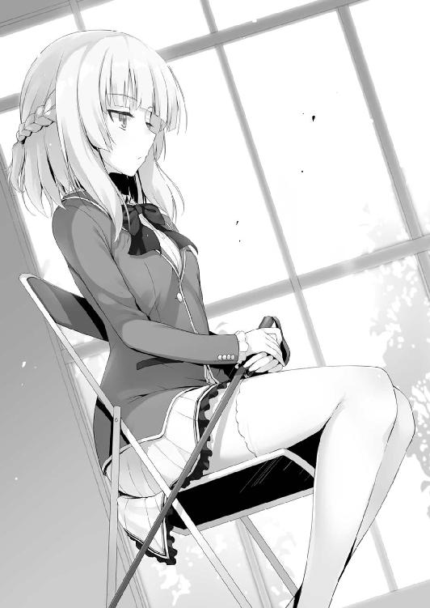
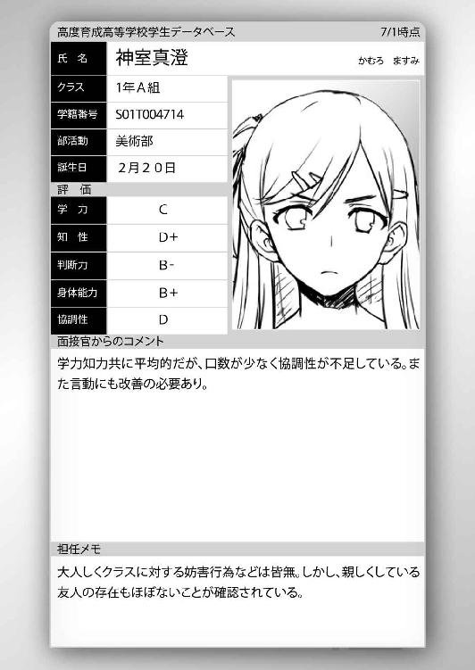

| ようこそ実力至上主義の教室へ 5 <ようこそ実力至上主義の教室へ> (MF文庫J) | |
| 衣笠 彰梧 & トモセシュンサク | |
| KADOKAWA / メディアファクトリー (2017) | |
ようこそ実力至上主義の教室へ５
衣笠彰梧

本作品の全部または一部を無断で複製、転載、配信、送信したり、ホームページ上に転載したりすることを禁止します。また、本作品の内容を無断で改変、改ざん等を行うことも禁止します。
本作品購入時にご承諾いただいた規約により、有償・無償にかかわらず本作品を第三者に譲渡することはできません。
本作品を示すサムネイルなどのイメージ画像は、再ダウンロード時に予告なく変更される場合があります。
本作品の内容は、底本発行時の取材・執筆内容に基づきます。
本作品は縦書きでレイアウトされています。
また、ご覧になるリーディングシステムにより、表示の差が認められることがあります。
○須藤健の独白
正直、俺は人間が出来てる方じゃない。
そんなことは周りに言われるまでも無く分かってる。
水商売してたお袋が家を出て行った時、俺は強くなろうと決めた。
小さく丸まった親父の背中。
清掃員をしながら毎日粛々と過ごす姿に吐き気を覚えたことも多い。
バカだった俺は勉強を早々に諦めスポーツの世界に入った。
最初はテニスや卓球といった一人のスポーツを好んだが、どうもしっくりこなかった。
そつなくこなすことは出来るが一流にはなれないとわかった。
そんな俺が出会ったのがバスケ。
チームプレイなんてものは苦手だが、不思議とバスケだけは素直に受け入れられた。
だから実力が伸びた。
全国でも屈指のバスケ強豪である高校からスポーツ推薦を貰った。
だが暴力事件を起こし、それが白紙に戻った時に俺は痛感したんだ。
俺って人間はクズの両親から生まれたクズなんだと。
だからこの学校を選んだ。
金がかからず、そして将来までも約束されるっていう夢の学校を──
○体育祭開幕
「干支の動物の順番と割り振られた生徒たちの名字が、優待者を探し出す鍵だったんだね」
場所は混雑するカフェ『パレット』の一番奥のテーブル席。
夏休み明け、オレは平田と軽井沢、そして堀北という奇妙なメンバーで昼食のテーブルを囲んでいた。目的は夏休みの最中に行われた船上特別試験の復習。12の干支のグループに分けて行われた混合チームによる優待者探しの答え合わせが行われていた。
「兎は干支で４番目。綾小路くん、一之瀬さん、伊吹さん、そして軽井沢さんと続くよね」
「そっか。あいうえお順であたしは４番目。だから優待者だったってわけね」
感心したように軽井沢が頷く。それにしても、この場にいる女子２人は一見不釣り合いなはずだが、平田が存在することで何故か違和感をかき消してしまうから不思議だ。
「でもさ、その法則ってもの凄くシンプルじゃん。誰でもわかるっていうかさ。堀北さんたちがいた竜グループは５番目の櫛田さんが優待者だったってことでしょ？」
答えを聞いた軽井沢はパックにストローを挿し、牛乳を口に運んだ。
「そうね。確かに答えを知ってみればシンプルよ。けれど試験中にその答えに辿り着くのは容易じゃない。自分たちのクラスに存在する３人の優待者だけじゃ優待者の法則の確証は得られないわ」
自分たちを含めもう１クラス分優待者３人の名前を知って、ようやく可能性が見えてくるといったところか。それに干支の順に対応する名字の順で優待者が定められていると気づいたとしても、最初の一回目の回答はリスキーであることに変わりはない。
万一答えを外せば相当なダメージを受けるからだ。
もちろん、その賭けに勝てば一発で全てをひっくり返すことも出来るが。
「引っかかるのはＣクラスだね。龍園くんは試験中に法則に辿り着いたと思うんだ」
平田の推察は多分当たっている。そうでなければあれほどのことは出来ない。
「でもさ、変じゃない？ だとしたら何でミスしてるわけ？」
「確かにその点は僕も引っかかるんだ。大きなリスクがあるとは言え、法則が分かっていたのなら結果的に全ての優待者を見抜いてもおかしくない。つまり間違うことなんてなかったはず」
しかし、状況を整理してみればＣクラスは答えを間違えている。
堀北が少し違う観点から推理したことを口にした。
「Ｃクラスは龍園くん１人の独壇場に見えていても一枚岩じゃないってことが、考えられるんじゃないかしら。独裁政権には不満を溜め込む人間も少なくないから」
「確かにそうだね。答える権利は生徒全員にあったわけだから、龍園くんの方針に従わなかった生徒や統率しきれなかった生徒が失策した線は捨てきれないと思う。もし自分が正解すれば受け取るポイントは膨大なわけだしね」
堀北と平田の推察は悪くない線だ。ただ、そうだと言い切れないのもまた事実。何故なら裏切り者がいた場合龍園は徹底してその人物を探し出す。メールを削除してその場をしのいだとしても、あいつならプライベートポイントを確認するところにまで踏み込んでくるかも知れない。
「あなたはどう考えているのかしら、綾小路くん」
そんな堀北の振りで、平田と軽井沢も同時に視線をオレへと向けてくる。
一極集中する視線に思わずむせ返りそうになった。
「さぁ。皆目見当もつかないな」
そう言って誤魔化すと、一気に興味を失ったのか視線は散り散りになった。
軽井沢だけがまだこちらを見ていたので少しだけ目を合わすと遅れて視線を逸らされた。
「何にせよ僕らはまず関係の構築が最優先じゃないかな。こうして堀北さんや綾小路くんと話し合いを持てて嬉しいよ」
今までは平田が望む話し合いを堀北が望んでこなかった。
しかし２つの特別試験を終えついに堀北の考え方にも変化が現れ始めたということだろう。自分自身が追い込まれることで、１人では戦えないという事実を少しずつ理解し始めている。
「仕方ないでしょう。干支試験は一人じゃ絶対に攻略しきれない特別なものだった。今後もそれが予想されるとすればある程度繫がりを持つことは必要になってくるもの」
堀北が考えを変えさせられた最も大きな要因はそこらしい。だがその通りだ。孤独に戦い続けるのには限界がある。今後も独りでは戦えない社会の縮図的試験が多いと予想される。
「それにしても、あなたたちは上手く龍園くんの手から逃れられたものね」
堀北のチームと違い、別グループの優待者だった軽井沢は、見事その正体を見破られることなく試験をやり遂げた。Ｄクラスにもたらした間接的恩恵はけして小さくない。
「まぁね。あたしポーカーフェイスって意外と得意だし。ねー？ 洋介くんっ」
平田の腕に抱きついた軽井沢が上目遣いに微笑む。とても２人が一度ギクシャクした関係とは思えないほどだ。これが演技かそうでないかは興味の対象外だが。
「龍園が答える前に別のヤツが答えを間違えてくれたからな。そのお陰だ」
しかしいつの間に平田を下の名前で呼ぶようになったのか。......洋介。少し呼んでみたいが無理だ。平田と軽井沢、２人の複雑な状態が作り出した新しい関係かも知れない。
そんな平田は軽井沢に笑顔を返し、そして堀北に顔を向けた。
「ひとつ僕から提案があるんだけどいいかな」
平田の提案に対して堀北は答えることなく無言を貫いた。話せ、という意思表示だ。
「まずはクラスを一丸とするために、櫛田さんを仲間に引き入れたいんだ。僕たち４人で補いきれない部分を彼女なら補ってくれると思う。池くんや山内くんを始め、男子の多くをまとめきれる人は限られているからね」
確かにその辺りの生徒を制御する適任者は櫛田かも知れない。だが、それを簡単に堀北が良しとするかは分からない。入学してから今日まで二人の関係は常に悪い。
「不要ね。コントロールという意味では否定しないけれど、私たちだけでもやれることだわ。そのためにあなたと軽井沢さんに声をかけたのよ。二人が力を貸してくれれば問題は打破できる。どこかの誰かさんのように捻くれていれば別かも知れないけれど」
横目でオレを見てきた。実に失礼なヤツだ。
「確かに綾小路くんならあたしたちについてこないかもねー」
平田以外の２人は同意するように頷いた。
「オレを捻くれ者だと思うのはお門違いだ。長いものには大人しく巻かれる群衆の一人。まさにおまえの言うコントロールできる人間。つまり小さい人間ってことだ」
「自分が小さい人間だと言える人間は小さくない。それが一つの答えよ」
「じゃあお前は小さな人間なのか？」
「私？ 私が小さい人間なわけないでしょう？ バカにしないでもらえる？」
「......お、おう」
もはやコントとしか思えない流れだったが、堀北が冗談で言っているようには全く見えない。これはボケなのかどうなのか非常に判断が難しいが、間違いなく本気だろう。
１
午後の授業は２時間ホームルームになっている。
Ｄクラスの担任である茶柱先生がやってくると淡々と説明を始めた。
「今日から改めて授業が始まったわけだが、２学期は９月から10月初めまでの１ヶ月間、体育祭に向け体育の授業が増えることになる。新たな時間割を配るためしっかり保管しておけ。それから時間割表と共に体育祭に関する資料も配っていく。先頭の生徒はプリントを後ろに回していくように」
体育祭という言葉を聞いた途端一部から悲鳴が上がった。その行事の到来を楽しみにしている生徒もいただろうが、やはり運動がメインの行事となると毛嫌いする生徒も多い。
「また学校のＨＰでもプリント同様に詳細が公開されている。必要なら参照するように」
「先生、これも特別試験の一つなんですか」
クラスの代表として平田が挙手した後に質問をする。
当然そうだと返って来る、と。誰もがそう思っていたのだが......。
「どう受け止めるのもおまえたちの自由だ。どちらにせよ各クラスに大きな影響を与えることに違いは無いがな」
そう言って肯定とも否定とも取れない曖昧な答え方を茶柱先生はした。運動が苦手な生徒からは更に悲鳴があがる。これが普通の学校なら手を抜くなりサボるなり好きにできるが、クラスの命運を左右するイベントとあっては苦手でも避けて通ることは出来ない。
「っしゃ」
対して運動に絶対の自信を持つ須藤たち一部の生徒はここぞとばかりにテンションを上げた。頭脳以外でクラスに貢献できる初めての試験とも言えるだろう。
「綾小路くん、これ──」
まだ周囲が浮き足立っている最中、ひとり先へ先へと資料を読み進めていた堀北が何かに気付きプリントを指差した。オレもページをめくりその場所を確認する。するとそこに書かれていたのは意外な試験方式だった。一瞬だが茶柱先生がこちらを見た気がした。
「既に目を通して気づいている者もいるだろうが、今回の体育祭は全学年を２つの組に分けて勝負する方式を採用している。おまえたちＤクラスは赤組に配属が決まった。そしてＡクラスも同様に赤組として戦うことになっている。この体育祭の間はＡクラスが味方ということだ」
ＢクラスとＣクラスが白組となり、体育祭は赤組対白組で行うものとなっていた。
「うおマジかよ。そんなことってあるのか！」
池が驚くのも無理は無い。筆記試験にしろ特別試験にしろ、基本はクラス別での戦いだった。そのスタンスは崩れないと踏んでいたのだろう。ところが完全なチーム戦とは。前回の船上での特別試験とはまた違う協力態勢。しかも学年を超えての協力戦。
隣の住人は平静を装っているが、内心パニックになっているんじゃないだろうか。
３年のＡクラスにはコイツの兄である堀北学が属している。場合によっては話し合いを持つこともあるかもしれない。
「いよいよお前があいつと接触する機会が出来るってことか」
「......ここでその話をしないで」
軽く触れただけで怒られた。どうやら失言だったようで堀北に睨みつけられる。
手に握られた、先端の光るシャープペンシルが不気味だからやめてほしい。
「まずは体育祭がもたらす結果に目を通せ。何度も説明する気はないからな、一度でしっかり聞いておくように」
茶柱先生はプリントをペシペシと叩きながら要チェックポイントを伝えていく。
耳を傾けつつプリントへと視線を落とした。そこに書かれてあるのは以下の通り。
・体育祭におけるルール及び組分け
全学年を赤組と白組の２組に分け行われる対戦方式の体育祭。
内訳は赤組がＡクラスとＤクラス。白組がＢクラスとＣクラスで構成される。
・全員参加競技の点数配分（個人競技）
結果に応じて１位15点、２位12点、３位10点、４位８点が組に与えられる。
５位以下は１点ずつ下がって行く。団体戦の場合は勝利した組に５００点が与えられる。
・推薦参加競技の点数配分
結果に応じて１位50点、２位30点、３位15点、４位10点が組に与えられる。
５位以下は２点ずつ下がって行く（最終競技のリレーは３倍の点数が与えられる）
・赤組対白組の結果が与える影響
全学年の総合点で負けた組は全学年等しくクラスポイントが１００引かれる。
・学年別順位が与える影響
総合点で１位を取ったクラスにはクラスポイントが50与えられる。
総合点で２位を取ったクラスのクラスポイントは変動しない。
総合点で３位を取ったクラスはクラスポイントが50引かれる。
総合点で４位を取ったクラスはクラスポイントが１００引かれる。
「簡単な話、気を抜かず全力で競技する必要があるということだ。負けた組が受けるペナルティはけして軽くないからな」
確かにクラスポイントがマイナス１００というのは大きいが、他にも気になる点がいくつかある。
「あの先生。勝った組は何ポイント貰えるんですか？ 記載がないみたいですが」
平田からの素朴な疑問に対し茶柱先生は非情な一言を浴びせる。
「何もない。マイナスという措置を受けないのみだ」
「うげ、まじかよー。全然おいしくないじゃん」
阿鼻叫喚、教室内が騒がしくなるのも無理はない。今までは大きなリスクと同時に計り知れない見返りが用意されていた。それが今回の体育祭は殆ど見当たらないのだ。
「クラス別のポイントもしっかりと計算されることになっているから注意するように。仮にＡクラスが飛び抜けて活躍しておまえたちの属する赤組が勝ったとしても、Ｄクラスの総合点が最下位だった場合には１００ポイントのペナルティを受けることになるからな」
つまり楽して組が勝ったとしても、得するどころか損をするということか。この仕組みが意味するのは『全力で戦い手を抜かない事』に重きを置いているということだ。
かと言ってＤクラスだけが活躍してもダメだ。仮に学年別総合点で１位を取り50ポイントを得ても白組に負ければマイナス１００ポイントとなり損をする。負けた上に総合点で４位を取ってしまったら、合わせてマイナス２００ポイントのペナルティを受ける。赤組が勝つことを大前提にＤクラスも強く貢献しなければならないらしい。こう見ると他の試験よりも厳しいことが予想されるが、一応特別ボーナスのようなものも見受けられた。
・個人競技報酬（次回中間試験にて使用可能）
各個人競技で１位を取った生徒には５０００プライベートポイントの贈与もしくは筆記試験で３点に相当する点数を与える（点数を選んだ場合他人への付与は出来ない）
各個人競技で２位を取った生徒には３０００プライベートポイントの贈与もしくは筆記試験で２点に相当する点数を与える（点数を選んだ場合他人への付与は出来ない）
各個人競技で３位を取った生徒には１０００プライベートポイントの贈与もしくは筆記試験で１点に相当する点数を与える（点数を選んだ場合他人への付与は出来ない）
各個人競技で最下位を取った生徒にはマイナス１０００プライベートポイント。
（所持するポイントが１０００未満になった場合には筆記試験でマイナス１点を受ける）
・反則事項について
各競技のルールを熟読の上遵守すること。違反した者は失格同様の扱いを受ける。
悪質な者については退場処分にする場合有。それまでの獲得点数の剝奪も検討される。
・最優秀生徒報酬
全競技でもっとも高得点を得た生徒には10万プライベートポイントを贈与。
・クラス別最優秀生徒報酬
全競技でもっとも高得点を得た学年別生徒３名には各１万プライベートポイントを贈与。
今までの試験には見劣りするものの、条件の厳しいものから手軽なものまで、幅広い特典はしっかりと用意されている。そして注目すべきは個人競技報酬のメリットとデメリットだ。今まで聞いたことのない項目が追加されている。
「せ、先生先生！ この１位とか２位とかを取った時の特典！ 筆記試験の点数を得るってなんスか!?」
早速、池が前のめりに茶柱先生へと詳細の説明を求める。その様子がおかしかったのか茶柱先生が珍しく少し笑った。
「おまえの想像通りだ池。体育祭で入賞するごとに筆記試験に補塡できる点数を得る。おまえは特に英語や数学が苦手だったな。得た点数は好きに使って構わないということだ。点数を持っているだけ、次回のテストで大いに役立ってくれるだろうな」
浮足立つのも無理はないが、運動のみを得意とする生徒たちからも歓喜の悲鳴が上がった。体育祭で活躍し点数を得ていれば赤点を取ってしまった時に補える。つまり退学を免れる可能性が上がると言うことだ。
赤点付近の生徒にしてみれば待ってましたと言わんばかりの状況だ。平田たちのような優等生には大した恩恵ではないが、その分不要ならプライベートポイントを得てしまえばいい。詰まるところ、どちらにしろありがたい報酬であることに違いは無い。
３バカ以外にも学力に不安を覚えている生徒は少なくない。筆記試験に関しては退学という最大のペナルティが控えているため全く油断できない要素だ。
ただしうまい話には当然裏もある。
・全競技終了後、学年内で点数の集計をし下位10名にペナルティを科す。
ペナルティの詳細は学年毎に異なる場合があるため担任教師に確認すること。
という何とも厄介そうな文面もその下に書かれていた。
「先生、このペナルティってどんなものなんですかっ」
「おまえたち１年生に科せられるのは次回筆記試験におけるテストの減点だ。総合成績下位10名の生徒は10点の減点を受けるから注意するようにな。どのような方法で減点を適用するかは筆記試験が近づいた時に改めて説明するためここでは質問を受け付けない。また下位10名の発表も同様に、筆記試験説明の際に通告することになっている」
「げええええっ!?!? マジ!?」
つまり仮に池が学年で最下位の成績を取れば、次の筆記試験では赤点ラインより10点多く取らなければならないことになる。相当苦しい試験を迎えることになるだろう。
一通りの説明を受け終えると、次は体育祭の競技の詳細を確認していく。
体育祭の種目を分類すると『全員参加』『推薦参加』の２つに分けられる。全員参加とは文字通りクラス内全員の生徒が参加する種目。個別で戦う１００メートル走もそうだし、綱引きなどの集団競技もこれに該当する。
対する推薦参加とはクラスから選抜された一部の生徒が参加する競技。推薦と書かれてはいるがクラスで合意があれば自薦でも構わないし、１人が複数の推薦参加競技に出ても構わない。要は話し合いで決めるべき種目のようだ。内容は借り物競争や男女混合二人三脚、１２００メートルリレーなどだ。指折りの実力者が参加されることが予想される。
この体育祭、点数の増減などは純粋な結果に基づいて行われるためルールは至極単純だが、チーム戦と個人戦の複合型である点は非常に厄介だ。敵となるＢクラスやＣクラスに注意を払うのは当たり前として、仲間であるＡクラスにも気をつけなければならない。基本的には助け合うが、学年別の総合点で勝つためには、出来る限り自分たちのクラスで競技別の上位を占める必要がある。無人島といい船といい、シンプルにはやらせてもらえない作りになっているな。
「体育祭で行われる種目の詳細は全てプリントに記載されている通りだ。変更は一切ない」
「うげげ、これめっちゃハードじゃん！ 中学の頃の比じゃないって！」
・全員参加種目
①１００メートル走
②ハードル競走
③棒倒し（男子限定）
④玉入れ（女子限定）
⑤男女別綱引き
⑥障害物競走
⑦二人三脚
⑧騎馬戦
⑨２００メートル走
・推薦参加種目
⑩借り物競争
⑪四方綱引き
⑫男女混合二人三脚
⑬３学年合同１２００メートルリレー
王道の競技が並ぶ全13種のラインナップ。番号は競技が行われる順番を示している。どうやら不満が出ているのは全員参加の種目数の多さらしい。
「普通３つとか４つですよ、１人がやるのって！ ていうか一日で無理じゃないスか？」
「心配はありがたいが学校側も当然考えてある。応援合戦やダンス、組体操などの種目は一切存在しない。あくまでも体育祭は体力、運動神経を競い合うものだからな」
運動が苦手な連中の抵抗も虚しく簡単にあしらわれてしまう。
「それから非常に重要なことだが、ここに参加表と呼ばれるものがある。参加表には全種目の詳細が記載されている。おまえたちはこの参加表に自分達で各種目にどの順番で参加するかを決めて記入し、担任である私に提出してもらう。このような形はどの中学校でも取っていないと思われるので、間違わないように注意してほしい」
「自分たちで参加する順番を決めるって、一体どこまでですか......？」
当たり前のような平田からの質問。当たり前が故に茶柱先生からの回答は早かった。
「全てだ。体育祭当日に行われる競技の全て、何組目に誰が走るかまで全部おまえたちが話し合って決める。締め切り時間以降は如何なる理由があっても入れ替えることは許されない。それが体育祭の重要なルールだ。提出期間は体育祭の１週間前から前日の午後５時までの間。もしも提出期限を過ぎた場合はランダムで割り振られるので注意するように」
自分たちで計画を立て、考えて勝ちに行く体育祭ということか。
体育祭において参加表の存在はクラスの命綱とも言えるものになることは明白だ。
「私からも質問よろしいでしょうか。茶柱先生」
と、今まで静かに聞いていた堀北が、手を挙げた。
「好きに質問しろ。今のうちだしな」
その様子を見て茶柱先生は薄く笑った。
平田も堀北もこの学校の仕組みについてはある程度把握している。
この段階で極力質問しておくことが後に繫がることは分かりきっているからな。特にポイントに影響を及ぼさない今だからこそ、いくらでも疑問は解消しておくべきだ。
体育祭当日になってアレコレ質問したところで答えてもらえなかったり、既に手遅れだったりすることは目に見えている。
「決められた参加表は受理された時点で変更できなくなるとのことですが、当日欠席者が出た場合はどうなるのでしょうか。個人競技であれば記載通り欠席扱いで済むと思いますが、団体戦......特に数名で行う騎馬戦や二人三脚といった競技では１人欠けると競技そのものが成立しません」
「『全員参加』の競技において必要最低限の人数を下回る形で欠員が出た場合は続行不能とみなし失格となる。おまえの言った騎馬戦であれば１つ騎馬を作ることが出来なくなる。よって１騎少ない状態で対決することになるだろう。二人三脚も同様だ。パートナーは健康で丈夫な生徒を選ぶのが賢いだろうな」
一蓮托生。運動神経が優れている生徒を選ぶことは重要だが、同じく健康であり怪我をしない仲間と組むことも大切だということか。
「だが救済措置として特例もある。体育祭の花形でもある『推薦競技』に関しては代役を立てることが許される。しかし好き勝手に代役を立てられるようであれば参加表の意味がなくなり、極端な話噓をついて替え玉を用意することもできてしまう。よって特別な条件を設けている。代償としてポイントを支払うことで代役を認める決まりだ」
不正行為を許さないために代償を支払わせるということか。
「その話に付け加えてお聞きしますが、体調を崩したり深い怪我を負っても、本人が希望すれば代役を立てず続けることは可能でしょうか。それともドクターストップがかかりますか」
「基本的には生徒の自主性に任せている。自己管理をすることも社会に出る上で必要不可欠なことだからな。重要な会議の日に熱を出したからと言って簡単に休めるものではない。死に物狂いで平静を装うことも必要になる」
要は体調不良になっても自己責任のもと参加することは止めないらしい。
「とはいえ傍観できない状況になれば、さすがに止めざるを得ないがな」
「分かりました。ではその代役に必要なポイントは幾らなのですか」
「各競技につきプライベートポイントが10万。高いと見るか安いと見るかは自由だ」
「......なるほど。ありがとうございます」
出せない額ではないが、けして安くはない。しかし場合によっては代役が必要な場面に陥ることも想定しなければならないだろう。
「他に質問者がいなければ話は打ち切るぞ」
グルっと教室を見回す。幾人かの生徒はちょっとした疑問を感じていたのか顔を見合わせたり小声で話し合っているが、茶柱先生に確認しようとはしない。その疑問は持ち越すべきじゃないが、誰も指摘はせず質問タイムは終了してしまう。茶柱先生もわざわざ質問しても構わないと促すような真似はしない。
「次の時間は第一体育館に移動し、各クラス他学年との顔合わせとなる。以上だ」
時計を確認する茶柱先生は、ホームルームの時間が残っていることを言及した。
「まだ20分ほど授業時間が残っている、残りの時間はお前たちが好きに使うといい。雑談するのも真面目に話し合うのも自由だ」
教師お墨付きの許可が出たことで、抑えられていた静けさが一気に爆発した。
それぞれのグループが集まり好き勝手に体育祭について話し合い始める。
堀北の下へは須藤、そして池やら山内が集まって来た。
「堀北。体育祭どうやって乗り切るか話し合おうぜ」
「賛成賛成。１位取れる方法とか考えてくれよっ」
そんな群がる男たちの光景を他人事のように見ていた堀北が深い溜息をつく。
「どうして私のところにはこんな人たちしか来ないのかしら......」
「悲しい現実だよな」
全くね、と堀北は言いつつも真面目に考える気はあるようでノートを開いた。
「いいわ。ひとまずあなたたちの意見を聞いてあげる」
「はいはい！」
早速元気良く手を挙げたのは池。堀北はペン先で指し、発言を促した。
「楽して勝ちたい！」
「そういうのは意見として認められないわ。低レベルな発言は止めてもらえる？」
ばっさりと切り捨てる。まぁ、流石に池の希望は切り捨てられても仕方がない。
「Ｄクラスが勝つための方法はあるぜ」
自信満々に口を開いたのは須藤。
「期待はしていないけれど聞いてあげるわ」
「全員参加はわかんねーけどよ、俺が全部の推薦競技に出る。そうすりゃ勝ちだ」
誰よりも運動に自信のある須藤は、我先にとそれを主張した。
「発言そのものは池くんと同レベルではあるけれど、単純ながら確実な方法ね。あなたはクラス内でも飛び抜けて運動神経がいいもの。全ての推薦競技に参加するのは悪い話じゃないわ。同じ人物が複数に参加してもルール上問題はないから」
オレも賛成だったが、池たちは不満があるようで批判を口にした。
「俺らだってチャンスは欲しいんだけどー。だって３位以内なら点数が貰えるしさ」
「それでクラスの勝つ可能性が下がるとしてもかしら？」
「いや、そうだけどさ......。チャンスはいっぱい欲しいって言うか......」
「推薦競技つったら普通、運動神経の良い連中が出てくんだぞ。おまえじゃ無理だ寛治」
「わかんねーだろー。もしかしたら偶然にってこともあるしさ。公平にすべきだろー」
「この先、クラスの話し合いは必要不可欠でしょうね......」
今ここで池だけを説き伏せることは出来るかもしれないが、堀北はクラス内で他にも池と同じように考える生徒が出ることを想定し、そう言った。
だが今度はその発言が須藤に火をつけてしまったようだった。
「運動のできる奴が幾らでも参加する。それが一番だろ、甘いぜ鈴音」
須藤の言いたいことはよくわかる。それは堀北も反対していない。単純に勉強のできる優等生からしても、須藤のような生徒が体育祭で活躍してくれる方が理想的なのだ。筆記試験で赤点の危険性を持つ須藤のような生徒がボーナスを多数得てくれれば文句はない。
だがクラスの全員が賛同するかと言われればそうシンプルな話にはならない。入賞することで得られる特典は、学力が低い生徒ほど魅力的に感じるものだからだ。
常に退学の危機に晒されている生徒たちには喉から手が出るほど欲しいものだろう。
「私はあなたの全種目参加の意志は汲むつもりよ。けれど、だからと言って手放しで全部の競技に出るのを後押しするわけでもないわ」
「なんでだよ」
「体力は無尽蔵じゃないもの。立て続けに出れば当然消耗する。連勝は難しいわ」
「だとしても運動音痴に任せるよりいいだろ。疲れててもこいつらよりは働けるぜ」
オレ含む男子たちを一瞥して鼻で笑う。悔しそうな池たちだが反論は出来なかった。
「今ここでこの話を続けても答えは出ないわ。次のホームルームで決めましょう」
これ以上の進展はないと踏んだ堀北はそう言って早々に話を締めくくった。
２
２時間目のホームルームは全学年の顔合わせが行われる予定になっていた。
体育館へと集められたのは、総勢４００名以上にも及ぶ大勢の教師と生徒。
１年生から３年生まで、赤組と白組に分かれた全校生徒の生徒たちだ。
堀北はどこか落ち着かない様子で周囲を見回している。
この学校で生徒会長を務める兄、堀北学を探しているのだろう。だが場が悪い。これだけ人数が多いとクラスが分かっていても簡単には視界に入ってこない。
それに兄への迷惑を考えてか、控えめな視線で自重していることもあり視野は狭そうだ。
そんなに兄貴が好きならもっと堂々としていればいいと思うけどな。
堀北にとってはそれが何よりも難しく、とてもできないことなのだろう。思い返せばコイツからは一度も兄貴に会いに行っていない。全て向こうからの接触だけだ。
集められた生徒たちが床に座ると数名の生徒が前へと出てきた。全員の視線が集まる。
「俺は３年Ａクラスの藤巻だ。今回赤組の総指揮を執ることになった」
どうやら堀北の兄貴が仕切るわけではないらしい。
生徒会長だから何でもかんでも仕切ると思っていたがそうでもないようだ。
とすると逆に普段は何をやっているのか気になるところだが。
「一年生には先にひとつだけアドバイスをしておく。一部の連中は余計なことだというかも知れないが、体育祭は非常に重要なものだということを肝に銘じておけ。体育祭での経験は必ず別の機会でも活かされる。これからの試験の中には一見遊びのようなものも多数あるだろう。だがそのどれもが学校での生き残りを懸けた重要な戦いになる」
上級生からのありがたい、そして何とも曖昧なアドバイスだった。
「今はまだ実感もなければやる気もないかも知れない。だがやる以上は勝ちに行く、その気持ちを強く持て。それだけは全員が共通の認識として持っておけ」
重い一言を放った藤巻は赤組一同を見渡して更に言った。
「全学年が関わっての種目は最後の１２００メートルリレーのみ。それ以外はすべて学年別種目ばかりだ。今から各学年で集まり方針について好きに話し合ってくれ」
藤巻の言葉を皮切りに葛城率いるＡクラスたちがゾロゾロと集まって来る。
Ｄクラスはやや萎縮した様子だ。そのエリート集団に対して緊張感を持っているのだ。１学期のＡクラスの成績は圧倒的で、他を寄せ付けない結果だった。
「奇妙な形で共闘することになったがよろしく頼む。出来れば仲間同士で揉め事を起こすことなく力を合わせられればと思っている」
「僕も同じ気持ちだよ葛城くん。こちらこそよろしく」
葛城と平田は互いに近距離で協力していくことを表明しあう。
本来Ａクラス側にしてみれば最下位のＤクラスと組むメリットはない。しかし手を組んで戦わなければ仲間同士で足を引っ張ってしまうことになる。
ここは兄弟のように信頼しあうというより揉めないよう協定を結ぶ場と言える。
「なああの子......」
オレの傍でそう小さく呟いた池。
しかしそう呟いた気持ちは分からないではない。オレもそうだし、堀北だってそうだろう。Ａクラスの１人の生徒だけが、この場で浮いていたからだ。
だが誰も口には出さない。今は出せる雰囲気ではなかったからだ。
「クラスの方針はそれぞれあると思うが──」
そんなＤクラスの不可思議な視線と感情に気付いているのかいないのか、淡々と葛城が話を進めようとしていると、体育館の中が騒がしくなった。
「話し合いするつもりはないってことかな？」
少し離れたところから、少女の声が体育館に響いた。何事かと皆の視線が集まる。
その声の主は１年Ｂクラスの一之瀬帆波だった。彼女の視線の先では一クラス分ほどの生徒たちが体育館を去ろうとしていた。その中の１人、両ポケットに手を突っ込んだ男子生徒が振り返る。Ｃクラスのリーダー龍園翔だ。
「こっちは善意で去ろうとしてんだぜ？ 俺が協力を申し出たところでお前らが信じるとは思えない。結局端から腹の探り合いになるだけだろ？ だったら時間の無駄だ」
「なるほどー。私たちのことを考えて手間を省こうとしてくれてるんだねー。なるほどー」
「そういうことだ。感謝するんだな」
龍園は笑い、Ｃクラスの生徒全員を率いて歩き出す。
Ｃクラスの独裁政権に乱れがないことを確認させられる光景だった。
「ねえ龍園くん。協力なしで今回の試験に勝てる自信があるの？」
一之瀬はあくまで龍園とも協力するつもりなのか、まだ引き下がる。
だが龍園は足を止めない。
「クク。さぁな」
そう小さく笑い、龍園の指示の下Ｃクラスの生徒全員が引き上げて行く。それをただ遠くから見ていたＤクラスだが、軽井沢が一瞬だけ表情を曇らせる。それも無理はない。夏休み前に行われた船上特別試験において、彼女はＣクラスの女子、真鍋たちと揉めた。
それにより隠していた『虐められていた過去』を暴かれてしまったのだ。
だがその軋轢を知る者は当人たちを含めてオレと幸村だけ。その幸村も過去に軽井沢が虐められていたことまでは知らないため、特別気に留めるようなことはしない。
真鍋は一瞬だけＤクラスのほうに視線を向け軽井沢を見た。だがほんの一瞬。すぐに視線を逸らすと何事もなかったかのように龍園について行った。
「向こうは向こうで大変ね。Ｃクラスと組まされるなんて」
Ｄクラスも統率が取れている方じゃないが、Ｃクラスに比べればマシか。クラスのすべての決定権を龍園が持っていることを改めて思い知らされた光景でもあった。
それを見ていた葛城が、堀北にアドバイスを送る。
「今回おまえたちＤクラスが味方だからこそ忠告しておく。龍園を侮るな。ヤツは笑いながら近づいてきて、突然襲い掛かってくる。油断していると手痛いことになるぞ」
「忠告はありがたいけれど、その口ぶりは経験に基づくものかしら」
「......忠告はしたぞ」
深く語ろうとはせず、葛城は元の位置に戻る。
「早くも動き出したということでしょうか」
こちらの陣営からＢクラスとＣクラスを見ていたひとりの生徒が呟く。
先ほどから気になっていた、この場でもひと際異彩を放つ小柄な少女からだった。

ただ一人椅子に座り、静かに目を伏せる少女。その手には細い杖が握られている。
誰の目にも、その少女が足に不安を抱えているのだと映っただろう。
「彼女は坂柳有栖。体が不自由なために椅子を使用しているが理解してもらいたい」
その説明をしたのは本人ではなく葛城だった。
「アレが坂柳......」
Ａクラスで葛城と勢力を二分するという噂のもう１人のリーダーか。
無人島旅行を欠席したのも頷けそうなほどの細身で、足腰が不自由なためか特別に用意された椅子に座っている。その様子や杖を持つ姿に周囲の視線が集中するも、本人は全く気に留める素振りはない。
短めの髪は染めてあるものなのか、銀色。強い特徴になっている。肌は色白。名前は有栖らしいが、本当に不思議の国からやって来たと思うような存在感だ。
「めっちゃ可愛いじゃん......」
Ｄクラスの男子がそう騒ぎ立てるのも無理はない。櫛田や佐倉とはまた違う可愛さ、美しさ。そして儚げな様子は守ってあげたくなる雰囲気をかもし出している。
だがいつものようにお茶らけた空気を出して、声をかけるような真似が男子連中には出来なかった。希薄ながらも、何故か強い意思を感じさせるのはその大きな瞳の力強さのためだろうか。近寄ると何か悪いことが起こるような気さえしたのかも知れない。
注目を浴びていることに気付いた坂柳が柔らかく微笑んだ。
「私に関しては残念ながら戦力としてお役に立てません。全ての競技で不戦敗となります」
自らの体の弱さを謝罪する。
「自分のクラスにもＤクラスにもご迷惑をおかけするでしょう。そのことについてはまず最初に謝らせて下さい」
「謝ることは無いと思うよ。誰だってその点を追及することはないから」
平田を始め須藤もそのことについては少女に不満を漏らすことはなかった。
どうにもならないことに関して責め立てるものは、一人としていない。
「学校も容赦ないよな。最初から身体が不自由なら許してくれたっていいのによ」
「そうだよ気にしないで」
「お心づかいありがとうございます」
坂柳は前評判とは大きくことなり、非常に礼儀正しく大人しかった。聞き及んでいた攻撃的だという印象は全く無い。一方、対となる葛城はそんな坂柳を横目に神妙な面持ちを維持している。だが坂柳という生徒が強い存在感を放っているのは杖や椅子の存在のせいだけではない。何も知らない池たちには、ただＡクラスとＤクラスで別れて座っているように見えているだろうが、オレから見れば一目瞭然。明らかに葛城と坂柳の間で線引きするようにＡクラスの生徒たちが分かれて座っていたのだ。Ａクラス内にある派閥の象徴だ。当初は互角か優勢と思われていた葛城陣営だが、今は見る影もない。弥彦を含め数名の男子と女子が葛城についているものの、残りの生徒はほぼ全て坂柳陣営についていたからだ。まるで自らの力を誇示するようにあえてその状態にしているようにすら思えた。
坂柳自身は無人島試験にも船上での試験にも参加していない。明言はされていなかったが船上での特別試験も不参加によるペナルティを受けている可能性は十分にある。つまり個人としての結果を残せていないにもかかわらず味方が増えている状況を作り出している。
外見の可愛さがどうとか、そう言う話ではないだろう。恐らくオレたちの知らないところで坂柳は着々と実績を積み重ねて信頼を得ているということだ。
それに、葛城自身の失策も少なからず影響しているだろう。
他クラスの諸事情など知ったことじゃないが、葛城は基本的に手堅い戦略を打つ。安易なミスを繰り返すタイプには見えないが、失策にはこの少女が関係しているのだろうか。
ともかく坂柳は自らの力不足を謝罪したのみで、以降口を挟む気配はない。
まるで葛城や平田たちの行動、その出方を観察しているように見えた。
考え過ぎ、だろうか。単純に体育祭では役に立てないことが分かっていることから、大人しくしているだけかも知れない。今分かるのは考えても答えなど出ないということだ。
葛城はその視線を知ってか知らずか、平田と会話を続け、互いの方針を確認しあう。
「ところでおまえたちとの協力関係についてだが、互いに邪魔しあわないというレベルで問題ないと思っているのだが、それで構わないだろうか」
「つまり参加競技の詳細までは詰めないってことだね？」
「そうだ。下手に公表すると余計な火種にもなりかねない。もしＣクラスやＢクラスに情報が洩れればＤクラスを疑うことになり必然的に連携は乱れてしまうだろう。それに味方であるはずのＤクラスの戦力を分析して加味するのも苦労が増えるだけだしな。あくまで俺たちは対等に協力し合い対等に戦う。それが手堅いと判断した」
「......そうかも知れないね。信用関係を構築するには難しい学校であることは分かっているつもりだよ葛城くん。それに組としては味方だけど、競い合うことには変わりないしね」
それで構わないだろうか、と平田はクラスメイトに確認を取る。反論する声はなかった。
どちらのクラスもいきなり信用して全てを曝け出すことは出来ない。
それなら適切に距離を取っておく方が無難というものだ。
堀北もその点は納得の上なのか何も口出ししてくることはなかった。
「とはいえ団体競技の中には予め打ち合わせを必要とするものがあるのも事実。それに関しては後日もう一度同じような場を設けたいと思うのだが構わないだろうか？」
「うん、それでいいと思う。皆とも相談しあってみるよ」
「よろしく頼む」
２人の会話は無駄がなく的確で早い。スムーズにまとまりそうだな。
「綾小路くん。この特別試験で勝つにはどんな方法があると思う？」
一方で堀北は体育祭について自分なりに指針を示そうとしていた。
「今回は体育祭だ。運動神経の有無だけが学校に問われている......とは思わないのか？」
「基本的にはもちろんその通り。能力で順位を競い合うものだと解釈しているわ。もし運動神経以外に結果に響くものがあるとすれば、それは運じゃないかしら」
「運か」
らしからぬ発言のように見えるが、確かにその一面もあるかも知れない。
「勉強と違ってランダムに競い合う相手が選ばれるもの。要素としては大きい」
事実、体育祭は組み合わせの運に結果が左右される面はあるだろう。通常なら８割の相手に勝てる堀北も、残り２割の強敵を引けば敗北することになる。逆に１割しか勝つ希望のない運動音痴も、それ以下の運動音痴に当たれば勝てるかも知れない。
「でも私が求めているのはそんな不確定な要素じゃない。確実な何かよ。運動神経の良さを根底に持ちながらも、運だけに任せない方法。無人島や船上の特別試験には無限の可能性があった。......今はそう感じている。だから今回もきっと──」
今までの手痛いミス、失態からか、今の堀北には勝利への執念がより色濃く見て取れた。
「なあ。今回、無人島や船上の試験と大きく違うのは何だと思う」
「......違い？ 私には同じ特別試験に思えるわ」
「確かに似てることは否定しない。でも学校側は絶対に同じだとは認めないだろうな」
「言ってる意味が分からないわね。Ａクラスと協力関係にあるから？ でも船上でも各クラスとグループを作らされる不可解なチーム戦は行われたし......」
「そうじゃない。そもそも大前提が違う」
小出しの言い方に堀北が苛立ちを見せたところで、オレは気づいたことを言う。
「この体育祭に関して学校側は『特別試験』だとは一言も言ってない。オレたち１年は勝手にそう口にしてる節があるが、茶柱先生を含め他の先生は全て体育祭としか言ってないんだよ。３年の藤巻だってそうだ。渡されたプリントにも『特別試験』の文字はなかった」
堀北は気がつかなかった、というよりピンと来ていないようだった。
「だとしても、それがなに？ ポイントの増減や仕組みは特別試験とほぼ同じよ」
「確かにな。内容って意味じゃ相違ない。けど本質は違う。例えば定期的に行われる筆記試験は、点数を買ったり売ったりなんて裏技があるにせよ原則として実力が大いに試される。それと同じようにこの体育祭もまた基本的に体力やセンスを求めていると見るべきだ。下手な小細工を打ったところで大勢に影響はない。いや、出ないように出来ている。純粋な気持ちで挑むクラスが真価を発揮できると思うけどな」
もちろん、小細工が出来ないわけでも、する意味がないわけでもない。
だが体育祭が始まってしまえば大局を動かすことは実質不可能だろう。
筆記試験前か後なら打てる手はあっても、試験中に出来ることは限られているように。
「今回の体育祭の肝は本番前にしっかりと準備すること。そして本番で結果を残すこと、ただそれだけだ。シンプルイズベスト」
「私が言いたいのはその本番前の準備よ。確実にＤクラスを勝たせたいの」
「違うな。おまえがしようとしてるのは準備じゃない。攻略や抜け穴探しだ」
「その違いが......私にはよくわからないわ」
「準備って言うのは、例えば誰がどの順番で競技に参加するか、他クラスの誰が運動神経が良くて悪いかを把握する。どんな順番で出て来るかを見極める。そして情報を漏らさないようにする。その類だ。攻略や抜け穴ってのは競技の前に誰かを欠席にさせたり、途中でリタイアさせるようなものを指す。要は強力な一手が欲しいってことだろ？」
今まで正攻法で戦おうとし、敗北してきた堀北がそう考えるようになるのは自然の流れ。
この体育祭で相手に出し抜かれないように手を打ちたいと思うのは普通のことだ。
とは言え、簡単に手を打てるのなら誰も苦労はしない。
「あくまでも正攻法で戦って勝つ必要がある、ということ？」
堀北がこれから選ぶ答えがどちらにせよ、オレは肯定も否定もしないつもりだ。
何故なら勝つための攻略は１つではなく常に、表裏一体で構成されているからだ。
無人島だろうと船上だろうと、そして体育祭だろうと。
『正攻法』で勝つこともできるし『抜け穴』で勝つことも出来る。
要はその人間に適した戦い方を選択することが大事だ。
こいつはまだ表でも裏でもない。そのどちらかになろうとしている段階。
葛城や一之瀬を表、オレや龍園を裏とするなら、こいつはどちらを選ぶだろう。
今のところ『裏』にやられている堀北がそっちに転びたくなる気持ちも分かるが。
とは言え今回の体育祭では『裏』が非常に難しいものであるからこその忠告でもある。
「どう考えるかはおまえ次第だ。堀北、今Ｄクラスにあるアドバンテージは何だと思う？」
「......ＢクラスとＣクラスが揉めてくれるお陰で私たちは有利に事を運べそう、かしら」
オレは一瞬それを聞き流そうかとも思ったが、考えを改める。
堀北鈴音は孤独に生きてきた分、視野が圧倒的に狭い。
「おまえは勝つために見識を広げようとしているが、まだまだ視野が狭いんじゃないか？」
「Ｂクラスとの協力を拒んだ龍園くんを軽視したことを言っているの？ 彼がその繫がりを拒絶したのだから肯定的材料なのは間違いないと思うけれど」
「本当にそう思うのか？」
「......この後龍園くんと一之瀬さんが和解して協力し合う、そんなことも可能性としてはある。一之瀬さんも龍園くんを好んではいないでしょうけど、勝つためになら感情を捨てて協力するでしょうし。でも現時点で喜ぶことがいけないことかしら？ 好材料の一つとして判断するくらいは悪くないでしょう？」
「それこそが視野が狭いってことなんだけどな」
「イラッとする言い方ね。ならあなたには何が見えていたというの？」
「おまえは今まで龍園の何を見てきた。あいつは勝つことに対して考えを放棄しない。口では適当に言いながらも勝つための戦略を常に立てて行動してる。なのに現時点でいきなりＢクラスの連携を拒絶したのはどうしてだ？ 本当に考えもなく協力を放棄したと？」
「拒絶した理由......？ 既にＢクラスとＣクラスが裏でつながっている、とか？」
そういう風に考えておくことも必要だが、大切なのはもっと違うベクトルだ。
「今想像すべきことはＢクラスとの関係がどうとかじゃない。あいつは既に勝つための戦略を思いついている可能性が高いってことだ。そうでなければ話し合いを放棄するメリットはない。噓をついてでもＢクラスとの話し合いをする方が収穫もあるはずだからな」
「そんなの──可能性は低いと思うわ」
「地震や火事が起きる可能性が低いなら、万一に備えておく必要はないのか？ 非常時に備えて準備しておくことが基本的で大事なことだってことを理解してないみたいだな」
「それは......」
もしも、ということが起こらないのならそれに越したことはない。だが一番最初の時点からそれを放棄してしまったらいざという時に対処に遅れてしまう。
「少なくともオレは、龍園が現時点で勝つための策を１つ以上手にしていると思ってる」
「でも......だとしたら異常よ。まだ体育祭のことを知らされたばかり。勝つも何も......」
「だからその異常さを理解する必要があるんだろうな。正攻法とはどんなことなのか、抜け穴とはどんなことが考えられるのか。そして『未然に防ぐ』方法は何があるのか。それを必死になって絞り出してみたらどうだ？ Ａクラスに上がるためにはそういうことが必要になるはずだろ？」
この時点で勝つ策を手に入れることが出来たのかを考えていけば、自ずと絞られてくる。
もちろんそれは、須藤の喧嘩の一件から船上での試験まで、龍園の戦略や思考を読みきって初めて見えてくるもの。今の堀北にはまだ見えてこないか。
「まぁ色々足搔いてみればいい。失態の尻拭いだけは出来るように準備しておくさ」
「勝手に失態を見せる前提にしないでもらえる？」
果たして今の堀北にどこまで考えることが出来るのか少しだけ楽しみだ。
３
その日の授業を終えても、オレは一人教室に残り続けていた。
窓の外からは部活動に励む生徒たちの声が聞こえてくる。体育祭が近いとは言っても、それぞれにはやることがあり日々の鍛錬を惜しまない。
携帯にイヤホンを繫ぎ、先ほど届いたファイルを開いて状況を確認する。
「なるほどな......」
これで大体の状況は把握できた。
必要ならこれから２、３仕掛ける必要があると思っていたが、それは不要らしい。
上々の首尾に納得したオレは寮に戻ることを決める。
「珍しい時間まで残ってるものだな、綾小路」
正門へ通ずる道すがら、ホースで水を撒く茶柱先生に遭遇した。
「そうかも知れないですね。当番ですか」
「そのようなものだ。正確にはこの辺り一帯が私の持ち場になっているだけだがな」
そう言って手馴れた様子で水撒きを進めていく。
「子供と違って社会人は色々と忙しい。特に体育祭が差し迫ったこの時期はな。それにしても今日はどうした、おまえが一人放課後うろつく姿を初めて見たぞ」
「それは少し大げさじゃないですかね」
「体育祭に向けた準備は万全なのか？」
「それは最近のホームルームで大体把握出来てると思いますけど。違いますかね」
平田と堀北、そして須藤を含め方針や作戦は全て茶柱先生の耳にも入っている。
「おまえなら何か奇抜なアイデア、作戦でも企んでいるのではないかと思ったんだが？」
「何もありませんよ」
「何もない？ 分かっていると思うが──」
そう言ってあの話を持ち出そうとした茶柱先生だが、オレの目を見るなり思いとどまる。
こんな場所で余計な話をしても得をする人間は誰もいない。
「前に先生から聞いた話は忘れてませんよ。でもどうするかはこっちの自由ですよね」
「確かにその通りだ。私から余計な横槍を入れるべきではない。しかし悠長にしている場合でないことも事実だ。おまえを庇う理由がなくなれば私は見放す。ただの教師が圧力に耐えられるほど簡単な仕事でもないわけだからな。庇うに値するだけの成果を挙げてもらわなければ困る」
そんな勝手な期待など知ったことじゃない。日々侵食されていく日常に苛立ちを覚えたオレはこの場から立ち去ることを決める。この教師から余計な話を持ち込まれなければ、面倒な事態には巻き込まれずに済んだはずだ。
いや......もしかしたら遅かれ早かれ時間の問題だったかも知れないが。
「失礼します」
「ああ、気をつけて帰るんだぞ」
僅か数百メートルの帰路を心配されながら、寮へと帰った。
○Ｄクラスの方針
１ヵ月後に開催される体育祭に向け本格的な準備が始まった。週に１度設けられる２時間のホームルームは自由にして構わないとのお達しがあり、時間の使い方はクラスの判断に委ねられた。
本番に向けてまず最初に決めなければならないのは２つ。全員参加の種目に出る順番をどう決めるか。そして推薦競技で誰が、何の種目に出るかだ。
その２つの決定が勝敗に大きな影響を与えることは明らかだろう。
ここでは誰よりもまず、クラスのリーダー的存在である平田が率先して動いた。教壇を明け渡すように教室の一番後ろへと移動した茶柱先生は一言も発しない。様子を見守るつもりなのだろう。
「僕たちは体育祭に向けて行動を始めるわけだけど、練習を始める前に決めることが幾つかあると思う。大切なのは競技の参加順と推薦競技。それをどうやって決めるかだと思う」
「決めるっつったってどうやって決めるんだよ」
須藤からすれば、あまり楽しくない話し合いが始まる。
「うん。例えば全員参加の場合──」
口頭で説明するよりもわかりやすくするためなのか、平田はチョークを握り締めて黒板に書き記し始めた。この辺りがしっかりしている男らしい。
『挙手』『能力』の２つの項目が書かれた。平田は説明をしながら追記していく。
「大雑把ではあるけれど基本的にはこの２つだと思う。競技ごとに希望の順番を聞いていく挙手制。個々の能力を見極めて効率化を図る能力制。このどちらかじゃないかな。それぞれにはメリットデメリットがあると思う。挙手制のメリットは当然、それぞれ希望通りの順番が叶うから楽しく参加出来ることだね。デメリットは希望が重なる場合、各人の思い通りには出来ないし、勝敗にムラが発生することだろうね」
好き勝手にやりたい順番でやらせる方式を取ると、必然的にそうなるだろう。
だが心のハードルはグッと下げることが出来る。
「次に能力制。これは凄くシンプルで、能力の高い人が勝つために最善の配置にすること。メリットは挙手制よりも高い勝率を望めることだけど、強い人だけに偏るから他の人たちの勝率が下がってしまい、それぞれの意思を無視するのが懸念されるかな。基本的には推薦競技にも同じことが言えると思う。ざっくり考えてはみたけど、もしこの２つ以外にもアイデアがあるようだったら気軽に意見してみて欲しい」
一通り説明を終える平田。口頭では理解できない生徒たちも、黒板に詳細を書いてもらったことでゆっくりと各方式の良い面悪い面を把握していく。そして平田が述べた案のどちらかに殆どの生徒は自分の考えが当てはまったのだろう。特に新たな案は出てこない。
「どう考えても能力で決めるべきだろ。自分のことは自分で一番わかってんだしよ」
須藤にはそれ以外の選択肢を選ぶつもりが全くないのか、そう言い切った。
「俺が勝てばクラスが勝つ可能性も上がる。それで万々歳ってヤツだな」
言い方こそ乱雑だったが、真理ではある。
須藤の高い身体能力を最大限活かすことは体育祭で勝つには欠かせない要素だからだ。
「まあ......ムカつくけどそうかもね」
けして筋の通っていない話ではない須藤の言葉に、女子が賛同するように呟いた。
それに続くように男子から須藤を推す声が出始める。
「俺は運動があまり得意じゃない。全員参加はともかく、推薦競技を須藤が一手に引き受けてくれるなら賛成してもいい」
幸村のように学力に特化した生徒にとっては体育系は苦手な分野でもある。
「なら決まりだろ。俺は推薦競技に全部参加するぜ」
強く言い放つ須藤と、それに賛同する生徒たち。運動が苦手な生徒と、クラスが勝つことを最優先とする層を一気に取り込んだ形だ。
「もし皆がその方針でいいのなら、推薦競技に関してはこの方向で──」
「待って」
早くも提案が可決されようとした矢先だった。
「補足提案があるわ」
普段だんまりを決め込む堀北が、そう言って話の中に割って入った。
クラスの多数の生徒も意外な発言者に注目を集める。
「２つの案の中で選ぶなら須藤くんの言うように能力制にすべき。そこまで異論はないわ。でもそれだけじゃ確実に他クラスに勝てる保証はない」
「もちろんそうだね」
「であるなら、クラスで運動神経が良い人には優先的に好きな推薦競技に参加させるべきなのはもちろん、全員参加の競技も同様に勝てる最善の組み合わせで戦ってこそ最大限にポテンシャルを発揮できる。簡単に言えば速い人は遅い人と組むべきね」
要は足が速い平田と須藤であれば、この２人をかち合わないように調整しようという話。もちろん勝つ上ではそれも選択肢のひとつだ。
だがそれは同時に、完全に弱者を切り捨てるという非情な選択でもある。
「ちょっと待ってよ。その作戦って私たちが勝つ可能性を下げるってことでしょ？」
そう最初に反論したのは篠原という女子生徒だった。
どうしても上位を取りに行くには、弱い相手に強い人間をぶつける必要がある。
必然的にその逆も成立するため、弱い生徒が勝つ可能性は極めて低くなるのだ。
「納得できないんだけど。運動が苦手だからって強い人と勝負させられたら絶対に勝てないし。３位まで特典があるんだから可能性を捨てたくないんだけど」
「仕方がないわね。それがクラスのためだもの」
「クラスのためってのは分かるけど......プライベートポイントだって失いたくないし」
「クラスが勝てばその分大きく返って来る。それが不満なのかしら」
「入賞したら貰えるテストの点数は大きいし諦めるのは不公平じゃない？」
「そう考えたくなる気持ちは分かるわ。けれどそれもおかしな話よ。最初からそんな特典の点数に頼らなくてもいいように普段から勉強しておけばいいだけどのことよ。それに３位まで可能性があるのなら入賞が無くなっても問題ないでしょう。元々あなたの運動能力で入賞出来るほど簡単な競技は無いんじゃない？」
どちらも主張し、譲らない様相を見せた。特に堀北は利を活かし強硬に攻め立てる。
「誰もが堀北さんみたいに頭がいいわけじゃないし。ひとくくりにしないでよ」
「勉強は日々の積み重ねよ。そこに言い訳を持ち込まないでほしいわね」
そうだそうだ、とけして少なくない意見が堀北の背を押すように教室に響く。
効率のみを追求した堀北の意見は須藤を始め運動神経の良い生徒、もしくはＡクラスを目指す生徒、そして運動が苦手な生徒たちの好感を得ている。
篠原は少し悔しそうにしながらも、戦う意思が折れそうになっていた。恐らく篠原のように３位までなら滑り込めるかもと思っている生徒もいるだろう。須藤たち強い生徒と一緒にされたり、騎馬戦や二人三脚で運動音痴と組まされれば表彰台が遠のくのも事実だ。
「いい加減にしろよ篠原。おまえらのせいで負けたら責任とれんのかよ。あ？」
「それは......っ......」
こと体育祭においては運動神経の高い連中の独壇場。
学力では誰よりも不要と思われていた須藤が強い輝きを放ち、権限を握っている。
堀北と須藤が提唱する能力至上案は手堅い案で、易々と崩すことは出来ない。
もはや篠原に反撃する体力は残されていなかった。場は急速に煮詰まり始める。
「全く面倒ね、頭の悪い人と話すのは。......あなたはあなたでまるで今の状況に興味なしのようね。吞気に携帯を弄る暇があるなら勝つための方法を考えたら？」
「おまえや平田に任せておけば安心だろ」
オレは携帯の画面を切り、それをポケットにしまう。
話し合いはまとまった──そう思った時だ。
「あーちょっといい？ あたし反対なんだけど。篠原の言うように他の生徒が泣きを見るのってどうなわけ。それでクラス一丸となって戦っていけるっての？」
そう言ったのは軽井沢だった。篠原を擁護するように堀北を睨みつける。
「一丸になるということは、そういうことなのよ。わかるかしら？」
「全然。よくわからないんだけど。ねえ、櫛田さんはどう思う？」
この状況を『珍しく』静かに見守っていた櫛田に声をかける軽井沢。
櫛田は少し驚いた様子だったが、すぐに考え込むようにしながらも発言をする。
「難しい問題だよね。私はどっちの気持ちも分かるなって考えてた。堀北さんと同じでクラスとしては勝ちたいし、篠原さんの言うようにみんなが勝てる可能性も残したいかな」
そう話しながら言葉を続ける。
「もし解決策があるとしたら、２人の意見を汲んだ形にするのが理想的だよね。１位を取った人も最下位を取った人も納得できるような」
そう答えると、クラス内からは賛同する声が多く聞こえた。
その流れ、似た発言を予め想定していたのだろうか。堀北はすぐこう切り返した。
「もちろん考えてあるわ。双方が納得する方法。それはテストの点数を不要と感じている生徒が上位を取って得たプライベートポイントと最下位を取った生徒が失ったポイントを相殺すること。増減をクラス全員で分担する。これなら文句はないでしょう？」
勝つ可能性を減らす変わりに負けたときのリスクを補うプラン。これなら反対派にも一定の納得感を生むだろう。もっとも、学年総合下位10名は泣きを見るわけだが。
「おうそれでいいだろ。どんだけ手ぇ抜いても損しねえんだからよ」
情けねー連中だなと鼻で笑うように須藤が言う。
「でもそれってポイントだけよね。入賞の可能性が減るじゃん。皆はどうなわけ？」
軽井沢はその状況にあっても異を唱えた。
そして軽井沢一派である女子たちに声をかける。
「......軽井沢さんが反対するなら私も反対かな」
グループとして軽井沢につく女子たちが次々と反旗を翻し始めた。
「あなたたちはバカなの？ 彼女が反対するから反対？ 全く論理的じゃないわ。これは試験なのだから効率的に勝てるよう戦略を組み立てるのは当然のこと。他のクラスにはあなたたちのような愚か者は絶対に存在しない」
「そんなの堀北さんにはわかんないじゃん？ 現にあたしは嫌だし。他の子だって同じように嫌だって思ってる子がいるんだからそういう人たちのことも考えてよ。競技は公平に決めてもらわないと納得できない」
女子を統括する軽井沢の発言力は強く、堀北の提唱するクラスの勝ちを最優先としたプランへの流れが断絶されてしまう。
「２人とも落ち着いて。意見がまとまらないなら、多数決を取るしかない」
その流れになるのは必然だろう。平田は膠着した状態を改善しようとそう切り出した。
「ここは平等に投票で決める形を取って解決するべきだと思う」
「洋介くんが言うならさんせー」
「......そうね。私としてもクラス内で揉めている場合じゃないと思うし。とにかく私は異議を唱えたわ。あなたたちが正しいジャッジを下すと期待する」
堀北は不満気に座り、こちらを睨んできた。
「綾小路くん、彼女を黙らせてもらえないかしら」
「オレに黙らせられるわけないだろ」
「最近軽井沢さんに接触していたでしょう？ それでつけあがっているんじゃないの？」
「いや、元々軽井沢はそういうやつだろ」
その点に関しては堀北も納得したのか、確かにと小さく漏らした。
だが根拠を示さない軽井沢や、感情で意見を変える女子に苛立ちは隠し切れない。
「それじゃあ堀北さんの案を織り交ぜた徹底した能力重視の采配と、軽井沢さんの意見も合わせた個人の主張も汲む采配。どっちがいいか挙手でいいかな。どちらも決め難い人が居たら無投票も受け付けようと思ってる」
クラスが勝つために上位陣だけを優遇する堀北の案。
個人の尊重もし、全体をケアする軽井沢の案。
このどちらに傾くかがクラスの行く末、そして試験への影響を与えていきそうだ。
もっともオレはそんなことに全く興味はないが......。
「じゃあまず堀北さんの案に賛成の人」
「おう。俺はもちろん堀北の案に賛成だぜ。理由は単純、勝つためだ。運動神経の良いヤツが沢山でて沢山勝つ。それでいいじゃねえか」
率先して手を挙げる須藤。それに続くように幸村や佐倉など運動神経に自信のない生徒が賛同を示した。一方で上位陣には敵わないがそれなりに動ける生徒、あるいは軽井沢グループは挙手しない。
「16票、だね。ありがとう下ろしてくれていいよ」
その数を多いと取るか少ないと取るかは、無投票がどれだけいるかで決まるだろう。
「ちょっと綾小路くん。あなたまさか軽井沢さんの案に賛成なの？」
オレが手を挙げなかったことに当然気付いた堀北から突かれる。
「安心しろ、オレは事なかれ主義らしく無投票派だ」
「......だったら私の案に乗ってもいいでしょう？」
「おまえのプランが必ずしも正義ってわけじゃないだろ」
「理解できないわ。確率上クラスが勝つ選択を選ぶ方が、最終的に得られるプライベートポイントも多い。ひとつひとつの小さな試合で勝っても拾えるポイントは微々たるもの。それが間違っているというなら明確な理由を教えてもらいたいものね」
「間違ってるとは言ってないだろ。答えはそれだけじゃないって言っただけだ」
強敵を潰すためにぶつけられた『捨て駒』の生徒は何もポイントを得られずに体育祭を終えることになる。まぁ、堀北もそれくらいは分かっているだろう。あくまでも上に行くための必要な犠牲として捉えているに過ぎない。
「他の生徒も、おまえのように先だけを見据えられてるわけじゃないってことだな」
「それじゃあ次に軽井沢さんの複合案。勝つべきところは勝ち、楽しむべきところは楽しむ案が良いと思う人は手を挙げてほしい」
軽井沢グループ以外からパラパラと手が挙がり始める。その数は数票。だが軽井沢が手を挙げたことで続々と女子が賛同するように後に続いた。
しかし──。
「......多数決の結果は......堀北さんの案が16票。軽井沢さんの案が13票。残りは無投票ってことでいいのかな？」
異論が唱えられることなく集計が終了する。軽井沢に集まった票の殆どは内容に対する一票と言うよりも支持層から得たものといえる。軽井沢への信頼度が低いから負けたというより単純に堀北の案が現実的かつ効率的だとみなが分かっているからだろう。
Ｄクラスの方針は個人ではなくクラスが勝つために動く、ということで決まった。
「............」
軽井沢も多数決に賛同した以上、ここで不満だけを漏らすことはしない。
「これで決定ね軽井沢さん。それじゃ平田くん、後は任せるわ」
頭を切り替え、軽井沢もこの草案を元に勝つ選択をしなければならないのだ。
もちろん悪い選択が選ばれたとはオレも思っていない。そもそも運動神経の悪い人間は率先してアレも出たいコレも出たいとはまず言い出さない。
必然的に推薦枠は須藤や平田たちのような運動神経の良い奴らで固められることだろう。
「それじゃあ推薦競技の出場数についてだけど───」
「俺は全部の競技に出るぜ。もし反論する奴がいたらいつでも直接対決を受けてやる」
そう強く宣言し、須藤は最初から変えていない方針を口にした。
しかも不満があるヤツは全員ねじ伏せるつもりらしい。強気すぎる発言だが、効果は抜群らしく誰からも不平不満が出ることはなかった。
元より優秀な生徒で固めるのだから須藤が筆頭候補なのは確定事項のようなものだ。
「私も極力多くの競技に出るわ」
やはり名乗りを挙げたのは堀北だ。軽井沢はやや表情を硬くした。ひそひそと周辺の女子が耳打ちをしていた。悪口でも言っているのだろうか。
それから本人の自己申告と推薦が並行して行われ次々と上位参加者が決まっていく。
だがそう簡単に全ての競技が埋まるわけもなく、全体競技の３分の１ほどしか埋まらなかった。全ての競技に宣言通り須藤が、その他多数の競技には堀北や平田を筆頭に櫛田や小野寺などの運動神経が良い生徒たち。そして残りはまだ空白だ。
「おい高円寺。お前は協力しねーのかよ」
この話し合いが始まってから、一言も発していない男を睨みつけながら須藤が言った。それは須藤自身、自分と同等かそれ以上のポテンシャルを持っていると認めているからだ。
高円寺が本気で参加すれば、少なくとも個人競技では上位を約束される。
「さっき手も挙げてなかったよな」
「私は興味ないねぇ。君達で好きにやってくれたまえよ」
「ふざけんなよテメェ」
「ふざけてなどいないさ。君に強要される理由はないねえ。もっとも、強要する権利があったとしても聞く耳を持つつもりはないけれどね」
つまり何があろうとも高円寺は自分を変えるつもりはないということだ。
「まだここで全てを決める必要はないと思うよ須藤くん。高円寺くんだって得意不得意があるだろうし、無理に誘うのが正しいとは限らないよ」
高円寺をフォローしつつ須藤にも落ち着くよう促す平田。
「少なくとも今日の話し合いで決められることは、クラスの方針と個人競技に参加したい人の意思。あとはじっくり決めていけばいいんじゃないかな」
その発言で話し合いは終わりを迎える。
だが、この話し合いを一部の生徒は不可解に感じたかも知れない。
どうして軽井沢は堀北の案に反対し続けたのだろうかと。彼女自身は運動能力に関して可もなく不可もない。全員で喜びと痛みを分かち合い、そして勝ちに行く堀北のプランはけして悪いものではないはずだ。何人感じたかは定かではないが。
１
オレは放課後になると、暇を見て作成したメールをある人物宛に送り終えた後、すぐに切り上げようとした軽井沢に目配せした。いや、目配せなんて立派なものじゃない。
ただ隙を窺おうとして盗み見ただけだったが、偶然その視線に気づかれたのだ。
だがこちらの意図は当然通じなかったのか、軽井沢は友達の女子２人を連れて教室を出て行く。やはり直接連絡しなきゃ分かるわけもないよな。
鞄を持ちいつものように１人で帰り支度を済ませると軽井沢から１分ほど遅れて教室から出た。
「ちょっと」
階段を下りて玄関に向かおうとしていると何故か１人でいた軽井沢に呼び止められた。
「帰ったんじゃなかったのか？」
「帰ろうと思ってたけど、あんたが話あると思って待ってたわけ。違った？」
その発言には驚かずにはいられなかった。
「一応な」
「ま、あたしも話があったしね。手短に聞かせてもらっていい？」
どうぞ、とオレは軽井沢に話を促す。
「あたしに送ったメール。その真意を聞いておきたいんだけど」
そう言うと携帯を開きメールを見せてきた。そこにはこう書かれてある。
『どんなものであれ堀北の意見に反論すること。その際櫛田に意見を求めること』
オレが軽井沢に授業中に指示したことだ。
「即興にしては上手い話の持って行き方だったな。あの状況でよく反論した」
「ホントね。あたしどっちかって言うと堀北さんの意見に賛成だったし。櫛田さんに振るってのもよくわかんなかったし。で、その指示の意味はなに？」
「オレのすることの意味をいちいち気にしてたらキリがない。それに求められても答えるとは限らない。それが意味することは分かるか？」
「理由を聞かずに大人しく指示に従えってことね。わかったわよ」
「そういうことだ」
聞き分けの良い軽井沢はそれ以上オレに対して答えを求めてくることはなかった。
「じゃそれ以外で一つ教えて。あんたは手を挙げなかったけど、どっちが正しいと思う？」
「どっちも正しいとしか。どこに重きを置くかは本人次第だからな」
「それ答えになってないじゃん。結局あんたはどう考えてるか答えてない」
「生憎とオレは、どっち、って考え方を基本的に持たない主義だ」
「......なにそれ。よくわかんない。あんたって何がしたいわけ。ただクラスを混乱させるのが狙い？ それとも本気でＤクラスがＡクラスに上がれると思ってるの？」
「少なくとも堀北はそう信じてるだろうな」
そうじゃなくて、と軽井沢はため息をつきながらオレを睨みつけてきた。
「あたしが聞いてるのは堀北さんの考えじゃない。あんたの見てるものと狙いをいい加減教えてほしいんだけど」
「そうだな。もし教えられることがあるとすれば、Ａクラスに上がることには興味がない。ただ今のクラスをＡクラスに上がれるだけのクラスにはしてもいいと思い始めている」
「なにそれ。何が違うかもよくわかんないし、どんだけ上から目線なのよ」
茶柱先生を立てつつ表に出ないようにするにはそれがベターなところだ。
「今言葉で言ってもおまえは信じないし証明のしようもない。だから幾つか信じさせるための予防線を張っておく。今度の体育祭ではＤクラスから裏切者が出る。そしてそいつはＤクラスの内部情報を全て外部に漏らすだろう」
「ちょ、は？ それ本気で言ってるわけ!?」
「その時が来たらおまえも信じるはずだ。オレが見ているもの、見えているものが」
「どういうことか具体的に教えなさいよ」
「今はまだ駄目だ。だがその時が来たら全て話す。今は行け、ここは目立ちすぎる」
「言われなくてもそうするし。あんたみたいな根暗と一緒にいるところ見られたら、あたしの存在価値が下がるし。けど......万が一裏切り者が出ても大丈夫なんでしょうね」
「ああ。そのための布石は既に打ってる」
そう言って携帯を見せた。流石の軽井沢にも何のことかはわからないだろうが。
ともかく不服そうな顔をしながらも階段を下りて行く軽井沢。それを見送りオレは一息ついた。Ｄクラスの方針は大体固まった。そしてオレの描く作戦も。
はてさて、仲間であるＡクラスはどのような戦いを思い描いているだろうか。
葛城の性格を考えれば手堅い戦略を打って来るだろうが......。
坂柳の存在は白組にとってはもちろん、Ｄクラスにとっても好材料だ。
例えばの話、１人しか助からない脱出装置があったとして、窮地に陥っているのが健常者と障がい者の２人だけだったとしよう。その状況で健常者が障がい者に、身体が不自由なのだからどうぞとそれを譲る必要はないということだ。相手が抵抗できないような障がい者であろうと殴りかかってでも装置を奪って良い。個人として生まれ個人として生きる当然の権利がある。これを緊急避難といい違法性が阻却される。
そこにはフェアもアンフェアもないのだから。
坂柳が運動を許されないからといって、手を抜く必要性は全くないのだ。
「それにしても......」
軽井沢は深い過去を持つだけに人の気配や感情を読むことに想像以上に長けている。
何より周囲にはそう思わせていないところもポイントが高い。
改めて思わぬ収穫を得たと感じたオレは満足し、帰ることにした。
２
体育祭までは、競技参加者を決める他にもやることは山積みだ。
そしてその大半は体育祭を円滑に行うための準備が占めている。行進であったり競技の入場から退場までの練習を繰り返し行う。体育の授業に至っては自由時間に多くが割かれることになり各自が各々練習したいものに取り組む許可が出されていた。
「借りてきたよ」
翌日の体育の時間。平田は学校に申請し握力測定器を入手してきていた。
採用された堀北の案は、能力優先順による、簡易的に力自慢を集めようという作戦だ。シンプルだが目安としては十分に機能するだろう。
特に男子が参加する競技には純粋な力を必要とするものも少なくない。
「順番にやっていこう。利き腕の握力を測ろうか。出た結果は僕に口頭で教えてくれれば記録していくから。２台借りてきたから効率よく測って時間を無駄にしないようにね」
そう言って自分の左右にいる本堂と幸村にそれぞれ１台ずつ渡そうとした。
時計周り、反時計周りに測っていこうという判断だろう。
だがそれを快く思わなかった須藤が強引に測定器を奪う。
「俺からやるぜ平田。まず俺がやることで高い目標を知ることが出来るからな」
よくわからない理屈だが、力自慢をしたいことだけは分かった。
「えーっと......じゃあもう１つは須藤くんの隣の外村くんからお願いしようかな」
強引に位置を変えられたことで、改めてスタート位置を仕切り直す。
「見てろよ綾小路。これがクラスを牽引する男の力だ」
須藤は自信満々の様子で笑い、強引なる一番手としての実力を披露する。
「うらぁ!!」
気合十分の須藤が肩を震わせながら右手の測定器を握りこんだ。デジタルの数値がグングンと上がっていく。一瞬で50を越え60、70と上昇する。
そしてデジタルが最終的に示した数値は82・４キロ。周りが一瞬ざわつく。
「バカ力過ぎだろ！」
「へっ。普段から鍛えてっからな。当然だ。おらお前もやれよ高円寺」
まるで挑発するように数値を見せつけながら高円寺へと手渡そうとする。
「興味ないねぇ。私のことは無視してくれたまえ」
爪を磨きながら高円寺はフッと指先を吹いた。
「俺に負けるのが怖いのか？ ま、この数字を見ちゃ無理もねーわな」
そう安い挑発を行ったが、高円寺は全く応じるつもりはないのか目も向けなかった。
「ち......オラ綾小路」
須藤の隣にいたせいで握力測定器を無理やり押し付けられる。
「いや、オレは後でいい」
「は？ おまえまでざけんなよ。順番通りやれよ」
強引に奪った須藤に言われたくはないが、確かに順当に行けば次はオレの番だ。
だがまさか２番目に測定することになるとは......。須藤の82・４キロという数値がそれなりに高いことは十分理解できたものの、高校１年生の平均はどれくらいなのだろうか。
かつて何百何千と測定器を握ってきたことはあるが、同年代の平均を聞かされたことはない。ひたすら自己記録しか取り続けていなかったからな。
「なあ須藤。高校生の平均ってどれくらいだ？」
「あ？ しらねーよ。60くらいじゃねーの？」
「60か......」
オレは受け取った握力測定器のモニター側を自分の目で見えるように持ち握りこんだ。握力の強さは単純に腕の太さに比例するものではない。もちろん無関係でもないが、大切なのは前腕にある腕橈骨筋、橈側手根屈筋といった筋肉の束だ。仕組みとして前腕の筋肉が収縮して腱を引っ張ることで指が曲がるため、この束を鍛えることで握力向上を図る。つまりある程度の筋肉量があれば鍛え方次第で１００キロを越えることも可能だ。
もちろんそのためにはひたすら握るという長い鍛錬が必要になる。
ゆっくりレバーに力をいれ握りこむ。そして44を越えた辺りから微調整を始めた。55を越えたところで更に調整し、60を少し上回ったところで加減を留める。
「......ダメだこれ以上動かない」
そう言って測定器から手を離して隣の池へと手渡した。
それから平田の下へ報告へと向かう。
「60・６だ」
そう淡々と報告する。
「へえ......綾小路くん、結構力あるんだね」
感心したように平田がオレの方へと振り返り、笑顔を見せた。
「え？ いや、でも平均くらいだろ。そんなに顕著な数値だったか？」
「平均はもっと下じゃないかな。45とか行っても50くらいだと思うよ？」
「平田ー。俺42・６だった。ちょっとオマケして50にしてくれよー」
池が報告に来る。ちょっとなんてオマケじゃない要求だった。
平田は苦笑いしながらもきっちり42・６とノートに記入する。外村が41、その次にやった宮本が48と、確かに50を下回っている結果が多い。
「そうか......60は高めなのか......」
どうやら須藤なんかに全国平均を確認したオレが間違いだったらしい。あいつがそんなことをいちいち知っているはずもないか。
手堅く中間に収まって競技への参加を避けようと思っていたが大誤算だった。
このままだと推薦競技の一部に出る必要があるかもしれない。
結果、オレはクラスで高円寺を除き２位という立ち位置に収まってしまった。不覚だ。次いで３位は平田で57・９。やはり万能男はここでも揺るがない成績を示した。
一方体育祭で全員を引っ張るつもりの須藤は、ふがいないクラスメイトの結果に落胆の色を隠さない。
「頼りにならねーな、うちのクラスはよ......俺以外まるでゴミじゃねーか。次点が綾小路とか終わったも同然だぜ」
事実としても、それを当の本人を真横に置いて口にできるのが須藤のスゴイところだ。
男子が全員測定を終えると、その測定器を今度は女子にも回していく。男子同様に力を必要とする共通競技があるのだから当然か。
平田は集計した結果を元に推薦競技の枠を埋め、ノートでまとめていく。
「綱引き、四方綱引きは単純に測定器の数値順でいいね。須藤くん綾小路くん、三宅くんと僕」
「なぁ気になってたんだけどよ。その四方綱引きってなんだよ。聞いたことねーぞ」
「僕も知らなかったから調べてみたんだ。読んで字の如く四方で綱を引き合う競技みたいで、４クラスで選抜された４人ずつの計16人が一斉に綱を引きあう勝負みたいだね」
ただ力任せに引けばいい綱引きとは違い、駆け引きが重要そうだ。
平田が四方綱引きの参加者をノートに記入していく。
「なー平田、俺たちにもうチャンスはないのかよっ？」
「そんなことはないよ。例えば借り物競争なんかは運動神経よりも運が試されると思う」
「運って、じゃあどうやって決めるんだよ」
「シンプルイズベスト。じゃんけんでいいんじゃないかな？」
真面目な平田らしからぬ、と思ったが意外と理に適っている提案かも知れない。
人生においても運という要素は意外と大きい。不確定要素ながら、運が左右することでその人の生きる道は１８０度変わる可能性があるからだ。
有能でも一生ヒラ社員の人間もいれば、無能だが社長まで成り上がる人間もいる。
それはまさに運という要素が絡んでいる証拠でもある。
もちろん大抵はそれ以外の別のことが要因だったりするわけだが。
体育祭の借り物競争、その競技者を決める程度であればじゃんけんで十分だろう。
数人のグループに分かれて参加する人間を絞り込んでいく。もちろんオレは不参加希望者だ。負けることだけを祈って１回戦に挑むも勝利。そして更に強く負けることを祈って挑む２回戦（事実上の決勝戦）でも、見事に勝利を収めてしまった。男子が３名。女子から２名、じゃんけんで勝ちあがった生徒５人の出場が決まる。
「綾小路くん、幸村くん、外村くん、森さんと前園さんの５人だね」
それに須藤を付け加えての６人で借り物競争に参加することが決まる。
「こぽぉ！ せ、拙者が借り物競争に選ばれてしまったでござるぅ！ こぽぉ！」
博士は泡を吹きそうな勢いで絶望する。
「どうしてぐーを出してしまったでござろぉ、こぷっ」
「まぁでもそれには同意だな......」
こういう時、運がいいというのか悪いというのかどちらだろうか。絶対に悪いだな......。
「羨ましいぜー」
池が勝った連中を羨ましがる。
人によって運の見方も違うのだから面白い。いや、ほんとに......。
譲ってやるよと言いたいところだが、その一言で物議をかもしそうなのでやめた。
多分博士のように出たくない生徒からも不満が出ることは見えているし。
と、様々な思惑が錯綜しながらも、競技の枠がしっかりと埋まっていった。
「出来た」
全ての競技、生徒個人個人の出番がどこかを決め終えると平田はノートを回した。
平田はクラス内の落ち着きを取り戻した様子を見てホッと一息を付く。
ただしこれはあくまでも暫定的なものであり、今後の練習や他クラスの情報次第で大きく入れ替わる部分も出て来るだろう。
「今取り決めた情報は非常に重要なもので、他クラスには知られたくない部分だから、自分の番とパートナーだけをメモして残してもらえるかな。撮影等で記録は残さないようにね」
万全を期した平田。その配慮は適切だろう。安易に携帯などでノートの一覧を記録すればどこでそれが出回るか分かったものじゃない。一人一人にノートを回していく。
クラスの様子を見ていたオレに、堀北が言う。
「どうしたの綾小路くん。随分と神妙な面持ちだけど」
「不本意な推薦参加がいくつか決まったからな。重い空気にもなるさ」
「仕方ないわね。このクラスは運動が出来る生徒と出来ない生徒の落差が激しいもの」
「確かにな」
揉めに揉めた推薦参加の各割合が決まる。やはり圧倒的に出番が多いのは男子では須藤。体力を心配したくなる全種目だ。女子は堀北を始め複数の生徒が３種目出場することが決まる。一方のオレも不運が重なり２種目も出ることになってしまった。
もちろんあくまでも本決まりではなく仮押さえということで、もし本番までに適任者が現れれば入れ替わることは多分にあり得るだろう。
その時は潔く譲るつもりだ。いや、是非とも譲りたい。
○それぞれの思惑
次のホームルームからは本番に向けて自主的に練習していくことが決まった。
休み時間の間に、それぞれが体操服であるジャージに着替えてグラウンドに出て来る。
「うわ、ちょいアレ見てみろよ」
露骨に嫌そうな顔をした池が校舎を見つめる。すると教室から顔を覗かせる生徒がいた。
それも１人ではなく数人見受けられる。
「あそこってＢクラスだよな。早速偵察してるなー」
他クラスの運動能力を測ることは体育祭までの間に誰もがやるであろう通過点だ。
「隣のＡクラスも見てるぜ」
敵味方問わず戦力を把握しておくことは悪いことじゃない。グラウンドなど目立つところでやれば監視されるのは当然ともいえる。だが仮にここで実力を悟られないために手を抜けば、結局本番に向けての練習機会が減ることにも繫がる。
「早速始まったわね」
着替えてきた堀北もすぐに好奇の視線に気づいたようだ。
しかし気になるのはＣクラスだ。教室に人の気配はあるが誰一人目も向けていない。
まるでＤクラスの誰がどの競技に出ようが我関せずと言っているように。
「龍園くんが気になるの？」
「ま、少しな」
「偵察することにまで考えが及んでいない、とはさすがに思わないけれどＢクラスと協力することを断ったくらいだもの。真面目に戦略を立てる気がないのよ」
そう言った直後堀北は分かっているわよ、とオレの目を見て続けた。
「と、あなたに忠告されていなかったら私はそう考えた。きっと他の生徒だってそんな風に思っているんじゃないかしら」
堀北は練習に励むＤクラスの生徒たちを更に見て言った。
「あなたが以前言っていた、龍園くんが既に勝つための戦略を思いついているという話。それが現実味を帯びてきたってことね？ 偵察する必要もないってことでしょう？」
体育館で見た堀北の楽観的表情は既にない。むしろ困惑しているのが色濃く見て取れた。
「誰だって他クラスの情報は欲しい。誰の運動神経が高くて、誰が何の競技に出るのかを知りたくて仕方がないはず。なのに彼はその素振りを全く見せない」
そう、それこそが龍園が策を秘めている証拠。
「大切なポイントは『龍園が策を考えている』とわかった時点で満足しないことだ」
「......どういうこと？」
「普通作戦や秘策を思いついた時、人は極力相手に悟られないようにするものだ。だがあいつは堂々と偵察をしないことでその部分を隠そうともしていない」
「見せつけるように堂々としているのね」
そして、それが意味するものまで考えていくとヤツの思考パターンも同時に見えてくる。
それが今の堀北にどこまで見えるだろうか。
「あなたのその、洞察力というか観察力はどこで身に着けたものなのか聞きたくて仕方がないわね。でもあなたに禁止されているからあえて聞かないけれどね」
なんとも嫌味かつ堀北らしい言い方だ。もちろんどんなに突かれても何も言わないが。
「鈴音。ちょっといいか」
遅れてやって来た須藤が思案する堀北に声をかける。一度考えを中断した堀北が少し苛立ちながら須藤に言った。別にも引っかかることがあったらしい。
「繰り返し忠告しているけれど、下の名前で呼ばないでくれるかしら」
「なんでだよ。呼ばれて困ることあるのか？」
「大ありね。親しくもない人に下の名前で呼ばれたくないもの」
須藤の気持ちなどお構いなしに一刀両断する。
「不快だと直接伝えてもまだ下の名前で呼び続けるならいい加減手を打たせてもらうわ」
実に恐ろしくなるような表現だ。出来ればその詳細は耳にしたくない。
下の名前で呼びたいのはやまやまだろうが、嫌われては元も子もない。
だが須藤は何を思ったかこんなことを言いだした。
「ならよ、今度の体育祭、Ｄクラスで俺が一番活躍できたら......その時は正式に下の名前で呼ぶことを許可してくれ」
お？ 須藤にしては随分と謙虚な願いを口にした。
ただそれでも堀北が素直に認めてくれるかどうかは分からない。
「頑張るのは好ましいことだけれど、どうして私がそれに応えなければならないの？」
堀北は、まさか自分が須藤に好意を寄せられているとは思ってもいないようだ。
対する須藤はどう答えるつもりだろうか。
「......入学して早々、おまえは俺を救ってくれただろ。だからお前とはちゃんとした恋......いや、まずは友達になりてーと思ってる。そのためのステップってヤツだ」
「理解できないわね。わざわざ宣言して実行することでもないもの。でもいいわ。あなたが一番活躍したのなら、その時は下の名前で呼ぶことを許可する。ただしクラス内で満足しないで。学年で１番を取って見せて」
そう言い堀北は須藤に、最も高いハードルを叩きつけた。しかし、それはある種須藤にとっても後押しされる良い材料になったのかもしれない。怯む様子は全くなかった。
「おっしゃ。約束だぜ、学年で１位になったら呼ばせてもらうからな」
「ただし結果が出るまではダメよ。それから学年で１番を取れなかった場合は永久に下の名前で呼ぶことを禁止する。その覚悟を持ってやることね」
「お、おう」
物凄く厳しい難題を押し付けられたが、須藤は勢いで頷いて答えた。
ただまぁ可能性はけして低くはない。今まで他クラスの生徒を見てきた限り須藤のポテンシャルは間違いなくトップクラスだ。個人種目ではほぼ問題ないと見ている。
唯一対抗できそうな高円寺はやる気がないし問題はないだろう。
あとは連携が必要となる競技でどれだけ記録を伸ばせるかだろう。
１
室内での簡単なチェックの後は、本格的な適性を見極めるための練習が始まった。平田の方針もあり強制的な参加は促さなかったがクラス一丸となる目標もあってか参加率は90％ほどで、高円寺や博士などの一部が辞退しただけで済んだ。
「はう、あう、ふぅっ......」
今女子の１人が最下位でゴールすると、倒れそうな勢いで両膝に手をついた。
「お疲れ佐倉。懸命に走ってたな」
「あ、綾小路くん。はふぅ」
普段運動を苦手としている佐倉は、あまり積極的にこういったことに参加する子ではなかった。だが最近は真面目に授業に取り組みクラスの一員になろうと頑張っている。
ただ如何せん運動神経は良くないため結果は伴わないが。
「オラァ！ 行くぞ！」
一方で普段は不真面目オンリーの須藤だが、今その存在感は誰もが注目するところだ。散々クラス内で大口を叩いておいて不甲斐ない結果で終わることは出来ない。
だがそんなものは杞憂で終わる。注目を浴びていつもより力を発揮したのか、須藤は他者の追随を許さずゴールした。クラスで互角に渡り合える生徒はいないだろう。
「さすがだね須藤くん。何をやってもクラスで一番なんて凄いよっ」
１００メートルを駆け抜けた須藤に対し、櫛田が少し飛び跳ねながら尊敬の意を示す。
「へっまぁな。つってもあいつが走ったらわかんねーけど」
睨みつけながら振り返った須藤が見たのは、授業に全く関心を示さない高円寺。
「そういや俺、高円寺が真面目に走ってるところ見たことないなー」
以前水泳の授業で須藤相手に一度だけ真面目に泳いだ時には、須藤を上回るタイムを叩き出していた。そのことからも高円寺のポテンシャルが高いことだけは判明している。
だが高円寺は自分がすると決めない限りは一切動かない男だ。今回の体育祭は基本的に自分たちで考え、自分たちで自由にして構わない方針のため高円寺は本当に何もしない。
「いやでも凄いよ本当に。今回の体育祭、リーダーは須藤くんだねっ」
「リーダー？ 俺が......？」
改めてそんな風に言われると、須藤は少し呆気にとられたように自分を指差した。
「それには僕も賛成だよ。体育祭はまさに運動が出来る生徒の場だからね。須藤くんならその資格は十分にあると思う。もし良ければ皆の為にも引き受けてもらえないかな？」
櫛田に同意するように、記録を取っていた平田もそう言ってきた。体育祭は強いリーダーが求められる。平田にもその資質は十分にあるが、一歩抜きんでた須藤なら尚よいと判断したのか。
「つっても俺はリーダーなんてガラじゃねえしな......」
基本的には１人もしくは少数で行動する須藤はちょっとだけ戸惑った。
そして近くの堀北に何となく視線を向け意見を求めたのだ。
「あなたは理論的に相手に物事を教えられるタイプじゃない。指導者としては平田くんの方が優秀でしょうね。でもさっきの走りや他の記録を見ていれば分かる。あなたは大勢の注目を浴びて輝ける人。クラスを牽引するには恐らく強引な力も必要になる。あなたがリーダーを名乗ることに反対するつもりはないわ」
肯定はしなかったが否定もしなかった。つまり須藤を認めたということだ。堀北は自分の為に漠然と練習に参加するわけではなく才能のあり方をしっかりと見極めていたようだ。
「......分かったぜ。今回の体育祭俺がＤクラスを勝利に導いてやるよ」
惚れた弱みとでも言うべきか、須藤は堀北の期待に答えるべく引き受ける姿勢を見せた。
「下手に調子に乗らないことね。後でしっぺ返しを食らうから」
どこか自分に言い聞かせるように須藤に忠告し、堀北は練習を続けるため離れた。
須藤は頰を赤らめながらその背中を見つめ小さく拳を握りしめた。
２
早速リーダーとして活動を始めた須藤は、翌日から生徒を集めて指導を始めた。そんな須藤リーダーの初日の仕事は綱引きのコツの伝授のようだった。オレはその様子を少し遠くから眺める。
「無駄に力み過ぎなんだよ。全然引きも強くねー。こんなんじゃ勝てるもんも勝てねーぞ」
そう言い、実践してみせるつもりなのか短めの綱を握り込む須藤。対するのは池と山内の２人。２対１で相手をするつもりらしい。さすがに勝てると踏んだ２人だったが、いざ試合が始まってみると須藤が圧倒的な力で綱を引いていく。
呆気なく２人は須藤１人の前にやられてしまい、地面に座り込んだ。
「ほらな。全然力が入ってねー証拠だ」
「わっかんねー......。なあ須藤。コツみたいなものなんてあるのか？」
「パワーも重要だけどな、こういうのは腕だけじゃなくて腰を使うんだよ腰を」
須藤は荒い口調ながらも、各生徒に本格的な指導をしていた。
「ねえ須藤くん。後でこっちも見てくれない？ 騎馬が上手く行かなくってさ」
「ちょっと待ってろ。すぐに行くからよ」
運動が得意じゃない生徒が多いこともあって須藤へ意見を求める声は少なくない。
意外にも女子からも意見を求められていたのには正直驚いた。
「思いの外真面目にやってるみたいね、彼」
「初めて周りから頼られてるしな。リーダー的役割が意外と性にあってるんじゃないか」
基本的に頼りにされるというのは誰でも悪い気がするものじゃない。
それが須藤のように孤独に生きてきた生徒なら尚更だ。
「私としてもアレさえなければ褒めても構わないのだけれど......」
アレ？ そう聞き返そうとしたとき怒鳴り声が響く。
「そうじゃねーって言ってんだろ！」
グラウンドの土を蹴り、池たちに向かって砂塵を巻き上げる。
「どわ！ ぺっぺっ！ やめてくれよ！」
堀北がそれを見てため息をつく。確かにすぐに手足を出すのは問題だな。
指導者は自分と相手は根本的に違うということをしっかりと認識しなければいけない。
一方で優しい教え方をするのはいつものリーダー平田だ。須藤の指導を待つ女子の下で、騎馬戦に向けまずはしっかりとした土台作りをするために、位置や楽な体勢をくまなくチェックしていた。
「うん、凄く良いと思う。でもちょっと窮屈な感じがしない？」
「確かに......肩も少し痛いかな」
「ちょっとだけ位置を変えてみようか。多分数センチ動くだけで違うと思うよ」
「おーほんとだだいぶ楽になった。ありがとう平田くん」
「こっちもちょっと助けてくれ平田」
別の騎馬グループからもヘルプを求められ平田は笑顔で対応する。
「おまえも女子に教えてやったらどうだ？」
堀北の運動神経はクラスでもトップクラスだ。指導側に回る力は色々ある。
「私は教える気はないわ。そもそも私に教わりたいと思う人もいないでしょうし」
自慢することでもないことを堂々と言いきり、１人でウォームアップを始める。
「自分が確実に成果を出すことで精いっぱいだから。あなただってゆったり構えている余裕はあるの？ 誰と戦っても勝てる自信があるならいいけれど」
「全く自信なし」
「でしょうね。いつも平凡な成績だもの。速くもなく遅くもない、目立たない成績」
「知ってるのかよ」
「一応クラスメイトの実力は把握しているつもりだから」
体育の授業もしっかりと観察されているらしい。
「一応聞いておくけれど......テストの点数みたいに手を抜いてるってことは？」
「オレがそんな無駄なことすると思うか？」
「五分五分かしら。で、どうなの？」
「半分期待を裏切って悪いが、いつもの結果が実力だ」
「つまり可もなく不可もなく。好成績は望めないということね」
「そういうことだな」
「だったらすぐにでも練習に励むことね」
「短期間練習して向上するなら苦労しない。勉強のように一夜漬けは無理だ」
日々の積み重ねを経ることでしか身体能力は向上しない。
「技術で補える競技を重点的にするだけでも変わると思うけれど？ 綱の握り方、騎馬の組み方を覚えるだけでも戦力になれるはずよ」
「......かもな」
上手くサボろうとするオレをしっかりと包囲してくる。
仕方がない、ここは参加することになってしまった推薦競技の練習でもしよう。
「......ねえ」
催促され移動しようとしたオレに堀北がまた話しかけて来た。
「ん？」
「体育祭の勝敗を決めるのは各クラスの身体能力。それで正しいのよね？」
「体育祭だぞ。身体能力がキーなのは分かりきってるだろ」
「そうね......けれど、その考え方は私個人で戦う時に限定されるわ。自分だけの成績を追い求めるなら結果を残せる自信はあるもの。でも最近少しわからなくなってきた。個の能力を高めるだけじゃＡクラスにはたどり着けないんじゃないかって」
らしくない弱気な発言。今までの試験でのミスがそれだけ応えている証拠だろう。
「だったら聞かせてくれ。どうすれば体育祭で結果を残せる。Ａクラスに上がれるんだ？」
そう問い返すと、途端に堀北は口を開けなくなった。
それが分からないから聞いているというような目だけを向けてくる。
「楽しんだもの勝ちじゃないか？ せっかくの体育祭だぞ。試験を忘れて興じるのも手だ」
オレはそう言って話をはぐらかすように言う。
「協力してくれる約束でしょう？ Ａクラスに上がるための手助けをするって」
「してるだろ」
オレは自分の体を示すように軽く手を広げてやった。
「体育祭に出る。それが協力だ」
「......本気？」
「おまえが口にしただろ。体育祭の勝敗を決めるのは身体能力だって。それは正しい」
「でも......私が言いたいのはそれ以外の要素よ」
つまり身体能力以外に結果を左右するような何か。
「だったら体育祭当日、ＣクラスやＢクラスの連中を腹痛にでもして欠場させるか？ それなら完全勝利だ。圧倒的大差で勝てるぞ」
「ふざけないで」
「おまえが求めてるオレの回答はそういうものだろ？ 今回の体育祭は真っ向から挑むべき課題だ。下手な小細工は逆効果、個々の能力を高めて競技でねじ伏せるべきだ」
学校側が見ているのも、確実にその面が強い。
「ただ強いておまえの考え方に付け加えるなら身体能力が高いだけでもダメってことだな」
「......つまり？ 他に何が必要なの？」
「答えはすぐにわかりそうだぞ」
オレはこっちに向かって歩いてくる存在に視線を向けた。
「堀北さん、二人三脚の練習、次の番、堀北さんだよ」
「わかったわ」
呼ばれ堀北が向かう。どうやら堀北と組むのは小野寺のようだ。
小野寺は水泳部に所属する子だが、噂では相当なスプリンターでもあるらしい。
体育祭で大切なもの。それは個々の能力とクラスメイトとの協力だ。
果たして堀北は上手くいくだろうか。
堀北と小野寺が互いに紐を結びあい、女子たち５つのグループが実戦形式でスタートをする。総合値だけで言えば堀北小野寺ペアが一番だろう。しかし結果はわからないもの。けして遅いわけではないが速くもない結果、３位という形でゴールを切る。
ちなみに一番タイムが遅かったのは佐倉と井の頭の運動音痴ペアだ。ダントツで遅かった。クラスの期待を受ける堀北小野寺ペアは互いに納得いかない成果に二度三度とチャレンジするがタイムは伸びない。
「イマイチ遅ぇな、あの２人」
注目が高かっただけに、傍目に見ていた須藤が意外そうに漏らした。
「そうだな」
走り終えて戻って来た２人はすぐに紐をほどき向き合う。
「ねえ堀北さん、もう少しこっちに合わせてくれない？」
小野寺はやや苛立ったように言った。
「確かにリズムは合っていないわ。それは私が悪いわけではなくあなたが遅いからよ」
「な......」
「早い方のリズムに合わせるのは当たり前でしょう？ わざわざタイムを落として妥協するのはおかしいもの」
危惧した展開が早くもやって来たってことだろう。
自分勝手に最大のペースで走ろうとする堀北に簡単に合わせられるはずもない。
「じゃあこっちもやろうか、綾小路くん」
「了解」
揉めている堀北を助けたり笑ったりする余裕はない。オレも二人三脚なんて初めてだ。
「とりあえずまずは走ってみて、それから悪いところを直そうか」
平田の指示に従うように頷き足を結びあう。思っていたよりも窮屈というか自由を奪われる感じだ。それに男同士とは言え距離が近すぎるのは少し気恥ずかしい。
ましてそれが女子の注目を集める平田が相手なら特にだ。
「じゃ、行くよ。一歩目はお互いの結びあった足で行ってみよう」
頷きオレは平田の足が動くのを待ってから合わせるように踏み出した。
そして同じリズムで今度は自由に動く外側の足を。
「......凄い違和感」
「だね。でもやって行くうちに息も合って行くんじゃないかな。ちょっと走るよ」
そう言って少しペースを上げた平田に合わせて走って行く。
まぁ走ると言っても早歩き程度の速度だが。
「うんそうそう、いい感じ」
多分誰でも合わせられる速度なんだが、上手く褒めてくれるのでやりやすい。そして慣れてくると意外と簡単なことに気付く。相手のペースをしっかり理解すること。そして相手もまた自分のペースを摑んでくれさえすればスムーズに次の一歩が出る。
「さすが平田くん！ 速いー！」
女子からの黄色い声援が飛ぶ。小さく一周して戻ってきて、紐を外す。
「綾小路くん相手だとすごくやりやすいよ。何度か練習して本番で頑張ろうね」
うーむ、爽やかだ。しかも練習を終えた後でも休むことなく他の生徒のアドバイスへ向かう。これが出来る男、平田の日常なのだろう。
３
９月半ば。体育祭まで早くも２週間を切った。堀北や須藤たちは本番に向け日々練習に励んでいる。勉強はからっきしの須藤だが、こと運動に限っては地道に、そしてコツコツと練習を繰り返している。日ごろからバスケ部で精神を鍛えられているだけあって粘り強い。生徒の中には手を抜いたりする者もいる中、須藤はその実力に驕ることなく精進していた。
やれることは徹底してやる。それが体育祭で求められる最低限の用意だろう。
特に騎馬戦や綱引きといった競技は相手との直接対決。
陣形や作戦ひとつで勝敗が大きく変わることだってあるだろう。
もちろん、Ａクラスとの協力関係も平田は忘れていない。定期的に葛城とミーティングを繰り返しどうやって本番を戦うかを話し合っている。
今まで煮え湯を飲まされることが多かったＤクラスにしてみれば上出来すぎるほどだ。
その事実を大局的に見ていたオレには、残る２つの課題も大きく見えていた。
１つはこの先、このクラスに無くてはならない存在になるであろう堀北鈴音の存在だ。
初日以降、堀北は何人かパートナーを変えながら二人三脚に挑んでいたが、そのたびに相手と揉めて、パートナーの解消を繰り返してしまっていた。結局最終的には一番タイムがマシだった子と本番に挑むことが決まったのだが、そのタイムもまだ心もとない。
今はもうコンビで練習することもなく黙々と一人で過ごしている。
「ちょっといいか」
「何かしら」
二人三脚で溜めに溜めたストレスのせいか、やや棘がいつもより出ている。
「おまえ、もう少し譲歩することを覚えた方がいいと思うぞ」
ここ最近の練習をずっと見てきたが、一向に改善する気配が見えない。それは強すぎる堀北の個性が邪魔をしていることは明らかだった。
「......それは何人かに言われたわ」
思い当たることはいくつもあるのか、額を押さえながら言う。
「私はベストタイムを出すために妥協を許さないだけ。それがいけないこと？ 二人三脚は普通に走るのとは違う。ある程度足が遅い人でも理論的には合わせられるはずよ」
「つまり譲るつもりはないと」
「ええ。遅い人に合わせるつもりはない」
「でもその結果、おまえとは誰も練習してくれなくなってるだろ」
二人三脚の練習をするとき堀北は、クラスの輪から外れている。
この調子で本番を迎えてもタイムの向上はほぼ望めない。
「理解できないわね。仮に譲るとしてもまずは相手が努力してからよ。最初から努力することを放棄している人に合わせることは出来ない」
まぁ堀北が言いたいことも分かる。確かに組んだ女子たちはタイミングが合わないからとすぐにパートナー解消を申し出ている。だが、それは根本的な理由があってこそ。
「ちょっと足出せ」
「......どういうつもり」
「オレと一回二人三脚に付き合ってくれ」
「どうしてあなたと？」
「男女の二人三脚もあるし、パートナーとしての素質を確かめてもいいだろ」
「あなたの足で私に合わせるつもり？ 足手まといよ」
「おまえの言う理論通りなら足の遅さは関係ないはずだろ」
「......いいわ。私が結ぶ」
堀北は触るなというようにしゃがみ込み自分の足とオレの足に紐を結んだ。
周囲は練習ムードの為オレたちが二人三脚をしたところで注目は集めない。怒り出しそうな須藤は別の連中と模擬戦中でそれどころじゃないしな。
「それじゃあ行くわよ──」
最初の一歩、二歩だけはオレは堀北の感覚に合わせて歩みだす。
だが足を速めていくにつれ堀北のペースではなく自分のペースに引き込んでいく。
「ちょ、ちょっと？」
慌てる堀北に対して、オレは容赦なく自分のペースで足を速めた。堀北は懸命に食らいつこうとするが、基礎体力や筋力では男子に遥かに劣るため主導権は握れない。
「おまえが言うには相手に合わせることは難しくないんだろ？」
「それは......わかってるわ......！」
こいつも強情だからな。堀北は根を上げず必死に食らいついて来た。
ならばとオレは更にギアを上げる。
二人三脚はやってみると分かるが足を早く出すだけじゃだめだ。
互いがベストだと思うテンポが大切であり、ベストな歩幅を探ることから始まる。
それをろくにせずに速さだけを求めればチグハグな走りになるのは必然だ。
「っ!?」
やがて歩幅を合わせきれなくなった堀北が転びそうになる。
肩を摑み転倒を阻止し、オレは立ち止まった。肩で少し激しい息を吐く堀北。
「早いとか遅いとか以前に、おまえは相手を見ていないからこうなるんだ」
オレはしゃがみ、何も言えずにいる堀北の足から紐を外した。
「大切なことは相手を見ること。相手に主導権を与えることなんじゃないのか？」
運動神経が良いからこそ、相手の技量を見極めてコントロールしなければならない。
「あとは自分で考えてみるんだな」
「私は──」
これで堀北が気付き成長するかは分からないが、１つの可能性を示した。
あとは本人次第だ。
そしてもう１つの課題、それは櫛田桔梗の存在だ。
縁の下の力持ちとでも言おうか、平田や軽井沢の存在感に隠れがちだが、多くのクラスメイトに親しまれているという点ではその２人をも大きく超える。今も男女に囲まれ楽しそうに練習に取り組んでいる。
その稀なコミュニケーション能力に加え高い学力と身体能力、恵まれた外見などまさに非の打ちどころのない女子生徒と言ってもいいだろう。
ある意味で一番Ｄクラスに配属されていることが不思議な生徒でもある。
しかしオレは、彼女の抱える闇のような一面を少しだが知っている。それは入学から間もないころ、人気のない屋上で暴言を吐く姿とそれを見たオレを脅す彼女の顔だ。そして理由は分からないが櫛田が堀北を相当嫌っているという事実。
だが堀北と櫛田、この２人がＤクラスの向上に欠かせない課題であることは明白だ。
そしてその課題を解決するには双方が向き合う以外にないだろう。
○そこに至る関係には理由がある
各クラスが偵察に動き出す中、Ｄクラスでも小さな動きはあった。
誰々は何が得意だとか運動が出来るだとか。どこもその程度の情報だ。
既に大勢が気付き始めているが、直接の偵察には然程の意味はない。
いくら他人の運動神経の良し悪しを把握できたところで、結局勝敗の鍵を握るのは競技での相手の組み合わせ。ただの情報に価値はあまりない。
その本質である『出場表』の内容を知らなければ他クラスの攻略には繫がらないからだ。
しかし裏を返せば、出場表の情報を得ることが出来れば大きな攻略の手助けになる。
そして『出場表』と『情報』の２点を得ることが出来れば確率は飛躍的に上がるだろう。
だが、普通に考えれば通常この『出場表』が他クラスに出回ることはない。それが流出すれば自分たちの首を絞めることになるため、徹底して情報管理が行われているはずだ。
ただひとつ......内側に爆弾を抱え込むＤクラスを除いて、だが。
体育祭の１週間前。オレは放課後になるとすぐに行動を起こした。
隣で荷物をまとめる堀北に声をかける。
「今日これから少し付き合ってくれ」
「嫌と言ったら？」
「もちろんおまえの自由だが、Ｄクラスが窮地を迎えても責任は持たない」
単刀直入かつ、いきなり脅しのようなことを言われ堀北の言葉が一瞬詰まった。
「......随分と聞き流せない話ね。いいわ、何が望み？」
「ついて来れば分かる」
そう言い、答えを求める堀北の前を素通り。オレはもう１人のターゲットに声をかける。
「櫛田、ちょっといいか？」
クラスの女子と雑談していた櫛田の前に行き、そう声をかけた。
「ん？ どうしたの綾小路くん」
やや嫌そうな気配を出しながらも黙ってついてくる堀北にも、櫛田は一瞬目を向けた。
「明日って予定とかってあったりするのか？」
土曜日、オレは休みである櫛田をあることに誘ってみることにした。
「今のところ特に予定は入れてないよ。部屋の掃除しようと思ってたくらいかな」
「もし良かったらなんだが、午前中だけでも時間貰えないか」
そう切り出した。櫛田が嫌がる素振りを見せたらすぐに引き下がるつもりだ。
「いいよっ」
だが、その不安を払しょくするように櫛田は笑顔で受諾してくれた。
「でも珍しいね、綾小路くんが私を誘ってくれるなんて」
「そうかもな。ちなみに堀北も同席する予定だ」
「ちょっと」
文句を言いかけた堀北を手で制する。
「うん、それは全然構わないけど......でも午前中だけってどういうこと？」
「他クラスの情報に詳しい櫛田を交えて、改めて敵の偵察をしたいと思ってな。堀北から誘われてたんだが、オレじゃ分からないことも多い」
オレは考えていたことを櫛田に正直に伝えた。ただし堀北の部分だけは即興だが。
同行を頼む以上真実を話さなければ成立しないし、櫛田の役割も理解してもらえないだろう。話し終えると、櫛田は納得したように何度か小刻みに頷く。
「それは私が適任かも。うん、了解だよ。何時がいいかな？ 早い方がいいよねー？」
「そうだな。出来れば10時くらい、とか。大丈夫か？」
「全然オッケー。それじゃあ明日の朝寮のロビーに集合、かな？」
「ああ。ありがとう」
櫛田は友達と帰る約束でもしていたのか、廊下で待つ女子に手を振りながら出て行った。
それに続くようにして帰ろうとするオレの背中を堀北が捕まえる。
「どういうつもり？ 全く聞いていない話よ」
「そりゃ話してないからな。でも偵察は悪い話じゃないだろ」
「私を誘う理由が分からないわ。偵察ならあなたと櫛田さんで十分でしょう？」
「......本気で言ってるのか？」
「何よ。私は冗談でそんなことを言わないわ」
どうやら、まだ堀北を帰すわけにはいかないらしい。
「ここじゃ目立つ。帰りながら話すぞ」
堀北を置いていく勢いでオレは廊下へと足を向けた。追ってくる堀北が隣に並ぶ。
「船の上での試験、おまえのチームの結果を忘れたわけじゃないよな？」
「もちろんよ。Ｄクラスに存在する優待者の正体を満場一致で見破られた。屈辱的結果よ」
「そうだ。通常では成立しない『結果』になった。それには必ず理由がある」
「私だってそれは分かってる。でもどうしてかは分からない、どれだけ考えても答えが出ないのよ。龍園くんが一枚嚙んでいる、ということは推測できるけれど......」
袋小路のような難問にぶつかってしまっているのもよくわかる。恐らく堀北の中ではいくつもの疑問が浮かんでは消え浮かんでは消えを繰り返しているだろう。
「オレも確証があるわけじゃないが、そこに至った一つの仮説は既に完成している」
そう言うと、堀北は心底驚いたようにオレを見る。
「龍園くんの策が、分かったっていうの？」
「ああ。だが正確には龍園だけじゃない。あの試験の結果にはもう１人大きく絡んでいる」
玄関までたどり着き、下駄箱から靴を取り出す。そして外に出て話を再開した。
「普通に考えれば優待者の正体がバレることはない。おまえも平田も、櫛田が優待者であることは絶対に他言したりしない。そうだろ？」
「もちろんよ」
「だが、櫛田本人はどうだ。もしもあいつが、意図的にその正体をバラしたとしたら？」
一瞬オレが何を言っているのか堀北は理解できなかっただろう。普通なら考えもしない話だから当然だ。自分から優待者であることをバラす愚か者はいない。
「あり得ない、でしょう？ そんなこと......櫛田さんにメリットなんてないわ」
「一概にメリットがないとは言い切れないだろ。例えば裏取引として、優待者であることを教える代わりに他クラスからプライベートポイントを貰う、とかな」
「そうだとしても......Ｄクラスを不利にする行為よ。そもそも誰か裏切者が出ればそれで終わりだもの、危険すぎる賭けだわ」
「それはタイミング次第だろ。信用させる方法は幾らでもある」
「彼女が一時のポイントを得るために味方を裏切ると？」
「そうかも知れないしそうじゃないかも知れない。理由は櫛田にしか分からないな」
だからオレはその真実を確かめるべく、櫛田を誘い出した。
「私と櫛田さんを引き合わせるのは......その理由を確かめるため？」
ここまで来て、ついに堀北にも櫛田の裏切りを思わせる理由が思い当たったらしい。
「おまえと櫛田には只ならぬ因縁みたいなものがありそうだからな。プライベートポイントよりも裏切るに値するだけの何かがあったとしたら、不思議でも何でもなくなる」
どうなんだと視線で確認すると、堀北はばつが悪そうに眼を逸らした。
「私と櫛田さんとの間に因縁なんてないわ」
「なら、おまえとのことでクラスを裏切ったりしないと１００％言いきれるか？」
「それは──」
「何か思うことがあるのなら確かめるべきだ。いや、確かめなきゃ終わるぞ？ おまえにも想像できるだろ。どの試験であろうと仲間から裏切り者が出ればクラスに勝ち目はない」
前回、前々回の試験も、そして今回の体育祭も、裏切り一つでクラスを崩壊させることが容易なことはわかっている。
あっという間に寮の前まで戻ってきて１階に待機していたエレベーターに乗る。
「明日来るのも来ないのも自由だが、クラスを率いていくつもりならよく考えるんだな」
自分の部屋がある４階で降りたオレは、そう言い堀北に別れを告げた。
１
土曜日の朝。
オレは部屋に集まった３バカと一緒にくだらない話で盛り上がっていた。
もちろんオレは大抵その話に耳を傾け、時折相槌や一言を挟むだけ。
バスケ部は体育館が使えないこともあり、今日は須藤も休みを満喫している。
基本的にはオレを放っておいてドンドン３人で盛り上がっていた。
予め買い込んだカップ麵をそれぞれが持ち寄り、お湯を注ぎ３分間待つ。
「綾小路、おまえのヤツ何味だよ」
「激辛トムヤムクン、だな。よくわからないから買ってみた」
「美味そうだな。俺の塩辛ラーメンと替えてくれよー」
イカの塩辛のイラストが描かれたいかにもミスマッチなカップ麵をつきだしてくる。
「......嫌だ」
何故そんな美味しくなさそうなラーメンをわざわざ買うのか。
「なあ健。おまえって堀北に告る予定とかないの？」
「は？ んだよ急に」
「いや気になるじゃん。そういうの。なあ春樹？」
「だ、だな」
山内は少しだけ気まずそうにこちらを見た後作り笑いを浮かべた。夏休みに佐倉へと玉砕覚悟の告白をして、見事に玉砕した後だからな......。
「体育祭の結果次第ってとこだな。公認貰えたらそんとき言うかもな」
「おー。例の呼び捨て宣言だっけ」
意地でも学年１位を取る気の須藤は、やる気を見せるように力こぶを作った。
「正直俺より運動神経がいい奴はいねーからな、１年で」
「唯一の対抗馬の高円寺も、本気ではやんねーだろうしなぁ」
須藤にとっては高円寺のやる気のなさは嬉しかったり悲しかったりだろう。
「ま、俺としちゃ、ある程度真面目に参加すりゃ文句はねえ」
そう言えば、とオレは池たちに一つ気になってることを切り出すことにした。
「Ａクラスの坂柳って生徒いただろ。足の不自由な子。覚えてるか？」
「あの美少女だろ。そりゃ覚えてるに決まってるし」
得意げに鼻の下を擦りながら池が答えた。
「あの子の噂とか聞いてないか？」
「噂って男とか？ 何つーかあの子って影薄いっつーか、全く話題にならないんだよな」
聞いていた山内も同意らしく、池に付け足すようにこう答えた。
「一部じゃクラスのリーダーなんて言われてるけど大人しいもんだよなぁ」
２人とも同じ意見のようで坂柳に関して目ぼしい情報は何も無さそうだった。話し込んでいるとオレの携帯からメールを受信する音が聞こえてきた。その中身を確認していると怪しむような池と山内の視線を感じた。
「おまえさ......ここ最近ちょっとメール多くね？」
「え？ いや、どうかな。いつも通りだろ？」
そう答えたものの、実際に増えていることもあり疑いの目はより一層色濃くなった。
「まさか彼女が出来たとかじゃないだろうな？」
「断じて違うから安心しろ。おまえらより先に出来るわけがないし。そうだろ？」
「まー、そりゃそうなんだけどさ......」
ちょっと煽るように言うことで、２人はやんわりとした態度に戻った。
「綾小路の非モテ話はどうでもいいからよ。それよりも俺と鈴音との未来について語り合おうぜ」
「そういや健、男女二人三脚は堀北とやるんだよな？」
「ああ。あいつに勝利をプレゼントすると同時に親密度も一気に──」
そんなどうでもいい話を展開しようとしていた須藤だが、またオレの携帯が鳴る。
ただし今度はメールではなくアラームだ。
「悪いけどこれからちょっと予定がある」
「んだよこれからだってのによ。まあいいや寛治と春樹にたっぷりと聞かせてやる」
「げえー！」
いや、そんなことよりもオレの部屋から帰ってもらいんだが......。そんな要望を聞き届けてもらえることもなく、自室に３人を残したまま出かけることになった。
２
櫛田と約束の朝10時前。その人物は先にロビーに到着していた。
「おはよう綾小路くん」
「お、おうおはよう櫛田」
夏ももう終わりで、夏服の櫛田を見られるのもあと少しだろう。
私服姿の櫛田にどこかドギマギしながらも合流する。
「昨日は急に変な頼みごとをして悪かったな」
「ううん全然。今日は特に予定も入れてなかったし。それにちょっと懐かしい感じがして嬉しかったんだ」
「懐かしい？」
「ほら１学期の試験の時にさ、綾小路くんが上級生に過去問を譲ってもらいに行ったことがあったじゃない？ なんかあの時にちょっと似てるって思ったんだよね」
「そう......か？」
「うんうん」
オレは特別そうは思わなかったが、櫛田が嬉しそうに頷いていたので良しとしよう。
本当は軽井沢や佐倉を連れ歩く方が気持ち的には楽なんだが、餅は餅屋。
適材適所を考えると櫛田に頼むのがベストであることは確定している。
と、それよりも堀北だ。そろそろ10時になるが姿を見せない。もしかしたら櫛田との対面から逃げたか？ そんな風に思い始めた頃、そいつはやって来た。
「......待たせたわね」
「おはよう堀北さんっ」
変わらぬ笑顔で堀北を迎える櫛田。一方の堀北はどこか不機嫌だ。必死にそれを隠そうとしているようだったが、オレから見ればバレバレだ。そして櫛田も気づいているだろう。それでもいつもと寸分違わぬ態度なのは櫛田のスゴイところだろうな。
３人で寮を出て向かったのは学校のグラウンド方面だった。
朝10時を過ぎたグラウンドは、既に多くの生徒たちで賑わっていた。
「おーやってるねー」
男子生徒がボン、とボールを蹴る音が響く。ボールはゴールポストへとカーブを描いて向かっていく。綺麗な軌道ではあったが、それゆえに読みやすかったのかキーパーが鋭い反応を見せパンチングでボールを弾いた。
試合中の平田の姿もある。チームは１年から３年まで混合なのか、知らない生徒もいた。
「部活を偵察して他クラスの生徒の情報を摑む。なんだか諜報員みたいでドキドキするね」
「そんな立派なものじゃないけどな。得られる情報はたかが知れてる」
「だけど堀北さんはそうは考えなかった。だね？」
「得ておくに越したことはないわ。何がカギになるか分からないものよ」
「そうかもねー。でも優しいよね綾小路くん。堀北さんのために協力してあげるなんて」
「後でうるさいから仕方なくだ」
「本人を前にしてよく言えるわね」
その本人の怖い一言は無視して、グラウンドに注目した。
サッカー部の連中はコーナーキックになったことでゆったりと歩きながら自分の立つべきポジションを競り合っている。まもなく試合が再開し激しい展開になるだろう。そしてオレたちの間でも静かに試合再開が迫っているのが肌で感じられた。櫛田はニコニコしながらもこの奇妙な３人の状態に違和感を覚えている。火蓋は意外にも櫛田から切られた。
「今日私を誘うって決めたのは綾小路くんだよね？」
「どうしてそう思う」
「だって堀北さんが私を誘うとは思えないし」
笑顔のまま櫛田は堀北を少し見た後、またオレへと視線を戻した。
「堀北が誘うとは思えないって、それはどうして？」
「あはは、それはちょっと人が悪いよ綾小路くん。私と堀北さんの仲が良くないことは知ってるでしょ？」
既にその点に関しては、オレが承知しているためか櫛田は隠すことなく言った。
そして堀北も否定せずに黙って聞いている。
「正直未だにそれが信じられないっていうか、半信半疑な面はあるんだけどな」
コーナーから蹴られたボールがゴールポスト付近に待つ味方に飛ぶ。
上手く合わせたのは平田だった。だがシュートを狙うには厳しいマークを受けたため無理せず別の味方へとパスを出した。その相手はＢクラスの見知った生徒だった。これ以上ないタイミングで蹴りだした一撃が見事にゴールに突き刺さる。
「柴田ってサッカー部だったんだな」
「うん。平田くんがよく褒めてるよ、僕より上手いって。仲いいみたい」
流石事情通の櫛田はそういったことも聞き及んでいるらしい。仕切り直しで始まるとまたも柴田へとボールが集まり素早い動きで相手陣地を駆け回る。
「足の速さも相当だな」
平田と同等......いや、速さだけならそれ以上に見える。平田の謙遜じゃなさそうだ。
「おーやってるやってる。今日も活気があって最高だなー！」
観戦者であるオレたちの傍を通りながら、部のユニフォームに身を包んだ長身の男が姿を見せた。何かスポーツをやってるとは思っていたが、サッカーだったか。
「南雲先輩。おはようございます」
隣に居た櫛田は顔見知りなのか声をかけた。一方の堀北は南雲という名前に僅かにだが反応を示した。次期生徒会長候補であり、堀北の兄と変わらぬ実力者らしいからな。
「お？ 君は確か桔梗ちゃんだっけ。休日に男の子とデートなんてやるなー」
「あはは、そういうのではないんですけど......ちょっと気になって見に来ました」
「ゆっくりしていきなよ。うちの部員は手を抜くことを知らないから戦力を測る上ではバッチリだと思うからサ」
パチッとウインクを決め、南雲はそのままグラウンドのフィールドへと合流した。
どうやらこちらの思惑などお見通しらしい。
南雲の合流によって平田を始めサッカー部の空気ががらりと変わった。
「うちの学校って生徒会と部活の掛け持ちオッケーだったか？」
「禁止はされてないみたいだけど、もう今は退部してるみたい。でも辞めてても一番うまいから、ああやって練習に顔出したりして色々指導してるみたいだよ」
「そのままいけるか？ 南雲」
「ウッス。寝坊ついでにランニングしてきたんで体は温まってますよ」
１人の生徒と南雲が入れ替わり試合が再開すると、途端にボールと人が南雲に集まりだした。それだけ頼れる味方であり、警戒すべき敵なのだろう。平田や柴田とは逆のチームに入ったらしい。状況の変化同様、南雲のプレイには輝きがあった。平田がボールを奪うため南雲に勝負を仕掛ける。その動きは先ほどと同様キレはあるはずだが、まるで赤子をあやすかのように華麗に避けられ抜かれてしまう。
直後柴田も南雲へとチャージを仕掛けるが、南雲はいくつものフェイントを織り交ぜ幻惑し抜き去ってしまう。２人ともかなりの実力者だと思うが、南雲は桁が違った。
更に１人抜き去ったところで、中距離からの強烈なシュートを放つ。恐ろしいほどのカーブを描いたボールはキーパーの予測を超え、呆気なくゴールが決まる。
「次期生徒会長の異名は伊達じゃないってことだな」
「......運動神経だけはね」
全貌の見えない南雲を、堀北は素直に認める気にはならないらしい。
そんなやり取りをしつつも、試合を見つめる櫛田の横顔を盗み見て表情を窺う。いつものようににこやかにしていて、その下の姿は微塵も顔を覗かせない。
「そんな目で見つめられても困っちゃうなー」
こちらの考えなどお見通しというように櫛田は目を合わせてきて笑った。
「これ以上オレから聞かないことを約束するからひとつだけ教えてくれないか」
当事者たちを前にして、オレはあえて踏み込んではいけない領域に足を踏み入れた。
「おまえと堀北が仲が悪い原因はどっちにあるんだ？」
更にもう一言付け加えた。
「ずるい言い方だよね。これ以上何も聞かないから教えてくれって」
心理的な誘導だが、櫛田はそれすらも分かった上で質問を理解していた。
「本当にそれだけだからね？」
「ああ、約束する」
相手を嫌う以上、相手に非があると答えるのが当然。だが──。
「私だよ」
櫛田は再びサッカー部の試合に視線を戻しながら、そうあっさりと答えた。
オレの予想を裏切る答えだった。
自分が悪いと言いきりながら堀北を嫌う。それはある種の矛盾だ。
人を観察することは比較的得意なつもりだったが、やっぱり櫛田のことは読み切れない。それに堀北のことも少しだけ分からなくなった。堀北は櫛田に嫌われていると当初から悟っていたが、そのことをオレに話そうとはしていなかった。今もそれは変わらない。だが櫛田の口ぶりだと堀北は、櫛田に嫌われている原因を分かっているかも知れない。だが堀北に聞いても櫛田のことは何も語ろうとしない。それは何故だ。
どちらも詳細を話さないということは、基本的に他人に知られたくないことであるのは間違いない。
「やめだな。考えるだけ時間の無駄な気がしてきた」
「あははそうだよ。今は偵察して情報を集めるのが優先でしょ？」
「だな......」
「あ、ちなみに今ボールを持ったのがＣクラスの園田くん。結構足速いね」
やっぱりサッカー部に所属する生徒は素早い。クラス内で対抗できそうなのは須藤と平田くらいで、純粋な勝負では分が悪そうだ。
「でも堀北さんもちゃんとクラスのことを考えてくれてるんだよね......嬉しいな」
「Ａクラスに上がるために必要なことはするつもりだもの、仕方なくね」
「私ももっと頑張って皆に貢献できるようにならなくっちゃ」
謙虚さは微塵も感じられなかった。
暫く練習を眺めていると試合を終えた選手たちが各々休憩を始めた。それに合わせるように南雲は平田を呼び出して声をかける。そしてオレたちが観戦していたことを告げたのか、平田はこちらに近づいて来た。
「２人ともおはよう。こんなところに来るなんて珍しいね」
遠目にオレたちのやり取りを見ていた柴田も駆け寄ってきて奇妙な５人組が出来上がる。
「桔梗ちゃんおはよ。それから──確か綾小路と堀北ちゃんだっけ。美女２人に囲まれてデートかー？」
「いや、そういうのじゃない」
柴田とは面識があるが、まさかちゃんと名前を憶えられているとは思わなかった。
ちょっと嬉しくなってしまいニヤケそうになる顔を必死に抑える。
「今日はどうしたの？ 珍しい組み合わせだけど」
変な勘ぐりをしない平田に感謝しつつ、堂々と本当のことを言っておくことにした。
「偵察だ。他のクラスでマークしておく生徒の目星をつけにきた」
「おっ。てことはこの快速柴田マンはバッチリマークしてくれたか？」
その場で素早く足踏みして俊足をアピールする柴田。自らの実力を隠そうともしない明るさは一之瀬率いるＢクラスだからなのか、持ち前のものなのか分からなかった。
「柴田くんって噂通り足速いよね。私も綾小路くんも驚いちゃって」
可愛い女の子に褒められ、柴田はちょっと嬉しそうに鼻の下を人差し指で擦った。
「要注意だよ柴田くんは。Ｂクラスで一番速いし。僕としても同じ組で走りたくないな」
「そんなこと言っても油断しないぜ洋介。おまえだって足速いんだからさ。綾小路は？」
「帰宅部の時点で察しくれ」
それもそうだ、と柴田は腕を組んで笑った。
サッカー部の練習を一通り見て観察したオレたちは、その場を離れた。
そして他の部活動を見て回ることにする。とはいえこれはあくまでも建前上の話。
本当に知りたいこと、本当に知るべきことは他にある。お膳立てはした。その上でこの２人がどう考えるかは任せようと決めていた。
「櫛田さん。私はあなたのことに興味ないの」
「わ、いきなり厳しい言葉だね......」
「でも今はあなたに一つ尋ねなきゃいけないことがある。答えてもらえるかしら」
「今日は綾小路くんと一緒で質問の日だね。なにかな」
「夏休みの船の試験。あなたが龍園くんや葛城くんに優待者であることを知らせたの？」
ある程度ストレートに聞くとは思っていたが、本当にど真ん中を撃ち抜いたな。驚き戸惑っている櫛田に対して、堀北はこう続けた。
「答えなくていいの。過ぎたことを掘り返しても意味がないから。だから一つだけ聞いておくわね。これから先あなたをクラスの仲間として信用していいのかしら」
「もちろんだよ。私はＤクラスの皆と一緒にＡクラスを目指したい。仲間に入れて欲しいって一番最初に言った通りだよ」
その気持ちは全く変わっていないと、櫛田は言った。
「どうして私にそんなことを言ったのかはわからないけど、信じて欲しいな」
櫛田は堀北に笑みを向けながらも、真剣な眼差しで訴えていた。
「それじゃ、オレは帰るわ。あとの偵察は２人に任せる」
「は？ ちょっと何を言ってるの綾小路くん」
「この作戦を考えたのは元々堀北だし、櫛田の人脈と顔の広さがあれば事足りるだろ」
そう言い、オレはこの場を去ることにした。
２
様々な練習を日々重ね、ついに体育祭まで１週間となった。今日のうちに参加表を提出しそれぞれの種目の出場者を確定させなければならない。平田が教壇に立つと、櫛田は黒板に向かってチョークを立て準備を万端に整える。
「ではこれから、全種目全競技の最終組み合わせを決めていきたいと思います」
毎日自分のクラスの記録を取り続けた結果が集約されたノートを元に、クラス全員で話し合った最高の組み合わせ、勝つ法則を盛り込んだ順番で話していく。
そしてそれぞれが自分の役割に決まった競技と順番をメモしていった。これまでの功績から判断される結果に異論を唱える生徒は１人もいない。揉めることなく進行していく。
「──最後の１２００メートルリレー、アンカーは須藤くんで決まりだね」
「妥当なとこだろうな」
それぞれの能力を配慮、そして個人の意思を尊重した組み合わせだと感心した。
最後の花形であるリレーも、堀北など足が速い生徒で固められている。
恐らくこれ以上理想的な組み合わせは他の生徒には作り出せないだろう。
しかしオレの隣の席の住人は、何故か納得のいかない顔をして黒板を見つめ続けていた。
順調な話し合いが終わった直後堀北はすぐに席を立った。
どこに向かうのかと思ったら、須藤の席の前だった。気になり聞き耳を立てる。
「どうしたんだよ」
「ちょっと話があるの。来てもらえる？」
「お、おう」
そんな風に声をかけられた須藤は急ぎ腰を浮かせる。
「それから平田くんも少しいいかしら」
直後歩き出した堀北は何故か平田にも声をかけ、教室の奥へと呼びたてた。
一瞬ドキッとしたであろう須藤は早くもがっかりした表情。
「先ほど決めた参加表に関してひとつ相談があるの。体育祭の最後に行われる１２００メートルリレー。私にアンカーを譲ってほしいの」
意外な主張に須藤も一瞬戸惑いを見せる。
「いや、でもよ......。アンカーは普通一番速いヤツがやるもんだろ？ それとも俺がアンカーじゃ不安なのかよ」
男子と女子では基本的な身体能力が違う。堀北も女子の中では足が速いが、男子のグループに混ざると平田にも勝つことは出来ない。その平田と同等以上の須藤がアンカーをやるのが自然だ。須藤も当然自分がやると思っていたしすぐには受け入れられないだろう。
「いいえそうじゃないわ。あなたの実力は練習の時からよくわかってる」
「だったら俺でいいじゃねえか。せめて５番走者ってことなら......」
「理由がないわけじゃないわ。あなたはスタートダッシュも得意でしょう須藤くん。であれば１番手で走って相手を突き放すのも戦略として成り立つと思ったのよ。先頭に出ることで内側をキープできるし有利に試合を運べるわ。個人の徒競走であればスタートのハンデを作ることでレーンを守らせることが出来るけれどリレーの場合だとそうはいかない。２番手からは先着順で好きなコースを取ることが許されるでしょう？ そして抜き去る際には２番手以降は外側を使って抜くことがルールに明記されている」
つまり堀北としては逃げ切りの戦略として須藤を一番手に据えたいのだろう。
「けどよ......」
須藤はどうしても納得がいかないらしい。この点に関してはオレも同意だ。
確かにスタートダッシュを上手く決めれば２番手から走り方が楽になるのは分かる。だが先頭を走ったからといって逃げ切りが確定する訳でもない。むしろ須藤を使い切った後じりじりと差を詰められる状態は後のランナーにとってプレッシャーにもなるだろう。
逆に須藤をアンカーにしておけば最後の追い上げで普段以上の力を見せてくれる可能性もある。前に追う対象がいればそれだけ気合も入る。
「アンカーってのはチームで一番速い奴が受けるもんだろ」
「ここは実力主義の学校よ。思い込みや先入観だけで決めるのは良くないわ。他クラスだって色々な戦略を考えてくるはずだもの」
どちらの言い分も分かる話だが、今回に関して言えば堀北がやや強引な気がした。精神的な問題は多々あれど、基本的に順番には大した差はない。スタートダッシュが極端に下手であったりバトンの受け渡しが苦手など、技術面以外では影響は薄いだろう。
しかし堀北にしろ須藤にしろ、そのあたりは手堅くやれている印象だ。
とすれば、堀北にはアンカーになりたい別の理由があるということだ。池や山内であれば単純に目立ちたいなんてこともあるだろうが、それは考えにくい。とすると──。
「必ず練習以上の成果を出して見せるから」
最終的に、堀北は根拠のない根性論のようなものを持ち出して頼み込んだ。
「納得いかねぇな。らしくないぜ堀北」
そう須藤に突っ込まれてしまうくらい、この提案は不可思議なものだった。
「あの......ちょっといいかな？」
話が気になっていたのか、櫛田が遠慮がちにその輪に加わって来た。
「あ、ごめんね。ちょっと話聞こえちゃってて。それで私思ったの。何か堀北さんにはアンカーをやりたい理由が他にあるんじゃないかって」
「それは──」
「もしそうなら話してくれないかな。僕も須藤くんも無意味に否定してるわけじゃないと思うんだ。だけどクラスみんなで決めた順番を変えるのならちゃんとした理由が欲しい」
「平田に同意だ。ちゃんと理由を教えてくれよ」
堀北は難しい顔をしていた。だが真実を話すことがアンカーを手に入れる唯一の術だと思ったのか、その理由を口にしたのだ。
「私の兄が......アンカーだと思うから......」
「お兄さん、って......やっぱり生徒会長って......」
「ええ。私の兄よ」
誰もが存在を認知している生徒会長だが、堀北という苗字からは結びつけていなかった。
けして珍しい苗字ではないし、薄々想像しながらも追求していなかったのは堀北自身が言っていなかったことと、外見上それほど似ていないことによるだろう。
３人ともその事実に驚き顔を見合わせる。
「お兄さんと一緒にアンカーになりたい、ってことなの？」
理由を聞いた櫛田だが、それだけではどうにも腑に落ちないらしい。
だが堀北はこれ以上深く自分から内情を話そうとはしない。
オレは少しだけ助け舟を出すことにした。
「色々あって喧嘩中らしい。仲直りするキッカケが欲しいんだろ」
分かりやすく、本当でも噓でもなく我ながら絶妙なラインで一言付け足した。聞き耳を立てていたオレを堀北は一瞬睨むように見てきたが、すぐに須藤たちに向き直った。
「突然のことで何かと思ったけどよ、そういうことか......。俺としちゃアンカーやりたい気持ちは今でもあるが、そういうことなら譲ってもいいぜ」
「私もいいと思う。クラスの皆も須藤くんが納得してるならいいと思うんじゃないかな？」
「そうだね。わかった、じゃあ堀北さんと須藤くんを入れ替えて提出する。それでいい？」
「ありがとう......」
確かにこんな機会でもなければ堀北と兄貴が近い距離で並ぶことはないだろう。
自ら接触する勇気はなくとも、競技であれば無理矢理近づくことになる。
しかしこの堀北の決断が必ずしも報われるとは限らない。
あの堅物の兄の傍に寄ったところで、何かが生まれるとは思えなかったからだ。
○開幕
ついにその日がやって来た。長い一日になるであろう体育祭の幕開け。ジャージを身にまとった全校生徒一同が練習通り行進して入ってくる。行進とは言っても大半の生徒は普通に歩いているだけだ。規律を乱さない程度に真面目さをアピールする。
「いいとこ見せて桔梗ちゃんに猛アピールだぜ！」
真後ろを歩く池が思惑を興奮気味に言う。特別運動神経が良いわけでもない中でどうやってアピールするつもりだろうか。ほぼ間違いなく秘策などない気合いの空回りに見えた。
開会式では３年Ａ組の藤巻が開会宣言を行う。ちなみにグラウンド周辺には、多くはないが見物客の姿もチラホラ見られた。恐らくは敷地内で働く大人たちだろう。その辺り学校側も特に規制を敷いているわけではなさそうだ。時折笑顔や手を振る様子も見られた。
一方学校の教師たちは笑顔ひとつなく生徒の様子を見守っていて、医療関係者と思われる大人の姿も見受けられた。また20人ほど入れるコテージが作られており室内にはクーラー、ウォーターサーバーなどが備え付けられていた。無人島同様万全の態勢ってことだろう。ちなみに競い合う赤組と白組はトラックを挟みあって向かい合うようにテントが設置されている。そのため競技中以外は接触出来ないような作りになっていた。
「それにしても用意周到ね。結果判定用のカメラまで設置されてる」
最初の１００メートル走に備えてかゴール地点と思しき場所にカメラが見受けられた。
「誤審や曖昧な結論は絶対に避けるってことだろうな」
競馬のようにハナ差クビ差でも勝敗をつける腹づもりなのだろう。だからこそ応援合戦などの採点が難しい競技は一切、この体育祭には用意されていない。
１
「１００メートル走、あなたは何組目だったかしら」
「７組目だ」
簡易的なプログラム表（競技の順番と時間が書かれた紙）を見ながら答える。
「強敵が来ないといいわね。クラスの為に少しだけ応援してるわ」
「精々最下位にならないように頑張るさ」
志の低い目標を口にしてから、オレたち１年男子はすぐに競技のためグラウンドへ。
１００メートル走などの競技は全て１年生から順番に行う。１年の男子から始まり３年の女子まで走って１つの種目が終わる。途中休憩を挟んでからは１年の女子から始まり３年の男子で終わる逆パターンに切り替わる。各クラスが事前に提出したプリントを基に決められた組み合わせ通り競技がスタートしようとしていた。本番当日になって初めて、他クラスが誰をどの順番で走らせようとしていたのかが判明する。各クラスから２人ずつ選出された計８人が一直線に並ぶ。オレの出番はさっき堀北にも言ったが７組目。１年男子は全部で10組だ。
１組を走る須藤の出番が来た。Ｄクラスの生徒一同が固唾を吞んで見守る。
体育祭の結果には須藤の存在が大きく関わってくる。まずは最初の種目、最初の須藤の出走で相手の出鼻を挫く。その勢いに全員が乗る目論見だ。ここで須藤が不甲斐ない結果に終われば後にも響く可能性がある。
「見たとこ大した奴はいないっぽいよな。デブとガリが多いし。１位は須藤で確定だろー」
他の３クラスに学年の名だたる生徒は見られなかった。池の言う通り確定だろう。
「考え方によっちゃ逆に損とも言えるけどな」
理想論で言えば須藤の身体能力ならある程度足の速い奴が出てきてくれた方が良かった。
「けどこればっかりはしょうがないよな、運だし」
スタート位置でクラウチングスタートの体勢を取る須藤の横顔には絶対の自信を感じさせるものがあった。仮にレース途中で転んだとしても逆転できる、それだけの余裕を周囲に放っている。
そして合図が鳴ると同時に完璧な立ち上がりを見せた須藤が飛び出す。出だしから身体一つ抜け出した須藤は、そのまま突き放すように全ての男子を置き去りにして駆け抜けた。
周りは誰もついて来られない圧倒的大差でのゴール。それ以上語ることはなにもない。
全校生徒が見守る中、最初の競技、最初の走者として須藤は期待通り１位をもぎ取った。
同時に選出されていた博士はこれも想像通りしっかりと最下位を獲得していたが......。
だが余韻に浸るまでもなく次の組のスタート合図。合図は20秒間隔くらいで行われる。
１年男子が全員走り終えるまでに必要な時間は４分前後。それを３学年分男女で繰り返すため30分ほどで１００メートル走が終わる計算だ。
「さすが須藤くんだね」
オレと同じ組である平田が感心したように褒める。
「ああ。他クラスも度肝を抜かれた感じだな」
ただ１位を取っただけじゃなく、強いインパクトを与えたに違いない。
７組目のオレたちは須藤と博士のように役割がしっかりとしている。サッカー部であり足も速い平田には高順位を。そしてオレは１つでも上の順位を取る、言わば負けても仕方がない方。そして目立つ方と目立たない方だ。
注目すべき他クラスの生徒は何人かいるが、オレが知る中で存在感を放つ龍園や葛城、運動神経が良い神崎や柴田は何組だろうか。３組目がぞろぞろとスタート地点に入る。
「お、ハゲ......じゃなくて葛城が１コースじゃん」
池が頭を指差す。太陽の日差しを浴びたスキンヘッドが眩しく輝いていた。
その葛城の隣では見知った男が冷静な顔立ちでゴール地点を見つめていた。Ｂクラスの神崎だ。
葛城と神崎が戦うことになったか。
一方ある意味注目筆頭である男、Ｄクラスの高円寺もまた３組目の一人だが......。
５コースへと割り当てられていた高円寺の姿がない。だが学校側は姿のない高円寺を探そうともせず、欠席扱いとしてすぐに試合を始めてしまった。
混戦と思われた３組目だが、走力は神崎が上回っていたようだ。葛城もけして遅くはないが一歩及ばないといった形で、大きく荒れることもなくレースが終わる。神崎が１位、葛城は３位という結果だった。着々とレースが進行していく中、平田があることに気付く。
「綾小路くん、あれ」
平田が気づいたのはコテージの方角。目を凝らすと室内で髪を整える高円寺が見えた。
既に走り終えた、ということではないだろう。それにしては引き上げが早すぎる。
「不参加みたいだな」
開会式までは素直に従っていたように見えたが、結局競技には参加しないようだ。
高円寺は恐らく、足が痛いとか体調が悪いと言い訳をつけて抜け出たのだろう。仮にすべての競技が不参加となると最下位でも貰えるはずの点すら入らないため、クラス及び赤組にとっては負債として重くのしかかる。Ａクラスは正当な理由とはいえ同じように全種目不参加の坂柳も抱えている。ＣクラスやＢクラスに欠席者がいないとなると、赤組は単純に２人分の穴を埋めなければならない。かなりのハンディだな。
スムーズに競技は進行していく。
次々と組が消化されていき、あっという間にオレたち７組目の出番がやってくる。
４コースへと入ったオレと、その隣５コースの平田。その他のメンバーにはＡクラスの弥彦が居たが、あとは殆ど面識のない男子だ。人生初の体育祭。オレのスタートは早くもなく遅くもないスタートダッシュで始まった。隣を走る平田は少しずつだがオレより前に出て上位陣へと食い込む。一方のオレは視界に４人の背中を捉えた５位。
極端に走力に差がないためか、ほぼ団子状態で疾走する。そしてそのまま順位を変えることなく５位でフィニッシュした。対する平田は僅差で１位に輝く。
「ふぅっ。お疲れ様」
一足先にゴールについた平田が軽く息をついて労いの言葉をかけてきた。
「悪いな、足引っ張って」
「そんなことはないよ。皆速くていい勝負だったしね」
不甲斐ない結果のオレも、平田は責めることもせず笑顔で迎えた。急いでコースから出てテントへと戻る。後に続く組が次々とスタートするため邪魔になるからだ。
１年男子の１００メートル走が終わると、席に戻った男子たちは食い入るように女子たちの走りに注目していた。
試合の結果もそうだが、女子の走る姿を見たくて仕方がないのだろう。
「須藤は？」
席に戻っているはずの須藤の姿が見えない。
「さぁ。トイレじゃねーの？ それより揺れるおっぱい見ようぜおっぱい」
楽観的な池だったが、オレは須藤の不在に対してすぐに嫌な予感がした。あいつなら堀北の応援でもしていそうなものだが、その姿が見えないというのはおかしい。
「......まさか」
オレはコテージの方を見る。嫌な予感が的中したようで高円寺に詰め寄る須藤がいた。
「よくない展開だね。急いで止めないと」
「だな」
ほぼ同時に気づいた平田と慌ててコテージへと向かった。
場は既に暖まっている様で、須藤は強く拳を握り込み高円寺と向き合っている。
「テメ、不参加とか舐めてんじゃねーよ！」
室内の扉を開けると同時に須藤の恫喝する声が聞こえてきた。今にも殴りかかりそうな位置まで詰めている須藤だが高円寺の方はまるでその存在に気づいていないかのようだ。
窓ガラスに写った自分の姿に見惚れる強心臓ぶりを発揮している。
だがその姿勢が須藤の怒りに油を注いでしまった。
「殴られなきゃわかんねぇみたいだな、高円寺」
「それはダメだよ須藤くん。もし先生に知られたら──」
当たり前のように平田が止めるが、その程度で思いとどまるような男ではない。
「っせぇよ。これはクラス内の問題だろ、別に殴ったって構わねえよ。こいつが泣きながら教師に泣きつかなきゃだけどな」
「君は相変わらずむさ苦しい男だねぇ。私は一人静かに過ごしたくてここに来たんだが。見ての通り今日は体調不良でね。迷惑をかけないために辞退しただけさ」
「噓つくんじゃねえよ！ 練習だけならともかく、本番までサボりやがって！」
そう怒鳴りたくなるのも無理はない。どこをどう見ても高円寺は健康そのものだ。
「ダメだよ須藤くん！」
距離があった平田が慌てて詰め寄る前に、須藤は堪えきれず拳を振り上げた。
一発殴って高円寺の目を覚まさせようとしたのだろう。
だが、想定外規格外の男である高円寺は突き出された強力な拳を手の平で受け止める。
パンという乾いた音がコテージ内に響き渡った。
高円寺は須藤の顔を見ることもなく言い放つ。
「やめたまえ。君では私には勝てない」
須藤がクラスメイト相手に手を抜いたようには見えなかった。全力で振るった拳。
それを呆気なく受け止められ、須藤自身も改めて高円寺の高いポテンシャルを肌で感じ取ったんじゃないだろうか。だが須藤もそれに怯むどころかやる気を増したようだった。
「だったらかかってこいよ。その自慢の鼻をへし折ってやるからよ」
「全く。君といい彼女といい、私に頼らないといられないみたいだねぇ」
「彼女だあ？ 誰のことだよ」
「君が熱を上げているクールガールのことさ。今日まで随分と念を押されたのだよ、体育祭には真面目に参加するようにと」
「堀北の奴が......？」
どうやら堀北は高円寺が不参加になる可能性を初期から予見していたらしい。
まぁ無人島での初手リタイアを知っているから、それを危惧するのは自然の流れか。
それにしてもオレの知らないところで高円寺に働きかけていたとは知らなかった。
「とにかく去りたまえ。私は気分がすぐれないのでね」
「テメェ──！」
二度はさせじと、平田が須藤と高円寺の間に割って入り仲裁を試みる。
「少し落ち着いたほうがいい。高円寺くんの態度にも問題はあるけれど、体調不良だと言ってる以上休む権利はあるはずだ。それに誰が相手でも暴力はダメだよ」
「そんなもん噓に決まってんだろ。無人島の時だってそうだったじゃねーか」
「根拠のない言いがかりだね。私は不調が態度に表れにくいのだよ」
「残りの競技も全部サボるつもりかよ。あぁ？」
「もちろん体調が回復すれば参加するよ。体調が回復すれば、だがね」
怒りの収まりきらない須藤だが、いつまでも高円寺に構っていられないのも事実。
「もうすぐ次の競技が始まるよ須藤くん。リーダーの君が不在だと士気にもかかわる」
平田は別の視点から須藤を説得するように切り替えたようだった。
「......わーったよ。戻ればいいんだろ、戻れば」
「ありがとう」
付き添うようにして平田は須藤と共にコテージを出て行った。オレもその後に続く。
Ｄクラス陣営のテントに戻ると苛立ちながらも須藤はパイプ椅子に腰を下ろした。
「糞が！ あの野郎マジで今度ぶっ飛ばしてやる！ 糞が！」
怒りは収まるはずもなく、沸々と込み上げてくる感情をまき散らす。
君子危うきに近寄らず、須藤からは次々と人が離れていく。
須藤は近づくものすべてに嚙みつく勢いで怒気を放っていた。
だが女子のレースに夢中になっていた池はそんな須藤の苛立ちに気が付かず陽気に近づいてくる。気がつけば女子の１００メートル走も佳境に入ったのか、最終組がコースに入るところだった。
「何やってたんだよ健、やっと戻ってきたのか。おまえのお気に入りの試合が始まるぜ」
パンと須藤の背中を叩いた。その瞬間手を摑まれ思い切りヘッドロックされる。
「ぎゃ！ 何すんだよ！」
「ストレス発散だ」
「いだいいだいいだい！ ギブギブ！」
こればかりは不運、可哀想だとしか言えないな。
ともあれ池に怒りをぶつけたことと、堀北のレースが迫っていたことで須藤も少しだけ冷静さを取り戻したようだった。１年女子最後の出番を迎えた堀北がコースに入る。
「せめて鈴音でも見て癒されるか......」
アレを見て癒されるのなら、癒されてもらおう。
そんな須藤を見物するオレの隣に息を切らせた佐倉が戻って来た。
「はぁ、はぁ......く、苦しい......」
本人なりに精いっぱい走って来たのか、非常に苦しそうに呼吸を繰り返す。
「み、見てくれた？ 綾小路くんっ」
メガネの奥から、そんな風に目をキラキラ輝かせながら見上げてきたのだ。残念ながら須藤を追ってコテージに入っている間に佐倉の競技は終わってしまったようで結果は知らない。だがここで見ていないと言えば佐倉は激しく落ち込むことだろう。
「よく頑張ったな」
そう短くだが感情をこめて言った。今分かる事実から確かなこと、それは佐倉が自分なりに精いっぱい徒競走を終えたことだけだ。
「あ、ありがとう！ 私初めてビリじゃなかったよっ」
そう笑顔で言ったのだ。授業でも練習でもダントツで遅い佐倉だが、どうやら誰かに勝ったらしい。しかもこの様子だと相手が転んだなどのミスでもなさそうだ。
「無茶はし過ぎないようにな。調子に乗ると転んで怪我するから」
「う、うんっ！」
まだ荒い息で笑顔を作り、佐倉はオレの隣で女子の次のレースに視線をやった。
オレも堀北と同じレースを走ることになっている他のある女子に注目した。
３コースに立つＣクラスの生徒、伊吹澪だ。堀北をライバル視する伊吹と同じ組とは。奇妙な偶然だ。堀北は目もくれていないが伊吹の方はバチバチ火花を散らしているようだ。堀北にだけは絶対に負けないという意志は離れていても見て取れた。
「伊吹ちゃんって運動神経いいのかな？」
「知るかよ。勝つのが堀北ってことだけは間違いねーけどな」
他の男子は知る由もないが、伊吹の運動能力は高い。僅かな情報しかないがどちらが勝つのかオレには断言することが出来なかった。
スタートの合図と同時に駆け出す７人の女子たち。注目の二人のうち好スタートを切ったのは伊吹の方だった。堀北は僅かに反応が遅れてしまい出遅れる。
だがすぐに加速し綺麗なフォームで伊吹に迫る。一方で飛び出しに成功した伊吹だが、傍を走る堀北が気になっているのか後ろに気を取られている様子だ。そのお陰か距離が詰まると、中盤はぴったりと張り付いたようにつかず離れずの位置をキープして進む。
そして終盤、伊吹の表情が強張ったのが分かった。横並びになると微かに堀北が前に躍り出たのだ。自信を覗かせていた堀北だけあって僅差だが１位を奪う結果となった。
「やばいか......？」
そう呟いた須藤の予感は的中する。リードしている堀北と本当に少しずつだが距離が詰まり始めたのだ。逃げ切ろうとする堀北に対し迫る伊吹。
先にゴールテープを切ったのは堀北だった。ビデオ判定されてもおかしくないほどの大接戦に少しではあったがワッと周囲が盛り上がった。
息を切らせる堀北の傍で悔しそうに地面を蹴る伊吹。だが堀北を強く気にしなければ順位は入れ替わっていた気もする。意識の僅かな差が勝因となったようだった。
「それにしても２人が抜けた試合だったな」
走り終えた堀北を見ていた須藤と同じ気持ちだ。伊吹とは互角の勝負を繰り広げたものの、Ｄクラスを除いた４人の女子のレベルは正直かなり低かった。
１年の１００メートル走を終えたところで、お互いが結果を報告しあう。
須藤や堀北、平田といった運動神経自慢は手堅く１位をキープ出来た。だが逆に勝つことを期待された中堅層が振るわない順位と好ましくないスタートだったことが分かる。
「しっかりしろよおまえら。特におまえ足の速さだけが自慢だろ」
「そ、そんなこと言われたってさー。柴田のヤツはえーだもん」
「無理もないよ。柴田くんは僕より足が速いから」
事実、柴田は部活の練習中、平田よりも速いと思わせるシーンが幾つかあったしな。上々の立ち上がりではあるものの、これから先はどんどん計算も複雑になっていく。
この場所にはノートも携帯もない。ある程度競技の結果を口頭で伝えあったとしても全てを把握するのは難しいだろう。他クラスの状況も詳しくはわからない。
オレは戻って来た堀北に近づき声をかける。
「危なかったな」
「......そうね。思ったよりも伊吹さんが速くて驚いたわ」
迫る伊吹にはしっかり気付いていたのか、堀北はどこか安堵したように息を吐いた。
「高円寺に声をかけてたんだってな」
「誰からそれを......？ もっとも、意味のないことだったみたいだけれどね」
堀北はコテージで優雅な時間を過ごしている高円寺に一瞬だけ視線を向けた。
「彼がサボる可能性は憂慮していたけれど、結局そうなってしまったわ」
「あいつはある意味誰よりもＡクラスに興味がないようだしな」
退学にさえならなければ後は楽しく過ごす。そう決めている以上動かしようがない。
だが堀北にはどこか割り切れない気持ちが芽生え始めているようだった。
「私が櫛田さんのようにクラスから好かれる人間だったなら、彼は動いたかしら」
「どうかな。櫛田や平田の説得に応じるタイプでもないと思うけどな」
かと言って二人は高円寺を無理に説得したりはしない。何故なら自称とはいえ、体調不良を訴えている相手に、彼らは噓だと決めてかかったりしないからだ。
「おまえから櫛田のように、なんてセリフが出るなんてな」
「私は元々彼女を嫌っていたわけじゃないもの」
そう自然な流れで口にした後、堀北は少しだけ口が滑ったと唇を固く結んだ。
「今のは聞かなかったことにして」
そう言って話を終わらせてしまう。そして間もなく始まる３年生の競技に目を向けた。
こいつにとってはＤクラスのことも心配の種だが、兄の存在も同じなのだろう。
もっとも生徒会長である兄の方は、妹の想いなどに全く影響を受けない。
２組目でスタートを切った堀北の兄は当たり前のように１位でゴールしていた。
「イメージ通り速いな」
「兄さんは完璧だから。何をやらせても１番だもの」
自慢、というよりは本当に当たり前のことのように言った。
全学年で１００メートル走が終了すると、その集計に入った。
次の競技が始まる前に赤組白組最初の点数が発表される。
赤組２０１１点、白組１８９１点。
競技は始まったばかりだが赤組が若干優勢だった。
２
２種目めの競技はハードル。１００メートル走と同じく基本的には走力が純粋に反映されやすい種目だ。とはいえそれだけでもない。急ぎ過ぎず確実に越えなければ手痛いミスを受けることになる。この競技に関しては２つのルールがあり『ハードルを倒す』『ハードルに接触』の２つにタイムのペナルティが付けられる。ハードルを倒した場合は０・５秒。ハードルに接触した場合は０・３秒ゴールしたタイムに加算されてしまう。
そのため速く飛ばし過ぎるだけでは勝てない。確実に飛び越えなければならないのだ。
だからと言って遅く飛べば当然勝てないため、どれだけ練習の期間で感覚を摑んでいるかが大切だ。10メートル間隔に置かれたハードルは全部で10個。仮に全て倒せばそれだけで５秒の加算だ。ほぼ絶望的な順位になるだろう。
この種目では、須藤は最後の組でスタートすることになっている。
「オラおまえら最下位取ったらビンタするからな」
腕を組んで見守る須藤からの強烈なプレッシャーに運動が苦手な生徒が震えあがる。
「どんな恐怖政治だよ！」
「えー外村くんいませんか？ 不在の場合は失格になります」
スタート位置にいる審判からそんな声が聞こえてきた。
「せ、拙者腹痛でござるよ......欠席してもいいでござるか？」
練習の時でも殆どハードルを跳べなかった博士が怯えたように逃げ出そうとする。
「あぁ？ 全部のハードル倒してもいいから意地でも完走しろ」
「こぷ!? い、いる、いるでございます！」
お互いの顔スレスレの位置で睨みつけられ博士がコースに入って行く。最下位と失格では雲泥の差がある。失格になれば１点も入らない以上参加は必須だ。
「ったく使えねーな。日ごろから適当してっから太るんだよ」
だが博士は予想通りハードルを越えられず、結局手で倒しながら最下位で完走した。
「それにしても柴田のヤツやるな」
各クラスの戦力を把握していく中で須藤が警戒するようにそう言った。
まだ２種目目ではあるがハードル競争も難なく１位を取っていた。目下須藤のライバルか。しかも一之瀬のように周囲を盛り立てるリーダーシップも持っているようだ。
「直接ぶつかったら俺が勝ってやる」
このまま進行すれば、それだけ須藤の目標である学年１位が遠のくかも知れない。
特に団体戦の結果はどう転ぶか分からない。不安要素だ。
「では次、４組目準備してください」
審判に呼ばれオレは先ほどと同じコースに入る。２コースには神崎の姿があった。
「早速当たったようだな」
「......お手柔らかにな」
「一之瀬からは結構速いと聞いている」
どこでそんなことを一之瀬が思ったのか......思い返すと一度だけ思い当たることがあった。佐倉が事件に巻き込まれた時に走るところを見せたか。全速力で走ったわけじゃないが、フォーム等から運動能力を推測したとは十分考えられた。
それにプールで一之瀬と遊びに興じた時もやけに注視されていたからな。今までの試験や事件でマークされているのは仕方のないことか。
「それは誤報だ。さっきのオレの１００メートル走の順位見たか？ ５位だぞ」
「結果はそうだが、本気を出していたようには見えなかったがな」
「この体育祭で力を温存するメリットはないだろ。損するだけだ」
「確率は薄いが、戦略としては全く意味がないわけでもない」
どうやら一之瀬たちＢクラスはしっかりと偵察し観察、そして推察していたようだ。
オレのような存在ひとつとっても順位だけではなくそこに至る過程も把握している。
「それにお前は同学年の中でも相当冷静な男だ。そういう人間は恐いからな」
「まぁ好きに考えてくれ」
話の途中だったが、オレたちの間にＣクラスの男子が入ったため中断する。４組目は神崎以外それほど大した面子はいないように見える。多少順位が上がっても誤差だろう。
スタートと同時に先ほどと同じくらいの感覚で走って行く。やはり神崎がひとつ抜け出たが、オレより前を走る生徒は１人だけで、結果的に３位という好成績を取ることになった。組み合わせもあるが良くも悪くも目立たない位置で進んで行けそうだな。
「......はあ、全く......ついてない」
競技を終えて陣営に戻ってくると幸村が俯き気味にぶつぶつ呟いていた。その様子から察するに２競技を終えて結果が振るっていないらしい。
「悪かったのか？」
「綾小路か......。組み合わせを恨みたくなるな。７位と７位だ......」
ブービー賞連発ってヤツか。かなり苦しい状況に追い込まれている。
「考え方次第だ。幸村なら仮に下位に沈んでもテストで問題は出ないだろ」
「赤点を取ることはない。けど俺の成績が下がることに違いは無い。それにこの結果がクラスや組に負担をかけることになる......」
人一倍Ａクラスを目指す男は、人一倍責任を抱え込んでしまうらしい。普段強い口調で須藤たち学力の低い生徒を罵倒するからこそ、弱みを見せたくない気持ちもあるのだろう。
これ以上何かを言うのは野暮だと思いその場から少し距離を置くことにした。
オレは女子たちの競技を注視する。開幕は堀北と佐倉の良く知る二人だ。勝つことを期待されている堀北はプレッシャーを感じることもなくスタート位置に立つ。一方で言葉は悪いが期待度が０の佐倉はガチガチに緊張している様子だった。
「ちょっと良くない組み合わせになったね、堀北さん」
「そうなのか？」
他クラスを良く知った平田が組み合わせを見ながら言った。直後競技が始まる。
「Ｃクラスで一番速いって言われてる陸上部の矢島さんと木下さんがいるからね」
「なるほど......」
最初の１００メートル走こそ伊吹との激戦を制した堀北だったが、試練は続くようだ。
「確かに勝つのは厳しそうだな」
食らいつくように駆け跳躍する堀北だが、Ｃクラスの二人がその前を行く。そして堀北にチャンスは訪れることなく３位という結果で競技は終了した。
平田はその結果を受けオレに顔を向ける。堀北が負けたことに対してのアイコンタクトじゃない。奇妙な違和感を覚える組み合わせのレースだったことを感じ取ったからだ。
３
次の競技内容は『棒倒し』。シンプルながらも荒々しく少々危険な競技である団体戦。
「おまえら絶対勝つぜ。高円寺のアホがいない分気合い入れろよ！」
須藤が叫ぶ。目の前に集められたＤクラスとＡクラスの男子全員を鼓舞する。
一方、須藤たちに立ちはだかるのは神崎・柴田率いるＢクラスと龍園率いるＣクラスの男子だ。特にＣクラスの方には未知数ながら屈強そうな注目を集める生徒が存在する。以前須藤と喧嘩騒動で揉めた坂崎や小宮を始め、山田という大柄な日本人と黒人のハーフの生徒がいるらしい。たまに学校で存在は見かけていたが、どれほどのものだろうか。
クラス毎に生徒数が多かろうと少なかろうと現状の戦力で考え戦うしかない。
試合のルールは２本先取した組の勝ち。葛城と平田は事前の話し合いで、オフェンスとディフェンスをクラス毎に交互にすることを取り決めていた。個別に攻守を分けるのはリスクが高いと踏んだのだろう。その方が分かりやすいし連携もとりやすい。
Ｄクラスが先に攻撃側に回り、Ａクラスが棒を守る役目を引き受ける形だ。もしこの攻守の形で先制を取ることに成功した場合は流れを優先し攻守を変えない予定になっている。
「まぁ心配すんなよ。俺が一人でも相手をぶっ倒してきてやるからよ」
「人じゃなくて棒を倒してくれよ......？」
流石に少し心配になったので一応声をかけておく。
「保証はできねーな。高円寺の件で苛立ってっからよ。がるるっ」
襲い掛かる気なのか敵意むき出しだ。相手側に中指を立てる須藤。
「距離とっとこっと......」
そんな須藤に巻き込まれる恐れを感じ池たちはゆっくり須藤から離れた。それが賢明だ。
試合開始を告げるホイッスルを今か今かと前のめりに待つ攻撃陣（主に須藤）。
一方で葛城たち防御組は何度もフォーメーションを確認しながら堅実な守備を築く。
殴る蹴るなどの露骨な暴力は当然禁止事項だが、ある程度組み合いになることは学校側も容認しているだろう。つかみ合い、押し合いなども多数予想される。
「うー何か怖くなって来た。俺棒倒しとか初めてなんだよな......」
「中学の体育祭とか運動会じゃやって来なかったのか？」
「危ない競技って言われててなかったなー。綾小路のとこにはあったのかよ」
「いや......俺もやるのは初めてだが」
「なんだよ初めてなんじゃん」
気の抜けるような会話の最中、試合開始の合図が鳴る。そして我先にと須藤が突貫した。
それに続けとばかりに積極的なメンバーが突っ込んでいく。
「やべ、行くぞ綾小路！ サボって須藤に殺されるのは勘弁だぜ！」
積極組の後ろを池やオレ、幸村などの争いを好まない人間が緩やかについていく。
対戦チームであるＢＣ連合もこちらと同じく攻撃と守備でクラスが綺麗に分かれていた。
ＤＡ連合よりも連携に難があるからな、当然の考えかも知れない。
１戦目、本陣の棒を守るのはＢクラスのようだ。目の前にはＢクラスの連中が待つ。
ちなみに攻撃陣と攻撃陣がぶつかり合うことは禁止されている。
あくまでも攻撃陣は防御陣へ攻めなければならないルールになっていた。
「殺されたいヤツからかかってこいや！」
とんでもなく物騒なことを言いながら、須藤が相手防御陣に突っ込んだ。高身長と高校１年生とは思えないパワーを前に次々と棒周辺に張り付く生徒が引きはがされる。
「止めろー！ 須藤を止めろー！」
そんなＢクラスからの叫びに合わせディフェンスの一部が須藤一人を取り囲む。
「おらお前ら早く続け！ 切り開いてっからよ！」
真後ろから続く積極組に振り返らず叫びかける須藤。しかしそう単純にはいかない。
段々と戦場のように入り混じった状況になりつつあり、周辺には砂煙があがった。
オレは役にも立たず邪魔もしない程度にＢクラスの生徒に寄りかかりその場を凌ぐ。
「くっそが、何人突っかかってくんだよ！」
須藤は３、４人の男子生徒に身体を押し返されさすがのパワーも凌がれる。
一方で積極組も突破するまでには至らずギリギリの瀬戸際で防ぎ切られていた。
Ｄクラスの問題点は須藤という突き抜けた攻撃力を持ちながらも、それ以外のパワー自慢が殆どいないことだ。一方でＢクラスは平均よりやや上の力を持った生徒が多かった。特に非積極的なオレや博士は戦力にならず攻め手に欠けてしまうのは必然か。
「やべえぞ健！ Ａクラスが！ 山田何とかってハーフがすげぇ暴れてるぞ！」
「あぁ!?」
その声に振り返ると、Ａクラスの守る赤組の棒が少しだが斜めに傾き始めていた。
Ｃクラスは須藤のような暴力的......いや、武闘派のような生徒が多いようで、防御を楽々と突破しているように見えた。取っ組み合いをさせれば有利不利は明白だったということか。それに龍園に攻めるよう命令されていれば死にもの狂いにもなるだろう。
何とかしなければならないが、肝心の須藤も４、５人に阻まれてはどうしようもない。完全に封じられた。もちろんそれだけの人数を相手にするだけでも相当凄いわけだが。
須藤が必死に棒へのアクションを狙う中、無情にもホイッスルが鳴ってしまう。
結局白組に楽に、１本目を先取されてしまった。
「あー糞が！ 何やってんだおまえら！ 死ぬ気でいけよ！」
無残に倒れた棒を睨みつけながら、攻めきれなかったＤクラスに怒りをぶつける須藤。
「んなこと言われてもよ......あいつら結構強いぜ？ いてて......擦りむいたし」
「かすり傷だろ！ 嚙みつくなり膝蹴り入れるなりして抵抗しろよ、使えねーな！」
気持ちは分かるがどれも反則の一発退場だ。
「一本取られてしまったものは仕方がないよ。今度は僕たちでしっかり守ろう」
優しく須藤の肩を叩き怒りを鎮めると、平田が倒れた棒を起こしにかかる。
「ちっ......絶対に守り通すからな、おまえらいいな!?」
「わ、わーってるよー。やれる限りはやるってー」
「やれる限りじゃねえんだよ、絶対に死守すんだよ。１時間でも２時間でもよ！」
Ｄクラスの生徒たちが他に劣っている部分があるとすれば、連携とやる気。この２つか。
オレも含めてだが一部の生徒以外には覇気らしいものが感じられない。
その点先ほど防御していたＢクラスは全員連携もやる気も高く非常に強敵だった。
「綾小路、死んでも棒を倒させるなよ！ 仮にもクラス２位なんだからな！」
一応須藤に次ぐ筋力持ちということで共に棒を直に守らされる。
どっしりと抑え込む須藤に目を付けられていては迂闊に手も抜けない。
「このままあっさり連取なんてふざけんじゃねぇぞ。俺は龍園の野郎をぶっ飛ばすんだよ」
そう言えばさっきの１本目、攻撃陣だった龍園はほぼ観戦していただけだった。
自分が加わるまでもなく優勢だったからだが、須藤はそれが気に入らないんだろう。
「Ｃが攻めて来い、Ｃが攻めてこいっ」
繰り返し呟く須藤だが、正直パワー系のＣクラスが群れを成して襲ってくるのはキツイ。
まだＢクラスに攻められた方が守る方としては楽じゃないだろうか。
互いに態勢が整ったところで２本目の開始の時が近づく。果たして──。
「来た来た、来たぜっ！」
どうやらオレの期待通りにはいかず、須藤が望んだ展開になってしまったようだ。
威勢のいいＣクラスの生徒たちが攻撃を開始すべく睨みつけている。
そしてそのクラスをまとめるリーダー、龍園も後方で不敵に笑っていた。
まるで戦場を仕切る軍師のように、試合開始の合図と共に号令をかけ突撃を命じた。
恐らくはシンプルな指示。
『倒せ』という２文字のもと、恐怖政治に怯える兵士が襲い掛かって来た。
須藤に近い体格、運動部系の生徒で固められた大男たちが先頭で突っ込んでくる。
焦ることはないと押し寄せる壁のように棒へと迫って来た。
各地でＤクラスの生徒から悲鳴が上がる。外壁を守る生徒はたちまち減っていく。
「起き上がれ！ 足を摑んで引きずり倒せ！」
無茶な激励を飛ばす須藤の声は相手の怒号にかき消される。
Ｃクラスは反則すれすれの肘打ちなどを繰り返しながら、あっという間に本丸に斬り込んだ。Ａクラスの葛城達も棒に触れそうな位置まで進軍していたが、間に合うだろうか。
「ぐぉっ!?」
オレのすぐ斜め前で棒を支える須藤から悶えるような声が聞こえた。須藤の間近まで詰めて来ていたのはハーフの山田だった。体格は須藤以上。守るべき棒がわずかに傾く。
「誰だ腹を殴りやがったのは！」
どうやら混戦に紛れて誰かが須藤を直接攻撃したらしい。
しかもそれは１度や２度じゃないようで苦しむ声と怒りの声が入り混じる。
だが棒を両手で押さえておく必要がある須藤にはどうする事も出来ない。
亀のように丸くなりながら懸命に堪えるしか方法はないのだ。
「てぇ、ってぇなこの野郎が！」
声だけで戦うも、Ｃクラスの動きに陰りは見えない。
苦しくなり膝を地面につく須藤。それでも棒を守ろうとした闘志は褒めてやりたい。
そんな須藤の背中を、男の素足が踏みつける。
そして自らが王だと名乗りを挙げるように須藤の背中を全力で踏み潰した。
「がっ!?」
もみくちゃな試合の中での、死角をついた凶悪な一撃。
それを繰り出したのは言うまでもなく、龍園だ。
「て、めぇ!! うぐっ！」
もう一度、まるで背中の骨でも折るかのような躊躇いのない踏み込みを食らう。
その一撃で須藤が崩れ落ちると同時に支えが効かなくなり、一気に砂塵をまきあげ棒が倒れ込んだ。あっという間に勝敗が決してしまう。
地面に倒されたまま、須藤は踏み潰してきた相手である龍園を睨みつけた。
「はあ、はぁっ、テメェ......反則だろうが！」
「なんだそこにいたのか、気づかなかったぜ」
そう言って悪びれる様子もなく引き上げていく。追いかけようとした須藤だが、背中の痛みが強かったのかすぐに立ち上がることは出来なかった。ＤＡ連合は大敗を喫した。
「背中、大丈夫か？」
「く......なんとかな......くそ、くそっ！」
痛みよりも理不尽に反則技を受けたことへの怒りが収まらないらしい。
「あのスカシ野郎、今度見かけたら殴り倒してやる......！」
「また騒ぎになるぞ。あの時の問題を繰り返すつもりか？」
須藤とＣクラスの喧嘩騒動で一度処分を下されそうになったときのことだ。
しかも須藤から仕掛けたとなれば今度こそ処罰されることになる。
「あいつは良くて俺はダメなのかよ！ この背中の跡を見ろよ！」
「言いたいことは分かるが、それは競技中の自然な行為とみなされるだろうな」
龍園と須藤、互いにやろうとしていることは同じだがテクニックに圧倒的な差がある。
今回は砂煙が舞い、生徒が入り乱れる競技の中での行為。とにかくあいつは仕掛けるタイミングとやり方が上手い。
「あーイライラするぜ！ 全勝するつもりだったのによぉ！」
龍園に対する苛立ちから、不甲斐ないＤクラスＡクラスに向かって露骨に嫌味を言う。
Ａクラス側にもそれは聞こえているため、一部から睨み返されていた。言い返そうとする者もいたが葛城に制止されそこまでには至らない。
「役に立てず済まなかった......」
「こちらこそ。僕たちも上手く守れなかったから。次頑張ろう」
葛城と平田だけは冷静に結果を受け止め、一度解散し陣営に戻ることとなった。
４
休む間もなく次の競技である綱引きの準備に入る１年男子。その間も１年女子の玉入れ競争は着々と進んでいた。団体戦の体力を使う競技が続く。最初はそれほど気に留めていなかったが、なかなか骨が折れる順番だ。
「今どれくらい差ぁ開いたと思う......」
「どうかな。まだ始まったばかりだし考えても仕方ないだろ」
「そうだけどよ......。負けは負けだ、あいつらが一歩リードしたよな」
負けることが我慢ならないのか貧乏ゆすりをしながら女子の試合を見守る須藤。
「せめて女子が勝ってくれりゃいいんだが......」
遠目に見ている分には玉入れの勝敗は分かりづらいためはっきりしない。
それだけ接戦なのだと思うが、かなり際どそうだ。
程なくして試合が終わり係の教師が玉を放り投げながら１つずつ得点をカウントしていく。
「合計54個で、赤組の勝利です」
これで不甲斐ない男子の棒倒しの結果は女子たちのお陰で帳消しになった。
アナウンスが流れてホッとしたのもつかの間、審判に呼ばれ綱引きの説明が始まる。
「っし行くぞ......！」
「背中は大丈夫かよ健？」
「身体は人一倍丈夫だからよ。それに痛いつってどうにかなる問題でもねーだろ」
心配されながらも須藤は力強く立ち上がった。
綱引きのルールは棒倒しと同じで至極単純。２本先取した方の勝ちだ。
「綱引きで巻き返せば団体戦は逆転するね。それに綱引きなら接触するプレイはないから向こうも純粋にパワーで勝負するしかない。無茶な戦いにはならないはずだよ」
常に周囲と須藤を気遣う平田がそう声をかけてきた。それに答えるように須藤が頷く。
「まぁな......。だからこそ負けられねえ」
純粋な力と力、知恵と知恵。果たしてどちらが優位にことを運べるか。
グラウンドの真ん中に集められた４つのクラスが２手に分かれると、それぞれ左右の陣営に別れる。葛城が平田の元に寄るとひっそりと耳打ちをした。
「打ち合わせた通りの戦略で一気に叩く。いいな」
「うん。分かってるよ。皆配置について」
ＤＡ連合は二人のリーダーの元、棒倒しのように作戦を考えている。平田が指示を飛ばすと同時にオレたちＤクラスは散り散りになって配置につく。
作戦はシンプルで『身長差に合わせて並ぶ』ただそれだけだ。そうすることで縄にムラなく力がしっかりと加わる。相手にもそれは伝わるが、仮にＢＣ連合が真似をしようとしたところで、短時間で確実に身長順に並ぶことは出来ない。
しかし、それ以前にＤＡ連合に問題が発生した。並び変わろうとするＤクラスと違い、Ａクラスの男子の半数近くが全く動こうとしなかったのだ。
「葛城くんさぁ。いつまでも偉そうに仕切らないで貰いたいもんだねー」
そんな声がどこからともなく聞こえてきた。
「......どういう意味だ、橋本」
橋本と呼ばれた生徒が一歩前に出る。長めの髪を後頭部にまとめた、飄々とした高身長の男だった。柔らかそうな表情だがどこか相手をバカにしたような目をしていた。
「そのままの意味なんだけどね。あんたのせいでＡクラスが今失速してるんじゃないか？ ほんとにこの作戦で勝てるって言いきれるのかな？」
リーダーである葛城に直接異を唱える生徒が現れる。葛城も警戒心を強めたことから、この橋本という生徒はただの一兵卒とは思えない。
だが──タイミングが妙だ。
味方の目が葛城と橋本に集まる中、オレは陣営を振り返り坂柳を探した。最初から見学者として観戦している坂柳は、オレたちを見ながら楽し気な笑みを薄らと浮かべていた。遠目にも男子が揉めているのは分かるはず。なのに笑っているとなれば考えられることは一つ。この状況を作り出しているのは橋本ではなく坂柳ということだ。何か仕掛けてくるとは思っていたが、他クラスにではなくＡクラスにとは。あくまでも対立する葛城を潰そうというのだろうか。しかしあまりに非効率過ぎる。龍園とは違った意味で不気味な行動だ。
「どうなんだよ葛城くん。ホントにこの作戦で勝てるわけ？」
仲間の裏切りにも葛城は心を乱すことなく答えた。
「Ｄクラスの生徒も動揺している。冷静に競技を進めるべきだ」
「答えになってないなー」
沈静化を図ろうとする葛城だが橋本以下半数の生徒は素直に従わない。
「葛城さんがやれって言ってんだ、早くしろよ！ みっともないとこ見せんなよ！」
そんな中、葛城派である弥彦が声を荒らげ坂柳派の男子の一人に強引に綱を持たせた。
「俺の采配を疑う気持ちを否定する気はない。だがここで無意味にぶつかり合って負ければ、連携や技量以前に坂柳の責任が生まれるが構わないのか？」
「何にも見えてないねー葛城くんは」
橋本はクスリと笑う。審判役の教師がこちらの動きが遅いことに注意をしようと近づいて来たところで、橋本が所定位置に着くように縄を握った。
「さ、やろうか。言う通り向こうさんに連携不足と思われても癪だしね」
ひとまずＡクラスの内紛は落ち着きを見せたようでオレたちも位置に着く。
「随分と殺伐ってんな、Ａクラスの連中」
「激しく不安だぜ。やっぱただのガリ勉集団かもな」
見ていただけの須藤からしてもＡクラスの異常なまでの対立が浮き彫りになっていた。
ともあれ二つのクラスが入り混じった身長順で並ぶ。そして一番後ろにはパワーに絶対の自信を持つ須藤が控える。対するＢＣ連合は連携を取っていないため、クラス単位で綺麗に分かれてしまっている。綱前方を担当するのはＢクラスだが、先頭から背の高い順に並べるというＤＡ連合とは真逆の作戦を取っていた。しかしＣクラスは適当に並んでいる為真ん中から途端にバラバラだ。最後尾にはそれなりに体格のいい生徒が縄を握っているが......。チグハグ感は拭えない。
「へっ図体デカいのを前に持って来るとかＢクラスはわかってねーな」
「いやそうとも言いきれない。綱を引く位置が高い方が有利だからな」
２クラス間での連携が出来ない以上、Ｂクラスは綱の位置だけでも優位に立つ狙いだ。
「だとしてもこっちが有利なのには変わりねえだろっ。行くぞお前ら！」
須藤が叫び、試合開始の合図と共に互いに綱を引きあう。
「オーエス！ オーエス！」
定番と思われる叫びと共に基本的連携の取れたＤＡ連合が勢いよく綱を引く。
最初こそ均衡は取れていたかに見えたが、数秒後から一気にこちらへと流れが傾いた。
「オラオラオラオラ！ 余裕余裕!!」
程なくして、合図とともにＤＡ連合が勝利したことが告げられる。
「っしゃー！ 見たかオラぁ！ ざまあねえな！」
繰り返し吠える須藤。勝敗の結果にＢクラスは露骨に不満そうな顔をＣクラスに向ける。
「なー協力し合わないとヤバいぜー？ 向こうつえーしさ」
クラスを代表して柴田が龍園の方に向かって声をかけるが龍園は全く相手にしない。
「よしおまえら配置換えだ。チビから前に並べ」
龍園はバラバラだったＣクラスの生徒に命じ先頭を一番背の低い生徒に、そして段々と身長が高くなるように調整し直した。ちょうど弓なりになる形だ。
Ｂクラスの意見など取り入れずあくまでも自分たちの好き勝手にやるつもりらしい。柴田は左右に首を振って呆れた後、Ｂクラスの仲間を激励し綱を握った。
「貰ったな。あんな配置で勝てるわけねえぜ」
「そうとも言い切れん。全員気を抜くな。次はさっきのようにはいかないぞ」
葛城が須藤含め、周囲の生徒にそうアドバイスを送る。
「なんでだよ楽勝だったじゃん。俺たちみたいに背が低い順に並んでるわけでもないしさ」
へらへらと余裕そうにしながら綱を握り込む池。
葛城はまだ話を続けようとしたが、インターバルが終了し試合開始の準備が始まった。
そして始まる２回戦。
「オーエス！ オーエス！」
一度目と同じように綱を引くＤＡ連合。だが明らかに先ほどとは違う手ごたえに、少しずつ戸惑いが生まれる。引いても引いても位置は変わらず不安感だけが押し寄せてくる。
「おら、粘れよおまえら。簡単に負けたら私刑だぜー」
そんな龍園の吞気な警告と共に強烈な力が綱にかかりこちら側が引きずり込まれていく。
ただひとつの号令だけで力が跳ね上がったわけではないだろう。
龍園が並び替えさせた弓なりの形には力の伝わり方を変えるものがあったということだ。
「ぐええ！ 痛ぇ痛ぇ！」
後方から綱を握る池たちの悲鳴が上がる。
オレも手を抜かず引いているが、やはり先ほどとは全く違う手ごたえだ。
ほぼ互角の綱引き合戦。勝負の決着をもたらしたのは意識の違いだろうか。
じりじりと引き込まれていったＤＡ連合は敗北を喫してしまう。一戦目を制しただけに、２戦目の敗因が自分たちにあったと思った生徒から怒声があがる。
「なんでさっきと違うんだよ！ 誰か手ぇ抜いたんじゃないのか!?」
味方の中で犯人捜しをしようとする。その状況を見て葛城はすぐさまフォローに入った。
「落ち着け。向こうが正しい陣形のひとつを取ったことが敗北の原因だろう。もちろん、２戦目も勝てると慢心していた生徒がこちらにいたことは事実だろう。これで分かったはずだ。相手はチームワークはボロボロでも戦う力を有している。気を引き締め直すと共に、もう一度自分たちの立ち位置を確認してくれ。それからロープを引くときは斜め上に向かって引き上げるようにするといい」
葛城は的確なアドバイスと叱咤を送りながら改めて全員を整列させていく。少ない時間でできる最善の手を打っていた。一方で向こうのチームは２クラス間の連携こそ取れていないがクラス単位でのまとまりはある。確実に綱引きに集中するＢクラスと、その後ろにスタンバイするＣクラスは龍園が号令で確実に生徒を鼓舞する。
「よーし、おまえらにしちゃよくやった。今と同じことをもう一度するだけでいい。勝てると思い込んでるカスどもに思い知らせてやれ」
具体的な綱引きのテクニックなど一切伝達していないにもかかわらず、それでも結果的に上手くクラスを回している辺りはさすがといったところか。
双方準備が整うと最終決戦となる３本目の火蓋が切られた。三度目の掛け声が行われる。
「オーエス!! オーエス!! 引けえ！」
２戦目と同じですぐには決着がつかない。中心ラインから白旗は動かず揺らめいていた。
「粘れよおまえら！ この綱引きは絶対勝つぞ！」
最後尾からの須藤の叫びに呼応するように全員で協力し綱を引く。
「オーエス！ オーエス！」
いくら向こうが強くとも、綱引きにおいては勝敗は単純な力だけでは決まらないのだろう。僅かにＤＡ連合側へと白旗が寄り始めた。
「気を抜くなよ！ もう一引き!! 引けええええ！」
須藤の気合を込めた最後の全力。それは思わぬ形で幕を下ろすことになった。
際どい戦いをしていたはずなのに、今まであり得ないほどに手ごたえが軽くなり、グンと全員の身体が後方へ倒れ込んだ。勢いを止めきれず将棋倒しになる形で決着がつく。
何が起こったか分からず、須藤を始め殆どの生徒が転んだまま怒りを露わにする。結果から見るに、明らかに相手のクラスが手を放した結果招き起こされた状況だ。
「何やってんだよ、ふざけてんのか！」
この状況はＢクラス側も想定外だったのか、一部の生徒が転んでしまっていた。
やがて向かう矛先は一人も転んでいないクラス......龍園たちへと向けられる。
「勝てないと思ったから手を休めたんだよ」
最後のひと息の場面で龍園たちＣクラスは一斉に手を綱から放したらしい。
「よかったなお前ら、ゴミ見たいな勝ちを拾えて。這いつくばる姿を見れて面白かったぜ」
勝負に負けながらも誰よりも試合を楽しんだ様子で龍園が笑った。
「テメェ！」
この状況だけを見ればどちらが勝者か分かったものじゃないな。
最後尾にいた須藤が立ち上がると、さっきの棒倒しの苛立ちもあって駆けだそうとする。しかし手前に居た葛城が慌てて腕を摑んでそれを阻止する。
「やめろ須藤。あれも龍園の作戦だ、こちらを怒らせて体力を消耗させる狙いがある。それに暴力沙汰を起こさせ反則勝ちを狙っているかも知れない」
「けどよ！」
「確かに向こうのしたことはスポーツ精神には反するが、ルール違反ではない」
葛城は暴走気味の須藤を上手くコントロールしている。伊達にＡクラスじゃないな。これ以上、挑発で成果は得られないと判断したのか龍園は背を向けた。
「よし引き上げるぞお前ら」
Ｃクラスはさっさと引き上げてしまう。Ｂクラスも愚痴をこぼしたいことだろう。
「どうやら我々は運が良かったようだ。Ｃクラスと組まずに済んだのだからな」
葛城はどこか安堵するようにそう言い須藤の肩を叩いた。
「勝ったけどなんかスッキリしねえぜ、糞」
ぼやきたい須藤の気持ちは理解できる。折角の団体戦の勝利なのだが、龍園の上手いやり方で水を差された形になった。勢いに乗りたいところだがモヤモヤしたものがうごめいている。負けるとしてもタダでは転ばないということか。
綱引きが終了し、オレたちは自陣テントに戻る。
その途中葛城が平田の方へと歩み寄ると静かに謝罪を口にした。
「さっきは済まなかった。クラスを統率できていない俺のミスだ」
「それは全然気にしないでいいよ。僕らも二戦目は油断していたと思うし。ね？」
平田に同意を求められオレは頷いた。
「Ａクラスも意外と苦労しているんだね」
「......ああ」
あまり内情を話したくはないのか、葛城は否定しなかったが深く答えることもしなかった。苦しい立場を強いられていることだけは確かなようだが。
一方で須藤たちは次の競技に考えをシフトする。
「次は障害物競争だからな。ふがいない成績残したヤツらは全員しばき倒す」
「うげ。なんでしばかれなきゃいけないんだよ～」
「俺はリーダーだからな。下々の連中の尻を叩かなきゃなんねーのよ。大変だぜ」
そんなリーダーは誰も求めていないと思うが須藤には強く反発できない。
「一応参考までに聞くけどさぁ......そのふがいない成績って何位までなんだ？」
「決まってんだろ、入賞以外は認めてねぇ」
「きつー!!」
５
「ぜぇ、ぜぇ......死ぬ気でやったのに６位だった！ け、健はまだ競技前か。ふうー」
膝から崩れ落ちながら息を荒らげる池。須藤が戻って来るのが恐ろしいだろう。
「あいつ４位とかになんねーかな......」
そう願いたくなる気持ちも分からなくはない。もし須藤が入賞しなければ、流石に制裁はしないだろうからな。結果が気になる須藤の出番は障害物最終レースだ。
「おまえは何位だったんだよ綾小路。死刑確定か？」
「ギリギリ３位だった」
「うげー。マジかよ組み合わせに救われやがってー」
いちいち須藤の茶番......もとい制裁を受けるのは面倒だからな。少しだけ頑張ってみた。
「須藤くんは柴田くんと当たるみたいだね」
「ああ、だな」
須藤の近くには柴田が軽く準備体操をしながら待ち構えていた。強敵襲来だな。
「はあああ!? 健のヤツまた野村と鈴木じゃん！ ズルっ！」
しかし同様に須藤の対戦相手を見ていた池は柴田以外の相手を見て、そのラッキーな組み合わせに心底悔しがった。
確かにＣクラスでも特に運動神経が悪いとされる２人と連続で当たるのはラッキーだ。それ以外のＡクラスの生徒は可もなく不可もなくな生徒だったこともあり、これで須藤の入賞はほぼ確定か。
嘆きたくなる気持ちは分かるが柴田だけは別だ。Ｂクラス１の俊足と噂される柴田であれば、ほぼ間違いなく１位争いに食い込んでくるだろう。ここまでの２競技とも１位を取っている。
「どっちが勝つと思う？」
柴田をよく知る平田に意見を求めてみる。
「どうかな。柴田くんの足の速さは十分知ってるし簡単には負けないと思う。純粋な直線勝負なら柴田くんな気もするけど......須藤くんは練習の時も難なく障害物も乗り越えてたからね。凄くいい勝負になりそうだよ」
両者をよく知る平田にしてみても、どちらが勝つかは明言できないようだ。
当事者である須藤は微塵も負けると思っていない。その慢心に足元をすくわれなきゃいいが。オレの心配を他所に、当人は余裕そうにスタートの合図を待つ。前の走者たちが走り終えたことで最終レースが幕を開けた。
須藤と柴田がほぼ同時に好スタートを切り一番最初の障害である平均台へと向かう。高身長で体格も大きな須藤だが、細い平均台を誰よりも速く渡って行く。バランス感覚の高さをうかがわせる動きだ。２番手は柴田。僅かに遅れるも危なげなく平均台を渡り終える。直後の短距離を駆け抜け、グラウンドに敷かれた網をくぐりにかかった。前だけを見て猛獣のように突き進む須藤に対して、それを楽しそうに追う柴田。最後の障害物である頭陀袋、今風に言えばズタ袋に両足を入れて飛び跳ねていく。ここも体格に似合わず器用にこなす須藤だったが、背後から迫る柴田が距離を縮めてくる。
「今日一番の熱戦だな」
共に同率ポイントと思われる両者、そのどちらかに軍配が上がろうとしている。ここまでつかず離れずでついてきた柴田。その存在に気付いた須藤が初めて焦りを見せる。恐らくは背後を飛び跳ねる音も聞こえているだろう。しかし序盤に作ったリードもあり１メートルほどの差を残し１位のテープを切った。全力で戦った影響もあってか遠目にも須藤が肩で息をしているのがわかる。
須藤と柴田の走力はほぼ互角だった。いや、純粋な走力だけで言えば平田の発言通り柴田に分があったかも知れない。競技やタイミング次第では須藤も無敵とはいえないか。
ともあれ須藤はこれで堂々の３連続１位。間違いなく学年トップの一人だ。
堂々と戻って来た須藤が、縮こまっている池に対して強気に出る。
「オラ見てたぞ寛治、てめぇ６位だったろ！」
「お、おまえだって今１位危なかったじゃんかよ！ アイコだろ！」
全然アイコではない。余計なことを言ったことで池が羽交い絞めにされる。
「１位取っただろうが。ま、柴田のヤツもかなり速かったけどな。土はつけといたぜ」
２連続１位だった柴田を２位に沈めたのは、学年トップを狙う須藤には良い展開だ。
６
オレたちはのんびりしている暇もなく二人三脚のための準備に入る。
一方で女子の障害物競争は、１組目から波乱の幕開けとなった。
先ほどの結果を挽回すべく挑む堀北だったが、出だしからＣクラスの二人に離される。
「さっきも見た展開だな」
「また矢島さん、木下さんと同じ組みたいだね」
堀北は運動にとどまらず、勉強など様々なものに対して高いポテンシャルを持っているが、それでも何かに特化した人間に勝つのは容易じゃない。スタートすると木下が抜け出た。真っ先に平均台に足をかけてグイグイと後続を引き離していく。２番手は矢島。それを追うのが堀北という形のスタートとなった。純粋な走力体力を試される１００メートル走やハードル走と違い、様々な不確定要素が盛り込まれた障害物のお陰か、差は思いのほか広がらない。平均台を終えるとほぼ横並びの状態にまで距離を縮めてきていた。
「チャンスありそうだな、今度は」
近くで須藤も堀北を応援しているようで、グッと手に力を込めながら様子を見守る。網をくぐり抜ける頃にはついに堀北が一歩前へと躍り出たのだ。しかし木下も速い。障害物の間にある短距離で距離を詰め寄てきた。そして再び２位に躍り出る。
１位の矢島の順位は揺るがないだろう。堀北は２位を奪うために全力で駆ける。最後のズタ袋に辿り着く直前、僅かにバランスを崩した木下に距離を詰める堀北。そして抜き去ると全力で疾走し、それを脱ぎ捨てた。その差は１、２秒だろうか。
最後の50メートルを堀北が全速力で駆け抜ける。ところが、後ろから迫る木下が気になるのかチラチラと何度も後ろを小刻みに振り返る。それが失速に繫がったのか、再度木下に並ばれる堀北。次の瞬間、抜き去るべく走っていた堀北と追いついた木下が絡まるようにして共倒れする。
「うおっ!? 結構すげえことになったぞ!?」
どちらから接触したかは遠過ぎて分からなかったが、競った故のトラブルに見えた。２人は起き上がっている間に次々と抜かれていき、一気に下位に落ちる。すぐに起き上がることは出来ないのか、互いに土煙の中必死に立ち上がろうとしていた。何とか競技を続行できたものの、そのハプニングが最後まで響き堀北はまさかの７位に終わる。転んだもう１人の木下はかなり足が痛むのか競技続行不能ということで最下位に終わった。１位を期待されているところから行くと不満が残る形になっただろう。これで１位、３位、７位か。今の試合に限っては不運な出来事だったと割り切るしかないが......。
「............」
「どうしたんだい綾小路くん」
「次も同じ『偶然』が起きるようなら『偶然』とは呼べないかも知れないな」
さっき平田相手に触れなかったことに触れていく。
「やっぱり君もそう思う？ 多分他の生徒もじわりじわり感じ始める頃だと思う。でもこうなったということは──状況は悪い方向に動いてるってことだよね」
残念ながらその読みは当たっている。
「もし気づく生徒が出たら、その時はケアを任せていいか？」
「もちろんだよ。それが僕の役目でもあるからね。だけど何か手はないのかな......」
「あればいいんだけどな」
嫌な顔一つせず引き受ける平田に安心感を覚え、オレは不満そうな少女の元へ向かった。
障害物競争を終えて戻って来た堀北の表情は重い。
明らかに違和感を感じさせる歩き方と仕草を見れば状況は一目瞭然だった。
「痛むか？」
「......ちょっとだけ。でも競技に影響が出るほどじゃないわ。少し休めば大丈夫」
そう強がってはいたが座るのにも難儀しているように見えた。
怒りを買う覚悟で軽く負傷した箇所と思われる場所に触れてみる。
「つっ!?」
「これで影響が出るほどじゃない、か」
「勝手に触らないで。それと私のことは放っておいて、我慢してやるだけよ」
勝つことを義務付けられた立場はこういう時苦しいな。まして堀北のように結果を出せると自負している人間なら尚更だ。
「まぁリタイアすると点数そのものが入らないしな。頑張りたい気持ちは分かる」
痛みを誘発したオレを睨んでくるかと思ったが、堀北は全く別のことを口にした。
「それよりも気に入らないのはあの女子の方。悪意がある接触に見えたわ」
「......というと？」
「私の後ろを走ってた彼女が、何度も走りながら私の名前を呼んだの」
それで競技中に時折振り返ったわけか。
「流石に変だと思ってたの。でも振り返った直後に身体がぶつかってきて、ご覧のあり様。抗議したい気持ちもあったけれど、普通ぶつかるなら名前なんて呼ばないはず」
確かに不意打ちした方が転倒させられる可能性は高い。
「全くついてないわ......まだ中盤だって言うのに......」
学校全体で見れば、分かる限り堀北は３人目の負傷者ということになるだろうか。
２年生の１人が徒競走の途中で転倒し強く足を痛めたことでリタイアしているが、その上級生の場合は単独事故のため特に問題視される点はなさそうだった。
「私の心配よりあなたは自分の心配をするべきね。私以下の成績でしょう？」
１位と３位、そして接触事故で７位を取った堀北は30点。こっちは27点。僅差と言えば僅差だが負けていることに変わりはない。
「精いっぱいやるさ。でも、そっちも無理はするなよ？」
「私は這ってでも競技に参加するつもりだから」
そんな言葉を残した堀北に追い立てられ、オレは次の競技二人三脚の準備に移った。
「堀北さんの様子はどうだった？」
遠目に様子を確認していた平田が、心配そうに声をかけてきた。
「結構深刻だな。次以降の競技にも影響しそうだ」
「苦しい展開だね」
紐を結び合いながら、そんな風に小さな会話を繰り返す。
程なくして１年男子の二人三脚が始まった。続々とスタートを切っていく。
この体育祭は学校の徹底管理もあり無駄なく競技が進行していた。プログラム表の予定時刻とほぼ差異がない見事な手際だ。
二人三脚は必然的に２人１組となるため、一度に走る人数は４組と少ない。
オレたちの１つ前のスタート組である須藤が怒りのボルテージを溜めてスタートを切る。
須藤のパートナーは池。普通に考えればチグハグでリスクが高そうに見えるが、ある方法を取ることで勝ちに転じる組み合わせとなる。
「どわあああ！」
試合中の池から悲鳴が上がる。どうやら１歩目から須藤の技がさく裂したらしい。ある意味究極の二人三脚、必勝法。須藤は池を半ば持ち上げた状態で力任せに爆走していく。ある種反則に近いが、一応見た目だけはギリギリ二人三脚を保っている。転ばないように池を強引に支えながら１位をもぎ取ることに成功した。
「状況が苦しいだけに、須藤くんは凄く頼もしいね」
パートナーに選ばれた池には可哀想だが、１位が取れたことで満足出来るだろう。
「確かに頼もしい。けど勝つためのピースとしては須藤だけじゃ不足してる」
あいつをコントロールすることが出来なければ自身を傷つける諸刃の剣のままだ。
「僕らも須藤くんに続こう」
その言葉と共に平田とスタートを切る。幸いにも同じ組を走る他の面子に目ぼしいヤツはいなかった。コンビは相性の良さも合って須藤と同じ１位という最高の成績で終わる。
これなら誰に文句を言われることもないだろう。
「きゃー！ 平田くんかっこいいー!!」
しかし平田に向けられた女子からの歓声が耳に痛い......。
それから女子の二人三脚が始まり、２組目の堀北櫛田ペアが準備を始めた。
僅かに譲ることを覚えた堀北と、譲る気持ちを持った櫛田のペア。関係こそ最悪だが、利害関係は勝つことと一致しているため問題はないだろう。
今こそ練習の成果を発揮する時だ。
互いに会話を交わすこともなく淡々と準備しているように見えた。
内情を知るオレからすると実に奇妙なペアだが、見ているＤクラスの生徒たちからすれば安心安全の実力者ペアに見えていることだろう。
出だしは２位と好調。悪くないスタートに歓声が上がる。
「いけ鈴音！」
１位を取った須藤は調子に乗って約束違反である下の名前で叫ぶが、声が堀北に届いているわけではないのでセーフだろう。しかしすぐ失速し順位を落としていく。
気がつけば１位を走るのはＡクラスの女子。どことなく堀北と同じ雰囲気を持つ美女が牽引するペアだった。その後を２位の矢島含むＣクラスペアが追走する。
「少し様子が変だな」
「あ？ 何がだよ」
応援する須藤は顔をこちらに向けることなくオレの独り言に突っ込んできた。
「いや......堀北の動きが固いと思ったんだ」
「......言われてみりゃ、確かに」
練習時には常に相手を無理やり引っ張っていた堀北だが、本番では櫛田に先導されているように見えた。やはり足の痛みが大きく影響しているようだ。
櫛田がペアだからというのも考えられたが、障害物競争で転んだ時に痛めた足のダメージはかなりのものらしい。
懸命にペースを上げようとしているように見えたが体がついてこない印象だ。
１位２位との差は縮まるどころか徐々に開いていき最下位のＢクラスが迫って来る。
負けないように逃げ切るコース取りへと２人はシフトすることを決めたようだ。Ｂクラスの前に位置取ることで進路を妨害する狙いか。
Ｂクラスも負けじと抜き去ろうと試みるが、ほぼ走力は同じため上手く行かない。
激しい３位争いにギャラリーの声援も上がる。進路を塞ぐことに気を取られていた堀北たちは、一瞬の隙を突かれてＢクラスに逆転を許してしまう。
「うおおお、惜しい！」
懸命な走りだったが、結果は最下位。期待された勝利はまたも遠のいてしまった。
７
10分間の休憩時間になり、各々トイレや水分補給を行う。堀北は保健室で湿布を貰うと言い残し校内へと向かった。焼け石に水とはいえ何もしないよりはましだろう。
オレは動かず、自陣内に残り他クラスの様子を窺うことにした。集団は遠目に観察するだけでも様々な情報を拾うことが可能だ。それが如実に現れていたのはやはりＡクラス。
葛城と坂柳の関係の歪さが浮き彫りだ。誰が見ても明らかな２つの派閥が肉眼で見て取れる。双方の仲間は馴れ合うつもりはないのか、殆ど接触しあう気配がない。
クラスに二人のリーダーを据えること自体はけしておかしなことじゃない。うちのクラスも平田を筆頭にしながらも軽井沢や櫛田、今回では須藤がクラスを牽引している。
都度変化を繰り返しているわけだが、それでもある程度クラスは１つにまとまっている。内部でいがみ合うほど分裂してはいない。
しかしＡクラスは露骨に敵対しあっているのが分かる。今までの試験では見えてこなかった、ポイントの増減だけでは判断し切れなかった事実。
「よくも見事にここまで仲違い出来たもんだな」
やはり坂柳派の方が多い。
程なくして手洗いから戻ってきた平田が傍に来たのでオレは声をかけることにした。
「なあ。坂柳ってどんな生徒なんだ？」
「やっぱり綾小路くんも彼女が気になるみたいだね」
「仮にも葛城と対等以上にリーダーをしてるって聞いたら気にもなるかな」
分からないのは坂柳という少女の考え方、そのあり方だ。今回の体育祭に関して何一つ注文を付けることもなくただ沈黙を貫き通し、それでいて葛城に対する妨害工作のような真似だけしている。他クラスとの争いではなくＡクラス内のみの抗争で、葛城を落とすためならポイントを失っても良いとさえ思っていそうなほどだ。
クラス支配のために敵対するのはもちろん可能性としてありうる。だが普通に考えれば敵の敵は味方。まずは他クラスに負けないよう連携を取るのが普通だろう。
「彼女は口調も丁寧だし、人当たりも良くて大人しい。だから僕は特に不思議には思っていなかったんだ。多分他のクラスの生徒も同じじゃないかな。でもＡクラスでは違うみたいだね。攻撃的で冷酷なんて話を聞いたことがあるよ」
オレたちが知らない一面は当然あるんだろうが、敵対する人間のセリフを鵜吞みにすることも出来ない。まだ会話すら交わしたことがないのだから。
それにこの体育祭は彼女にとっても手出し出来ない試験なのは間違いない。運動を許されない身体である以上、露骨に行動する気はないのかも知れない。
「今回はＡクラスを気に留める必要はないんじゃないかな。仲間同士だしね」
「そうだな」
足の引っ張り合いをするメリットは殆どない。少なくともＤクラスへの妨害工作などは行われないだろうし、行われていないと言い切れる。一方で妨害工作をしてもおかしくないＣクラスはどうだろうか。向かいの陣営に目を向ける。そこでは龍園を中心に、まるで王様に付き従うように男子生徒たちが群がっていた。今現在、最も異質な戦略で戦う男。
この体育祭でも他クラスを精神的に痛めつめるような戦いをしてダメージを負わせている。特に須藤はその影響を色濃く受けているからな。それ以外にも幾つか策略と思えるようなものも見え隠れしている。
そして最後、強敵であるＡクラスと敵対し、裏切る可能性のあるＣクラスと組まされたＢクラスの様子はどうだろうか。常に明るく前向きに行動し、そして正々堂々と戦っている一之瀬たち。一見する限りその体制に狂いはないように感じられた。様々な生徒の笑顔や身振り手振りが絶えず、心底体育祭を楽しんでいるように見えたからだ。
８
程なく休憩時間が終ると競技の順番が一時的に逆転し、女子騎馬戦が幕を開ける。１年の女子たち全員がグラウンドの中央に集まる。当然ここでもＤＡ連合ＢＣ連合の対決だ。
騎馬戦のルールは男女共に同じで時間制限方式。３分間の間に倒した敵の騎馬と残っていた仲間騎馬の数に応じて点数が入る仕組みだ。騎馬は４人１組。それぞれのクラスから４つの騎馬が選出され８対８の形になる（そのため一部余った生徒は補欠、予備の人材扱いだ）。１騎馬につき50点、クラス毎に１騎馬だけ大将騎が存在し大将は１００点を保持している。これは生き残っても入る点数だし、相手のハチマキを奪うことでも同等の点数が手に入る。もしも一騎当千の力があれば一度に４００点５００点得ることも不可能ではない。ちなみにＤクラスで騎手を務める一人は堀北。下を支えるのは石崎と小宮と近藤。機動力としては悪くない。他の騎手には軽井沢、櫛田、森が選出されていた。
問題は運動が苦手な生徒たちで構築された森の騎馬だろう。狙われれば真っ先に敗れる可能性が高い。あえてその弱い騎馬を大将とすることで戦いには参戦させず、それを守る形で３つの騎馬が囲む作戦を展開するようだ。攻めてきた相手を返り討ちにする狙いか。
試合の合図と共にＣクラスとＢクラスの騎馬が静かに距離を詰め始める。
中でもやる気に満ちていたのは、やはりＣクラスの伊吹。騎手役になった伊吹は迷わず指示を飛ばし堀北へと向かっていた。いや、伊吹だけじゃない。
「お、おいおい何だよあれ!?」
見守る池がそう叫び、隣で須藤が歯を食いしばる様子がすぐに伝わってきた。
Ｃクラスはもう１つの敵であるＡクラスを全く相手にせず、そしてＤクラスの大将や他の騎馬に目もくれず堀北の騎馬だけを取り囲んだ。あまりにも露骨過ぎる狙い。
４つの騎馬が堀北に襲い掛かる。向こうの戦略は各個撃破か、あるいは堀北さえ倒さればいいと思っているのか。龍園が指揮しているのならどちらもあり得る話だ。
多勢に無勢の状況で期待するのはＡクラスの助っ人だが、漁夫の利を狙うつもりなのかＡクラスは牽制するだけで露骨にその戦いに参戦する素振りは見せない。
「露骨に堀北狙ってるよな、あれってさ」
「クソが......龍園の指示だろっ。あのボケカス！」
「まぁ仕方ないだろ。堀北はＤクラスをまとめてる人間として周知されつつある」
頭を潰す重要性は戦争でも競技でも同じことだ。龍園の手口はけして悪いものじゃない。
その状況を見て真っ先に動いたのは、救援に駆けつけようとする軽井沢率いる騎馬軍。中央で軽井沢を支える篠原が駆けた。しかしそれを阻んだのはＢクラスの大将騎馬、一之瀬だった。Ａクラスと違い、Ｂクラスは独断で行動するＣクラスにしっかりとフォローに入る。ぶつかり合う軽井沢対一之瀬。先に仕掛けたのは軽井沢達だった。
それも必然か、狙われつつある堀北を援護するには一早く片づけなければならない。
軽井沢を支える３人の女子たちは飛びぬけた運動神経を有していない。あくまでも仲の良い友達で構築された連係プレイを主体とした騎馬。対するのはＢクラスでも指折りの実力者たちを騎馬に据えた一之瀬。攻める軽井沢にも物怖じせず、それを凌駕する軽快な動きで攻めを避ける。
しかし一方で、直接攻撃可能な一之瀬の動きは然程キレがない。その攻めに対して軽井沢はなんとか上手く対応し応戦出来ていた。結束力ＶＳ機動力の勝負は、思いのほか長引く様相を見せた。
「すっげーいい勝負だな！」
場の興奮が高まりつつある中、硬直する２つの騎馬以外の状況に変化が表れ始める。
歓声が湧く。オレが軽井沢たちの動きを見ている間に、１つの騎馬がハチマキを奪われたのだ。それはやはり堀北だった。４騎馬から同時に攻め立てられ、その執拗な攻撃を避けきれず撃沈したのだ。結構派手に落馬したのか、地べたに倒れこんでいて悔しそうに上半身を起こそうとしていた。しかし、今のような状態であれば須藤であったとしても勝ち目はなかっただろう。敗因は即座に救援に駆けつけなかったＡクラスにある。
ともかく過ぎ去ったものは仕方がない。堀北の敗北を皮切りに乱戦が始まった。１騎欠いたＤクラスはＢクラスにも追撃を加えられた結果、瞬く間に連携が乱れ、落馬したりハチマキを奪われたりと軽井沢以外の２騎は抵抗するも虚しく脱落してしまう。
一之瀬と拮抗したバトルを繰り広げていた軽井沢は一瞬とはいえ８対１という場面へと持ち込まれると、最後の最後、落ちる寸前に自爆覚悟でＢクラスの別の騎馬からハチマキを奪うことに成功し相打ちで勝負を決めることに成功する。１騎失ったものの、ＣクラスとＢクラスは残ったＡクラスに襲い掛かりＡクラスは全滅。逆に相手チームは２騎の損害で済む大敗を喫してしまった。
悔しさを嚙み殺しながら陣地に戻ってきた堀北。須藤はすぐに声をかけに行く。
「気にすんな。今のは無理だ、つか他の奴らのカバーが遅かったのが悪いぜ」
「......負けたことに違いはないわ。私も向こうの勢いに飲まれてしまった」
確かにＣクラスからは意地でも堀北の騎馬を倒すという気迫が伝わってきた。
さっきも思ったが、アレではどの騎馬でも太刀打ちできなかっただろう。
「任せとけ。おまえの分まで俺が暴れて来てやるからよ」
そう言って須藤が格好つけるように言った。普段なら届かないような言葉も、今の弱った堀北には僅かながら響いたようだった。
「期待させてもらうわ」
そう短くだが、須藤に対して応えたのだ。
「っしゃ行くぞお前ら！」
叫ぶ須藤。男子の騎馬戦が始まる。オレは騎馬役として右方を務める。須藤は真ん中でどっしりと構え、左方には三宅。騎手に平田とクラス内最強の騎馬が編成された。
仮に仲間の騎馬がやられても勝てる可能性を持たせた一騎当千型だ。
「おい平田。おまえはハチマキを奪われないこと、そんで落ちないことだけに集中しろ」
「......例の作戦を使う、ってことだね？」
「棒倒しじゃ散々やられたからな。容赦しねぇで勝ちに行く」
表情は見えなかったが、須藤がにやりと笑ったことだけは分かった。授業中何度も練習させられたあの手を使って殲滅を狙う算段だろう。
「だけど僕からも一つ提案させてもらえないかな。さっきの女子の試合を見ていて勝つための方法を一つ思いついたんだ。葛城くんにも伝達済みだよ。各個撃破されたんじゃ苦しいからね」
試合開始の合図と共に、平田の指示の下、Ｄクラスの騎馬は全てＡクラスの騎馬隊に合流した。Ａクラスに紛れることで強制的に大きな塊を作り上げる。女子の試合では襲われるＤクラスを見殺しにした節があったが、ただ負けることはＡクラスも望んでいないだろう。
その様子を見てＣクラスの大将を務める龍園が不敵に笑う。
細かな連携が取れないのなら、大雑把な命令で強引に足並みを揃える。葛城の号令と共に８つのＤＡ連合の騎馬が相手チームへと突撃していく。
「狙うはクソ龍園の首一つ！ うらぁ！ ぶっ飛べや!!」
瞬く間にフィールド全体で戦闘が始まる中、平田の騎馬である須藤が全力疾走で飛び出す。半ば暴走とも取れる行動にＢクラスの騎馬が立ちふさがる。しかし......。
「邪魔すんじゃねーよ！」
須藤は止まることもなく敵騎馬に渾身の体当たりをかましバランスを崩させた。
「うわぁ!?」
須藤に体格負けする向こうはなす術もなく騎手ごと崩れ落ちる。
「どうだオラ！」
まるで野獣のように見下し、次の獲物へとシフトする。体当たりは反則とされることもあるようだが、この学校ではルール上問題ないことを学校に既に確認済みだ。
開幕の強烈な印象で相手チームが怯む。体格と性格が伴わなければ実現できない案。
しかしこの強攻策にも欠点はある。騎手を落としてもハチマキを奪った扱いにはならず自滅扱いになる。本来得るはずの50点が宙に浮いてしまったことになるのだ。それでも、ハチマキを奪いにかかれば相応のリスクも負う。須藤らしい作戦としてありだろう。だがまだ油断は出来ない。Ｂクラスには神崎と柴田を入れた機動力を活かした大将騎、Ｃクラスには龍園を騎手に置き下を腕っ節自慢で固めたパワータイプの大将騎が残っている。この２つを倒さない限りＤＡ連合に勝機はない。龍園の考えも読みづらく不気味だ。
「須藤くんっ、まずは周りの人たちから倒そう。龍園くんは最後にっ」
「あぁ？ まどろっこしいこと言ってんじゃねーよ！ 狙うは大将首だろうが！」
そう吠える須藤の言うこともわからないではないが、龍園の前を阻む壁は厚い。
「ここで感情に流されたら彼の思う壺だよ。最後に勝つために必要なことをしよう」
「ちっ──！」
オレたちの前にＣクラスの２組の騎馬が襲い掛かる。
踏んづけられた恨みもあり龍園に襲い掛かりたいところを須藤もグッと堪える。
「わーったよ、まずはこいつらを蹴散らせばいいんだろ！」
倒すためには神経を集中させる必要がある相手だ。上手く平田がコントロールする。
棒倒しでは圧倒的な力の前に敗れたが、今回は展開が違った。須藤がＢクラスとＣクラス合わせて３つを崩し圧倒的な力の差を見せつけた。その勢いに乗るように葛城たちＡクラスの生徒は３騎失いながらも柴田神崎の騎馬を討ち取ることに成功する。
残った敵は大将騎、龍園のみ。一方でこちらは平田、葛城の２騎を生存させながらＤクラスは他にも１つの騎馬を残す絶好の状況を作り出した。
「オラオラ３対１だぜ？ この勝負は貰ったな！」
目配せした葛城と平田、騎馬２つが龍園を包囲する。もう１騎も少し離れながら龍園をターゲットに捉える。１つハチマキを奪っていることから龍園騎の強さはある程度推し量れるが、それでも多勢に無勢だろう。
だが龍園は慌てない。動じない。むしろこの絶体絶命の状況を楽しんでいるようだった。
油断はないが負けもない。そんな空気の流れ。平田と葛城、同時にかかれば最悪１騎やられてもどちらかが龍園のハチマキを奪える。それで勝ちは確定するだろう。
そんな状況だからこそ、龍園は相手の心の隙を突く。
「名前は覚えたぜ須藤。さっき俺に踏まれて苦しそうだったな」
「言ってろ。今からおまえをぶっ倒してやるからよ」
「騎馬の足の分際で中々偉そうだな。馬を見下ろすのは中々気持ちがいいもんだ」
「へっ。馬の上に乗ってる方が偉いとは限らねーんだよ」
「へえ......だったらタイマンでもしなきゃ意味ねーな」
「あぁ？」
「いや、おまえが２対１じゃなきゃ俺に勝てないって言うなら仕方ない。だが『勝ち』ってのは基本的にタイマンで勝ってこそ意味がある。挟み撃ちで勝って気取る気か？」
「んだと......！」
「ダメだよ須藤くん。彼の挑発に乗るのは得策じゃない。葛城君と協力しよう」
「......わかってんよ」
「わかってねーのはおまえだ須藤。前にこいつらの面倒見てくれたようだが、その時も大方卑怯な手を使ったんだろ？ 信頼する俺の仲間が正面からやられるわけないしな」
龍園の身体を支える騎馬の一部は須藤と問題を起こしたバスケ部の連中でもある。
「ざけんな。喧嘩の弱いカスだぜそいつら」
「証拠もねーのに強気だなオイ。もしそうじゃねーってならタイマンで来いよ。それで俺を倒すことが出来たら土下座でも何でもしてやるよ」
「......決まりだ。今の言葉忘れんなよ龍園！ 聞いたろ葛城、絶対手ぇ出すなよ！」
「何を言っている、この機を逃すのは愚行だ。確実に挟み撃ちで倒すべきだろう」
「もし手ぇ出しやがったら、おまえの騎馬をぶっ倒すからな」
どうやら龍園の安い挑発に乗ってしまったらしい。既にタイマンしか頭にはないようだ。
元々喧嘩っ早く強気な須藤の性格をよく分かっている。
「どうしても１対１をするんだね、須藤くん。......やるなら勝とう」
須藤の性格と行動を平田も熟知している。一度スイッチが入ったら中々オフにはならない。ここで不用意に説得を続けても得じゃないと判断したのかタイマンを肯定する。
「当たり前だ。絶対にハチマキ取られんなよ平田ぁ！」
須藤の強引な合図で騎馬は前へ。葛城は苦々しい顔をしながらも戦局を見守ることを決める。手を出せば須藤が味方といえども攻撃してくると判断したからだ。
突撃した須藤の体当たり。だが相手の騎馬はそれに動じず踏ん張る。パワーは互角だ。
龍園を守る騎馬の中心は噂のハーフ山田だ。その迫力が凄い。噂通りの屈強なパワーだ。
須藤の舌打ち。それは押し切れないことへの苛立ちだろうか。平田を支える両翼のオレと三宅では須藤並の馬力を出すことは当然出来ない。須藤の馬力を10とするなら、オレたち２人は５。対する龍園の騎馬はハーフの山田が９か10。残りが７、８と強敵だ。
「面白ぇな。ほらほら来いよ。ウチのアルベルトに力負けか？」
平田を挑発する龍園は先に仕掛けることもなく手招きした。
龍園はこれまでの試合、相手にも恵まれつつ個人競技は全て１位。運動神経は悪くない。
平田が伸ばす手を上手く避けながら様子を見て来る。
平田を支えながら龍園との攻防を見る限り実力はほぼ互角。どちらが勝ってもおかしくない。だが口調こそ攻撃的だが、龍園は無駄に仕掛けてくる様子はなかった。平田が３仕掛けるのに対し１の割合でスタミナを温存している。要はこのバトルは通過点であり、後に控える葛城たちに対しての余力を残している証拠だ。負ける気はサラサラないらしい。なら、その隙を突く必要がある。繰り返し攻撃をしていれば平田にもチャンスは訪れる。
「まだかよ平田ぁ！」
一人で相手の騎馬から受ける攻撃の殆どを対処する須藤から苦しい声が飛ぶ。
「もう少しっ──！」
フェイントを織り交ぜながら伸ばす腕。その腕がついになびく龍園のハチマキを摑んだのだ。ただし摑んだのは先の数センチ。懸命に手元に引き寄せる。
「っ!?」
確かにハチマキを摑んだ平田だったが、奪うまでには至らなかったのか手をするりとハチマキが抜ける。
「何やってんだよ平田！ 取れよ！ こっちは相当体力使ってんだぞ！」
「ごめん......ちょっと手が滑って！」
息を荒くしながらも再度アタックを狙う須藤。それを不敵に待ち構える龍園。
未だ攻撃らしい攻撃を仕掛けない龍園と違い、攻撃ばかりの平田の息が上がりはじめる。
「どうしたそんなもんか？」
「くっ......！ ごめん須藤くん、一度下がって！」
叫ぶ平田に従い一度距離を取る。激しく動くこちらと、ほぼその場を動かない龍園側とでは体力の消耗が違う。龍園はオレたちを倒したあとの葛城戦まで見据えているのだろう。
膝が震えだす須藤は、息も絶え絶えに体勢を立て直した。
「次が......ラストだぞ平田。絶対に奪えよ！」
「......わかった。やってみるよ」
平田も一度呼吸を落ち着け、龍園のハチマキを奪うことだけに集中する。
「食らえやああああ!!」
最後の力を振り絞って体当たりをかましたが騎馬が倒れるには至らず。またも騎手同士の戦いへと突入する。しかし平田は攻めてこないと踏み賭けに出て無防備に手を伸ばした。
そのリスクを負っただけの価値が生まれる。
「取った！」
ただ真っ直ぐ、堂々と伸ばした腕。その平田が再度ハチマキを握りこむことに成功した。だが、再びその手からハチマキがするりと抜け出てしまった。
「なんっ──!?」
その動揺を見逃さなかった龍園の手が無防備な体勢になった平田のハチマキを摑んだ。カウンターの形で握りこんだその手の位置はハチマキの奥深く。そして力強い。引き抜くと呆気ないほどあっさりとハチマキは頭から外れる。須藤は負けたと感じたと同時に膝から崩れ平田が騎馬から落ちてしまった。
高らかに掲げられる平田のハチマキ。ただちに陣内から出るように審判から警告が下る。
「くそっ！」
荒ぶる須藤が立ち上がりながら龍園を睨みつける。
だがジッとしているとどんな注意を受けるか分からない。須藤の背中を押し外へ向かう。
「惜しかったな」
そうあざ笑うように龍園は一言残した。
まだ敗北を受け入れるには早い。残されたＡクラスの葛城、大将騎が龍園に果敢に挑む。騎馬の頭を務める葛城は、騎手である弥彦に指示を飛ばし徹底抗戦を見せる。須藤が撤退したことでＤクラスの残り１騎も加わり２対１が実現する。
しかし平田と同じくハチマキを摑んだかと思えば取りきれないという似た展開を繰り広げた末に、弥彦、そしてＤクラスはハチマキを奪い取られてしまった。
最小限の動きながら、圧巻の強さを見せ付けた龍園が最後まで生き残った。
試合終了の合図が鳴ると共に、自分のハチマキを外してそれを振り回し勝利をアピール。ああして徹底して挑発行為を繰り返すのも戦略の一つだろう。
「あいつにだけは負けたくなかったのによ！ しっかりしろよ平田！」
龍園にだけは負けられなかっただけに、須藤のフラストレーションは本日最高レベル。
暴れだして場をめちゃくちゃにしてもおかしくない状況になりつつあった。
「ごめん須藤くん。ハチマキが変に濡れてたせいで引っ張りきれなかったんだ。てっきり汗だと思っていたんだけど、ちょっと変な気がして......」
平田はそう言って手を見せてくる。オレがそれに指先で触れると、やや粘り気のある透明の液体が付着しているのが分かった。
「汗じゃないな」
「ってことはあの野郎......！」
自らも指先で触れ確かめた須藤は当然龍園の元へと詰め寄った。
「おい反則だろテメェ！ ハチマキに何か塗り込みやがったな！」
吠える須藤に対し、龍園は悪びれる様子もなく堂々と言った。
「あ？ しらねーよ。もしそうだとしたら髪のワックスだろ。負け犬が吠えるなよ」
ハチマキをした際に髪の毛から付着したのだろうと言い切る。
勝利と共に振り回した影響か、地面で拭ってしまったのか、龍園が手に持っていたハチマキはそれほど濡れておらず汚れているだけ。証拠は消し去られてしまったようだった。
「須藤、ここじゃ騒ぎになる。とりあえずテントに戻った方がいいと思う」
露骨に審判がこちらを睨んでいるのが分かった。騒ぎになっても龍園が塗りこんだ証拠は出てこないだろうし、事実髪のワックスを使ったんだろうと思う。そうでなければリスクのある反則を繰り出すことはしないだろう。
「わかってんよ！ つか綾小路おまえも戦犯だからな！ もっとしっかり支えてろよ！」
テントに戻ってからも須藤は冷静さを取り戻す気配はなかった。
いったん一人にして落ち着けようと距離を取る。
騎馬戦から戻って来たオレと平田の下に声をかけてきたのは軽井沢だった。
「ねえ清隆。ヤバイんじゃない？」
「なにが？ って何で下の名前なんだ」
「なんでって......洋介くんって呼ぶようになったし、あんたも一応ね」
ならどうして呼び捨てになっているのか。単純に平田より下に見てるってことだろうか。
深く考えるまでもない......そういうことだろうな。
「それより堀北さん。さっきからかなり苦戦してない？ 今やった騎馬戦だってボロボロだし。フォローしようにもあれじゃ滅茶苦茶なんだけど」
「そうだな」
堀北は競技で苦しめられ、団体戦だけじゃなく全体的にも順位を大きく落としている。その理由は明白だ。障害物競走で負傷したことによる右足の負傷だ。通常なら棄権を申し出たいところだろうが、そうなればＤクラスはまたも大きく後退することになるだろう。
「ま、責めるつもりはないけどね。相手が悪すぎるし」
軽井沢の言うように堀北が悪いわけではない。ことごとく厳しい相手と当たっている。どの競技でも部活で指折りの生徒たちと試合をさせられては流石に勝利は難しい。
だがこれを偶然として片付けるにはあまりにも偏りすぎている。
「無理も無いな。完全に狙い撃ちされてるんだから」
「狙い撃ちって、やたら凄い人たちとぶつかってるのが偶然じゃないってこと？」
「そうとしか考えられない。あいつの運動神経の良さはおまえも知ってるだろ」
堀北が悪いのではなく、競わされている相手が上なだけ。
しかし連続して下位を取らされている姿は敵味方問わず目だって仕方ないだろう。
特に堀北は注目され始めているから余計に。
騎馬戦でも真っ先に狙われているのは根底に狙い撃ちがあるからに他ならない。
そして恐らくそれを指示しているのは──。
向かい側の陣営で王様のように振舞う龍園翔。あの男を措いて他にいない。
あいつは現在進行形でＣクラスを勝たせること以上に優先して堀北を叩いている。
「嫌がらせって奴だ」
「誰かが堀北さんに嫌がらせをしてる......？ って、でもどうやって......」
「ちなみに堀北だけじゃなく全員が競技の何組目に出るのかを全部知られてる。運動の得意な須藤や小野寺には弱い相手をぶつけ、運動が苦手な外村や幸村、池たちにはギリギリ勝てる生徒をぶつけてる。要はいいように弄ばれてるってことだ」
それも全て同じＣクラスの生徒だ。
「......クラスの情報が筒抜けだった......参加表のリストが漏れてたと？」
「そうだ。予め取り決めたその全てが龍園に情報として伝わってる」
「そんなことって......でも確かに、堀北さんの相手はいつも──矢島さんと木下さん......あんたが前に言ってた誰かが裏切るって、これが関係してるってこと？」
オレは小さく頷き、この状況が如何にまずい状況であるかを悟らせる。
「そんなこと......なんでわかってたわけ......？ なんていうか、あんたが裏切者だったって言われた方が驚かないくらいなんだけど......違うんでしょ？」
「残念ながらな」
『誰が』という部分はさておき、クラスの情報が筒抜けになっているという事実が大切。
平田を筆頭に取り決めた競技の順番、戦略、その全てが龍園に知られている。
ヤツはその情報を元に２つのことを実行した。
１つは須藤や平田など優秀な生徒に対して弱い生徒をぶつけること。そして確実に運動神経が上回っている生徒を池や山内なんかの運動音痴にぶつけて勝ちを拾っている。こちらも当然それを意識した組み合わせにしてはいるが、全てを知って後出しするＣクラスのほうがより成果を挙げられることは間違いない。
そしてもう一つは堀北の狙い撃ち。だがこれはクラスを勝たせるためとは直結しない。
ヤツ自身が堀北を潰すためだけに強力な駒をぶつけて叩き潰そうとしている。
事実メンツは丸つぶれだ。Ｄクラス内でランク付けすれば堀北は下位に沈んでいる。
これらの作戦は如実に龍園翔という男の特徴を見せつけるものだった。もし作戦をもっとバレないようにしたければ細かく生徒を入れ替えることもできたはず。だがあえてそれをしないのは作戦に気付かせて驚かせたい、度肝を抜きたいという気持ちが透けているからだ。
「助けてあげないわけ？」
「どうやって」
「それは......わかんないけど」
「この体育祭の参加表は既に確定してしまってる。どうすることも出来ない」
「このままＤクラスが負けるかもってこと？」
「だろうな」
「何とかできない？」
「オレに相談せず平田に言うべき言葉だと思うぞ」
「それは、そうなんだけど......。なんかあんたなら、考えてる気がして......」
この体育祭は衆人環視体制だ。無人島のように沢山の死角があるわけじゃない。教師も生徒も大多数が見ている中で悟られず何かをするのは至難の業だ。一之瀬や葛城たちのように正面から戦って勝つか龍園のようにリスクをとりながら卑怯な手を繰り返す以外に方法はないと言える。龍園の場合も、あの動きや口調を見るに念入りなリハーサル、練習を行った上で反則行為を行っていることが窺える。要は体育祭が行われる前の段階で結果の殆どは決まってしまっているということだ。
「おまえ堀北のことをどう思ってる」
「どうって......好きじゃないけど。お高く止まってて生意気」
「なのに心配するんだな」
「何となく自分とダブって見えてきたからかもね」
狙い撃ち、集中砲火を浴びて苦渋を舐めさせられる。
そこに昔の虐められていた自分を重ねてしまったということか。
「今って多分Ｄクラスが最下位よね......？ 勝つ方法は残ってるわけ？」
「心配ない。ここまでは全部想定済みだ」
「やっぱ色々考えてんじゃん。で。どうやって勝つわけ？」
「勝つ？ 別に勝つつもりはない。今回もっとも大切なのは何もしないことだ」
「え？」
オレからの回答に軽井沢は思わず口をポカンとあけた。
「この体育祭、やられるだけやられればいい。そうすることが後の力になる」
「それってどういう──」
軽井沢の追及からどうやって逃れようかと思っていると、急に怒号が聞こえた。
「マジでボコボコにしてやる、あの野郎！」
鬼と化した須藤がＣクラスに向かって力強く歩き出した。団体戦では繰り返し相手を挑発する行為を行い、堀北を狙い撃ちしたかのような龍園の発言。
全ては今、須藤を暴走させるための布石だったとさえ思えてしまうほどの展開だ。
「須藤くんの言いたいことは分かるよ。でも少し冷静になる必要があるんじゃないかな。君が龍園くんに暴力を振るったらどうなるか結果は分かるはずだよ」
そんな須藤を止めるべく平田が前に立ちふさがるが、その平田を力強く押しのけた。
「るせぇよ！ ふざけてんのはあいつだろ！ 反則ばっかりしやがって！」
「反則の可能性は高いと思う。だけどその証明は難しいんじゃないかな」
棒倒しの踏みつけや、綱引きの手抜きはマナー違反ではあるがグレーであるし、ワックスをつけていた騎馬戦だって証拠のない今では憶測の話でしかない。少なくとも怒りに任せて詰め寄る須藤ではあしらわれるどころか逆手に取られてしまうだろう。こんな大衆の面前で他クラスに暴力を振るえば、須藤個人の失格だけでは済まされない可能性もある。
「この体育祭じゃ俺がリーダーだ。従えよ平田、一緒に龍園に詰め寄るぞ」
「僕は君がリーダーであることを否定するつもりはないよ。この体育祭に限って言えば間違いなく君がリーダーだ。でも周りを見て欲しい。今の君のことをリーダーとして認めてる人がどれだけいるかな？」
須藤は周りを見渡す。怒られ怯えている池たちをはじめ、殆どの生徒はイラつく須藤の傍に近寄ろうともしない。誰も彼もが逆鱗に触れないよう距離を置いている。堀北も同じで、須藤の言動や態度に呆れたような目を向けていた。
これが今のＤクラスの現状、受け入れ改善しなければならない形だ。
「俺はクラスのために必死になってんだろうがっ......」
そう怒りの声を絞り出した須藤だったが、平田以外の生徒が声をあげた。
「本当にそうなのか？ おまえ、クラスを勝たせたいって気持ちより自分が活躍したい、自分の凄さを見せ付けたいとしか思ってないんじゃないか？ 少なくとも俺にはそう見える。ただ感情に任せて使える使えないを判断して、煽って、それでクラスが勝てるなら苦労しないだろ。リーダーとして振舞うなら冷静な判断と的確なアドバイスが必要だ」
切り出したのは幸村。体育祭でも結果に苦しんでいるが真剣に取り組んでいる生徒だ。
「るせぇ......」
「僕も同じ気持ちだよ須藤くん。須藤くんを頼りにしているからこそ、もっと大局的に状況を見て欲しい。そして沢山の仲間の気持ちに応えて欲しいんだ」
「るせぇよ......」
「君なら出来るはずだよ須藤くん。だから──」
「うるせぇって言ってんだろ！」
ゴッ、と鈍い音がしたかと思うと隣に立っていた平田が後ろに吹き飛び地面へと倒れこんだ。須藤の目は血走っていて、自分がした過ちにすら気がついていないようだった。
次に誰かが余計なことを口走れば同様に殴られるだろう。
いや、今既に幸村にまで殴りかかろうとしている。
だが平田を殴ってしまったことで嫌でも注目を浴びることとなった須藤は、当然教師の目にも留まってしまう。クラス内の揉め事と言えど暴力沙汰となれば注意では済まない。
「何事だ」
クラスを監視する役目でもある茶柱先生が倒れこんだ平田へと近づく。そして須藤の激高した姿と殴られ赤くなった頰を見れば何が起こったかを想像するのは簡単だ。
「殴ったのか」
理由を聞くこともなく事実だけを聞き出そうとする茶柱先生。溜飲の下がっていない須藤は否定することもせず苛立ちながら答えた。
「......だったら何だってんだ」
肯定する須藤に対して、平田は起き上がりながら慌てて訂正する。
「違います先生、僕が勝手に転んだだけですから」
「とてもそうは見えないがな」
「違います。僕がそう言ってるんですから、問題はないはずですよね」
殴った事実と殴られた事実の両方を揃えさせるわけには行かない。平田の判断は正しい。
少しだけ間をあけた茶柱先生だったが、すぐにジャッジを下す。
「確かにその通りだ。被害者が何もないというならひとまず問題はない。だが客観的に見ておまえたちの間に何らかのトラブルがあった可能性がある。今は互いに距離を取れ。それから上の方に報告だけは上げておく。再発防止のためだ」
「トラブルは一切ありませんが誤解は生みたくありません。分かりました」
平田の落ち着いた対応のお陰で事なきを得る。平田は須藤の視界から外れるように距離をおいた。対する須藤は怒りを抑えきれないのか傍のパイプ椅子を思い切り蹴り飛ばした。
茶柱先生監視の下ではＣクラスに殴りこむことも出来ない。
「やってられっか。勝手に負けてろよ雑魚ども。体育祭なんてクソ食らえだ」
一瞬須藤は一部始終を見ていた堀北を見たが、視線を逸らされてしまう。
須藤は陣地を離れ寮の方へ向かって歩き出してしまった。
「大変なことになったな綾小路」
「オレには関係ないですけどね」
高円寺は体調不良で欠場。そして今度は須藤が去ってしまった。劣勢だったＤクラスの状況を決定付けるには申し分ないほどひどい状況だな。
「大丈夫か平田」
「うん、ちょっといいのを貰っちゃったけどね」
幸いにも口内が少し切れただけのようで目立った大きな外傷はなさそうだ。
「けどどうしようか......流石にまずいね」
９
そんな波乱のＤクラスを他所に２年、３年の騎馬戦は順調に進んでいった。堀北は結局須藤に声をかけることもなく、近づくことも出来ない兄の出番にばかり目を奪われていた。
結局騎馬戦が終わっても須藤は戻ってくることがなく、全員参加種目最後の２００メートル走が始まってしまった。学校側は生徒が一人二人いなくなってもお構いなしに競技を進行していく。それがルール、それが決まり。オレたちの下に龍園が近づいてくる。
「平田。須藤はどうした？ 便所か？」
いない者はただ失格扱いにされ得点が貰えないだけ。明確なルールのみを順守している。
龍園は遠目にＤクラスを観察でもしていたのか、まるで全て近くで見ていたかのような口ぶり。今度は平田の精神状態にでもちょっかいを出そうというのか。
「ワケあって須藤くんは休憩してるんだ。すぐに戻ってくるよ」
「クク。根拠のないことは口にするもんじゃないと思うがな」
２レース目に名前を呼ばれた龍園がコースに入っていく。
「それよりも龍園くんは、個人競技で今まで全部１位だったんだってね」
その背中に、平田は静かなる闘志を燃やしながら声をかけた。
「それがどうした」
「今回もメンバー的に１位がとれそうだし、龍園くんは運がいいみたいだね」
「ツキはあるほうだからな」
「そのツキがいつまで続くかは分からないよ。流れはちょっとしたことで変わるからね」
「あぁ？」
「君の考えていることは分かってるということだよ」
龍園は何のことだといった様子を見せ鼻で笑った。そこに平田が続ける。
「君がＤクラスの参加表リストを入手していることも、Ｄクラスの生徒の身体能力の詳細を知っていることも。そしてそれを利用していることも分かっていたんだ。僕らだってバカじゃない。手の内は幾つか隠させてもらってる」
「それがハッタリじゃなきゃ面白いんだがな。これまでのＣクラスとＤクラスの対決を見てれば嫌でも不可思議なことに気づく。真実を知らずともカマくらいかけれるからなぁ」
「うん。だからひとつ宣言するよ。今日という日が終わるまでに面白いものを見せるって」
「面白いものだと？ なら楽しみにしておくぜ」
平田からの謎めいた挑発も、あくまで龍園は話半分に聞いていた。内心動揺している可能性も、結局２００メートル走で手堅く１位を奪取したところを見るとなかったようだ。
「次の須藤の出番まで１時間と少しってところか......」
２年や３年が行っている２００メートル走と50分の昼休み休憩。それらが終わるまでに須藤が戻らなければチェックメイトだ。エース不在では後半の推薦競技に勝ち目はない。
あいつを突き動かせる存在は、このクラスには１人しかいない。
その１人は自分の役目と重要性をいい加減理解できただろうか？ ２００メートル走を３位で終えたオレは、堀北が競技を終え戻って来るのを静かに待っていた。
「堀北。須藤についての話の流れは理解してるな？」
「リーダーの資質を問われた彼が、自分の不甲斐なさに気づいて逃げ出した」
「......まぁ、ざっくりと言えば」
「私のところに来た理由は？ まさか須藤くんを連れ戻せなんて言わないでしょうね」
「分かってるなら聞くな。もうすぐ昼休みだ、おまえの力が必要なんじゃないか？」
「分からないわね、頼るべき人は他にいる。私に彼が連れ戻せるわけないでしょう？」
それ本気で言ってるのか？ と思ったが本気だろうな。
こいつは須藤に異性として好意を向けられていることに全く気がついていない。
「そもそも今の私は他人を気遣っていられるような状態じゃないもの......」
競技で苦戦を強いられている堀北はグッとクラスの点数を落としてしまっている。
今は自分のことで精一杯だろう。そんな気持ちは分からなくはない。それに加えて他のクラスメイトも須藤の後を追う意志のある者は少ない。体育祭の結果に多大なる影響を与えると分かっていながら自分勝手な須藤を放置してしまっている。須藤が積み重ねてきた信頼の数値がここに来て具体的な形として見えていた。
もし飛び出したのが平田や櫛田であったなら、クラス総出で探し回ったことだろう。
そういう意味では高円寺も似ている。事実堀北や須藤以外からは無視されている存在だ。誰も一人メンバーが欠けることの重大さを強く受け止めていない。
「だったら率直に聞くがクラスメイトのケアも出来ない、自分の管理も出来ないおまえに何の価値があるんだ？ ただの厄介者でしかない」
怒らせることを覚悟の上で、今までで一番深く切り込むように言い放った。
「随分と言ってくれたわね......。怪我をしたことは申し訳ないと思うけれど、不運に見舞われることだってある。どうにもならないことだってあるでしょう？」
「不運か。おまえにとっちゃその怪我も、今のＤクラスの現状も偶然の出来事にしか見えていないんだろうな。何も気づいてない証拠だ」
「バカにしないで。私だって異様さにはいい加減気付いたわ......。参加表リストの情報が龍園くんに洩れていていることにね。そしてそれがクラスの中から出た裏切者が原因だってことも。でも仕方ないでしょう。たとえ裏切る可能性がある人だったとしても、自らのクラスの首を絞める行為をするとまでは思えなかったのだから。だから焦ってるんじゃない」
「他に気付いたことは？」
「他？ ......詳しい方法は分からないけれど、龍園くんが須藤くんを煽っていたこと？」
「そうだな。うちのクラスのキーである須藤のことを徹底的に潰しにかかってきた。どれだけ情報を摑んでいても個人戦の須藤は常勝し団体戦でも強力な存在だ。だから精神的にイラつかせる行為を繰り返して競技外の部分で離脱させることに成功した」
須藤が戦力からいなくなった上、暴れたせいでＤクラスの士気は低下しきっている。
「ええ。だから今の状況があるわけね」
「それ以外に気付いたことはないのか」
「あなたまさか......私に憶測を話させたいわけ？ 怪我をさせるために仕掛けてきたのが龍園くんだとでも？ 確かに一度考えたわ。彼が木下さんをけしかけて私を転ばせた可能性を。でも、だからって公衆の面前で露骨に怪我をさせるなんて現実的じゃない。よしんば転ばせることは出来ても、競技が満足に出来ないほどの怪我を意図的に負わせられるとは思えない」
外れだ。オレがその気になれば、意図的であることの『証拠』を提示することも出来る。
だが重要なのはそこじゃない。
「いつまで役立たずでいるつもりだ堀北」
そう言い切った。荒療治でなければ堀北鈴音という少女は目を覚まさない。
「......何をもって私を役立たずだというの？」
「役立たずだから役立たずと言ったんだ」
「不愉快ね......。筆記試験も運動能力も、そこらへんの下らない人たちよりは勝っている自信があるわ。そもそも情報が洩れていたのだから手遅れじゃない。私だけじゃなく他の誰にもどうすることもできない事態になっているのよ。根拠を示してもらえるかしら」
「おまえが何でもない一人の生徒でいるって言うならそれでいいさ。だがそうじゃないんだろ？ Ａクラスを目指し今の仲間を引き上げていくつもりなら、そろそろ全体を見渡せる目と頭を培う必要があるって言ってるんだ」
「だから根拠を示して！」
やや強い怒気で放つ堀北。周囲にいたクラスメイトが何事かと一瞬振り返る。
「『参加表の情報が洩れたことに気付いた』『龍園が須藤を挑発し退けた』『もしかしたら怪我は意図的だったかも』。確かにおまえの言うようにどうすることも出来ない事態だ。何故なら何も手を打たなかったから。そして手を打たない限りそれは永遠に繰り返される。また次も龍園に上手くことを運ばれてから愚痴をこぼすつもりか？ そうじゃないだろ」
「それは───でも、だからってどうしたら───」
「おまえが１つでも上の順位を取りたい気持ちを優先して須藤を欠いた状態と、おまえが順位を落としても須藤を呼び戻してクラスを引っ張ってくれる状態。Ｄクラスのためになるのはどっちだ？ そんなもの答えるまでもないだろ。今のお前は須藤の足元にも及ばない。全く役に立っていない生徒であることを自覚しろ。須藤はやり方こそ下手だったが、体育祭で誰よりも貢献してくれていた。そして懸命に勝とうとしていた。それを他人を気遣う余裕がないからと野放しにしていいのか？ 飛び出したまま放置しておく？ それは自らの貴重な戦力を見殺しにするってことなんじゃないのか」
ここまで言えば堀北にも理解できるはずだ。ムカつきながらも自覚するはずだ。
気づいて貰いたかったのは『これから自分が何をすべきか』と言うこと。
「小学生にも分かる明白な答えだろ？ その一手が、初めての反撃にも繫がることに」
龍園は戦略で須藤を潰した。なら戦略で須藤を呼び戻せばいい。簡単な話だ。
「おまえはおまえだけの武器を手に入れるチャンスを放棄しようとしてる」
「私だけの武器......？」
「これから先、上のクラスを目指すなら一人で戦うには限界がある。実際に今、おまえは一人では何も出来ない状況下に置かれている。ますますそんな試験は増えていくだろう。その時、須藤健って男は必ず必要な戦力になれる。それを扱っていくためにはおまえが今何を最優先にすべきなんだ？ この場で足の怪我が治ることを祈ることか？ 違うだろ」
オレが平田や軽井沢を武器として使うように、堀北もまた自分だけの武器を手に入れる機会に恵まれている。なら、それを見す見す見逃すのは愚か者のすることだ。
「私は──」
「後はおまえが考えろ。オレが言ってやれるアドバイスは終わりだ」
そう、これ以上は何もない。龍園に勝つ策を授けることも、凌ぐ方法も教えない。
今堀北に必要なことは敗北と再生だ。
10
最悪な状況のままオレたちＤクラスの体育祭は午前の部が終わり、昼休憩となった。各自いつものように食堂で昼食をとるなり、所定のグラウンドで食べるなり、自由にして構わない通達がされる。特に連帯感を強く感じる体育祭では男女問わず上級生と食事する機会も普段よりは多いようだ。
いつもと違い教室は現在使用不可能なため、限られた場所で食べることを強いられる。
体育祭の醍醐味と言えば昼食もそのひとつだろう。グラウンドには沢山の仕出し弁当が山積みにされていた。どうやら今日は学校の食堂で作られたものではなく敷地外から取り寄せた高級弁当らしい。
種類こそ１つしかないが無料ということもありほぼすべての生徒が利用することだろう。
その一方で、一部生徒は弁当に手もつけずグラウンドを離れて行った。その一人が堀北だ。やっとオレの言葉が届いたのか須藤を探しに向かった可能性が高い。
そしてもう一人が櫛田だ。仲の良い女子に須藤を探してくると伝え、駆けて行った。
「ぐあー疲れた！ 何で俺がこんな目にっ」
「負けたからだろ」
混雑をさけるため、ジャンケンで負けた山内がみんなの分を受け取りに向かっていた。
「腹ペコだぜ、早く食べようぜ」
池や山内は須藤が離脱したことに大した興味を見せない。元々入学当初から須藤とつるんでいたため、須藤の性格は良く熟知している。
それに今回は競技に参加しなかったからと言って強く追及されることはない。あくまでも個人のプライベートポイントを失うだけ。赤組としてはもちろん損失だが、それを差し引いても須藤の恫喝政権が終わったことの方がありがたかったのかも知れない。
女子の殆どは平田が殴られたところを目撃してしまっている。そのため須藤の株（元々あったのかは置いておくとして）は暴落し、失墜したことだろう。
体育祭のエースを欠いても変化が乏しいのは別の意味で不気味だ。
「とりあえず適当な場所でも取って食べようぜ」
オレたち３人が移動しようとしていると、クラスの男女数人を引き連れた平田が現れる。
「僕たちも一緒していいかな？」
そう言って池たちに声をかけたのだ。一瞬驚く池と山内。それもそうだろう、普段それほど仲良くない平田からの接触に戸惑いを覚えないはずがない。だが体育祭という場と女子が同席していることもあって二人に断るような理由は見当たらない。
「もちろんいいぜ」
そう答えると10人近い男女のグループが出来上がった。それから適当な場所を陣取りブルーシートを敷いて昼食が始まる。暫く食事に興じていたオレたちだったが、やがてポツポツと食べ終わる者たちが出始めたところで平田と軽井沢が寄って来る。クラスの仲間が集まっている場ではオレを交えた３人組が出来上がっても妙な不自然さは生まれない。
「やっぱり龍園くんは動いて来たみたいだね」
喧噪の中そう切り出す平田。軽井沢は待ってましたとばかりに食い気味で口を開いた。
「それで裏切者は誰なわけ？ 洋介くんは知ってるんでしょ？」
そう軽井沢は聞くが、平田はゆっくりと首を左右に振った。
「僕にもいくつか分からないことがあるんだ。その疑問を解消してもらえないかな」
「そうだな。だが裏切者が誰かという質問には答えられない」
「はあ？ 意味わかんないんだけど、なんでよ」
「今ことを荒立てると、更にクラスが混乱するからだ。裏切者に対しては静かに冷静に対応しないと問題が起きる」
「......わかった。僕はその点については追及しないよ。でも裏切者が出ると分かっていたのに参加表をそのまま学校に提出したのはどうしてなんだい？ 僕たちでこっそり参加表を調整することも出来たんじゃないかな？ そうすればここまで苦戦することはなかったよね。それどころか裏の裏を読んでＣクラスより有利に運べたかも......」
「そうだな」
スパイの存在を見抜き、対応するだけの力を他でもない堀北に気づいてもらいたかった。
「他人事みたいだし。裏切ったヤツが近くにいるかもしれないんでしょ？ もしかしたらこの中にいるかも知れないわけで......そんな吞気でいいわけ？」
軽井沢は辺りを見渡す。この場の生徒数名すら容疑者に見えるらしい。
裏切り者は確かに厄介だが、場合によっては放置した方が好都合なこともある。
それに平田の言うような作戦を使ったとしても、龍園には通じなかっただろうからな。
とはいえこの理由を平田たちに話しても上手く理解してもらうのは難しい。
「裏切り者の道徳心がどれくらいかを測ってる。ってところか」
そう言って適当に誤魔化した。
「道徳心？」
「こちらから追い詰めることなく改心してほしいって思ってたんだよ」
その話を聞いていた平田が、ジッとオレを見つめていた。
「この話は全部堀北さんの指示の下、ってことだよね？ 綾小路くん」
既に疑いを持ちつつある平田からすれば信じてもらえない領域まで来ているかもしれないが、それでも表向きはそうだと思っていてもらう必要がある。
「ああ。全部堀北の指示だ」
それ以上平田は追及してくることなく、一度頷いて納得してくれたようだ。
「その堀北さんは今どこで何してるわけ？」
「あいつはあいつにしかできないことを今やってる。といいんだけどな」
「もしかして須藤くんのことかな」
勘のいい平田は辺りを見渡し、両者ともに改めて姿が見えないことを確認する。
「須藤抜きで後半戦を勝ち抜けるほど楽じゃないだろ」
「そうだね......僕たちにとっては須藤くんが頼りだ」
軽井沢は須藤が頼りになっている状況が少し不服なようだったが、事実であるとも分かっている。この体育祭の結果は堀北の行動次第だろう。
もしあいつにオレの言葉が届いていなければ須藤は戻らずゲームオーバーだ。
○誰がために
綾小路くんに打ちのめされた私は喪失感を抱きながら一人学校内の保健室に向かっていた。普段は大人しく無干渉な事なかれ主義を自称する彼が、あんな風にまくし立ててくるとは思ってもいなかった。それに驚いて殆ど満足に言い返すことが出来なかった。
「......違うわね」
彼の言っていることが当たっていたから、図星を突かれたから言い返せなかった。
「つっ......」
とにかく今すべきことは、この満足に動かない足をどうにかすること。須藤くんを追いかけるために必要な処置をしなければいけない。グラウンドでは生徒の状態を見る応急処置所が設置されていたけれど、極力目立つことを避けたかった私はあえて校内の保健室を選んだ。
しかし保健室を訪ねると先客がいたようで、３つ置かれたベッドのうち１つは、カーテンで覆われていて様子が見えない。どうやら誰かがベッドで休んでいるようだ。
「先生、どんな状態でしょうか」
昼休み前の休憩中にテーピングの応急処置を受けたけれど、効果は薄かった。
足の状態を観察していた先生が顔をあげる。
「そうね......さっきも言ったけれどやはりこれ以上競技を続けることは難しいわね」
捻挫と診断されてはいたけれど、良くも悪くもなっていないようだ。今のままでもかろうじて走ることは出来る。でもあくまで走れるだけ。競争で勝てるほどの力は出せない。
必死に個人戦をやりぬいてきたけれど、推薦競技はより一層難しいだろう。
私が参加すれば確実に勝ちから遠のいてしまう。それだけは絶対に出来ない。
「あなたは推薦競技に出る予定はあるの？」
「はい。その予定でした。ですが参加は見送ろうと思います。この足で競技に出たところでクラスの足を引っ張ることは目に見えていますから」
「それが賢明な判断ね」
幸いにも私は前の試験で得た巨額のポイントがある。棄権しても代償を支払えば補うことが出来る。私が出る予定だった３つの競技全てに代役を立てたとしても、合計30万ポイント。けして安くはないけれど、それでクラスが勝つ可能性が少しでも上がるのならと割り切るしかない。兄さんと共に走る夢は絶たれてしまうけれど......。
そんな個人的なことはこの際気にしても意味がない。大切なのは誰が代役を務めるかだ。
「ありがとうございました」
手当てを受けた私はお礼を言い保健室を後にした。グラウンドに戻ろうと玄関へ向かう。
窓ガラスに足を引きずる自分の姿が映り、惨めに感じて唇を嚙み締めた。名前を呼んできた木下さんに不信感はあるけれど、転んで怪我をした自分が悪い。そのことに変わりはない。極力誰にも悟られないよう冷静なフリをして歩き続けた。
玄関から外に出ようとしていると、櫛田さんが慌てた様子で駆け寄ってきた。
「良かった、堀北さんを見つけられて。あのね、少し話があるんだけど......」
「......なにかしら。これから用事があるから手短にお願いしたいのだけれど」
「うん。ごめんね、でもここじゃちょっと。少し来てもらえないかな、大変なことになりそうなの」
「ここで説明してもらえる？ 大変かどうかは聞いて判断するから」
櫛田さんは辺りを見回した後、そっと私に耳打ちした。
「......あのね、堀北さんと接触して倒れた木下さん大怪我をしてたみたいなの。今は起き上がれないほどひどいみたいで、それで......その、木下さんが堀北さんを呼んで欲しいって言ってるみたいなんだ」
その言葉を聞いて私は驚きを隠せなかった。
確かに怪我をしていた様子はあったけれど、そんなことになっていたなんて......。
「彼女は今どこに？」
「こっち」
そんなやり取りがなされ、櫛田さんは私を連れて保健室の方角に足を向けた。
１
保健室に再びたどり着くと室内には茶柱先生がいた。保健室の先生が口を開く。
「良かったわ、堀北さんとすれ違いになったことを話していたところなの」
「櫛田に呼びに行って貰ったんだが、すぐに見つかったようだな」
傍に立つ櫛田さんはどこか落ち着かない様子で先生たちの話に耳を傾ける。
「一体どういうことなんです？」
先ほど見たカーテンで仕切られたベッドからは女子のすすり泣くような声が聞こえている。少しだけカーテンを開いてくれた茶柱先生。その奥に見えたのはベッドの上で横になっていたＣクラスの木下さんだった。すぐにカーテンを閉めると、一度私を廊下へと呼び出す。
「木下は午前の障害物競走の際、接触して転んだ。そのことは覚えているな？」
「もちろんです。私と接触して転びましたから」
あの出来事から私の体育祭における歯車が狂ってしまった。
「そのことだが......木下が言うには堀北が意図的に転ばせたと言っている」
一瞬何を言っているのか理解できなかった。
「そんなわけありません。偶然の事故です。もしくは──」
「もしくは？」
私は綾小路くんに言われたように、龍園くんの作戦だと言おうとしてやめた。
それは当たっている気がしたけれど、あくまでも憶測。証拠は何もないからだ。
「いえ......ただの偶然でしかありません」
「私もそう思いたいが状況はやや悪い。木下が言うには、まず走っている最中堀北は繰り返し自分を気にして振り返っていたと証言した。検証のためにビデオの確認をしてみたが、確かにおまえは２度木下の位置を確認している」
「それは彼女に繰り返し名前を呼ばれたからです。それで振り向きました」
「名前を呼ばれたか。......なるほど。しかし仮にそうだとしても問題は大きいぞ。強くおまえに脛を蹴られたと言っていてな。事実、後の競技は全て欠席している。実際に木下の怪我の状態を先生に診てもらったがひどい状態だったそうだ。それも作為的なものを感じるような傷のつき方だと考えられる」
「転んだ時に偶発的に深手を負ったとしても事実無根です。私は何もしていません」
「もちろん無実だと信じている。しかし日本は弱者救済の強い国だ。それはこの学校でも変わらない。意図的である可能性が排除しきれない以上、審議に入るのは当然のことだ」
「馬鹿げた話です」
「だが、それで終わらせられる話ではない。おまえが無視すれば問題は広がっていく。他の先生方の耳に入るのはもちろん、長引けば生徒会にもな。そうなれば後が大変だ。須藤とＣクラスが揉めたときのことを忘れたわけじゃないだろう？」
事が長引けば必然的に兄さんもこの件を知る。愚かな妹のせいでと困らせるに違いない。
けれど無実である以上私はそのことを訴えるしかない。龍園くんの作戦にしろ、偶然が呼んだ不幸にしろ噓を認めるわけにはいかないのだから。
「私を呼んだのが事実の確認のためなら真実はお話ししました。繰り返しますが私は何もしていません。これから少し所用があるので失礼してもよろしいでしょうか」
今は一刻も早く須藤くんを見つけ連れ戻さなければならない。引き返そうとする私に、茶柱先生が後ろから声をかける。
「現段階で考えるに偶然寄りの意図的、といったところで落ち着くだろう。木下が障害物競争以降、競技を欠席していることを踏まえてジャッジすれば、同様におまえの獲得した得点は無効とし推薦競技への参加は当然見送られることになるだろう。まぁその足では推薦競技の参加は元々無理だろうが......。ともかく、木下は運動神経の良い生徒だ。足の速さで言えばおまえと同等かそれ以上と思われる。実際に木下が大怪我をしているというのは偶然では発生しにくい」
そんなことを言われても、私は無実なのだから仕方がない。無実を訴えるのは簡単だけれど時間がかかる。今はこんなことに時間を割いている場合じゃない。
「推薦競技への参加はどの道見送るつもりでした。障害物競争以降は順位も芳しくありません。木下さんと共に欠席扱いにされるのであれば受け入れても構いません。ただし転ばせて怪我をさせたという事実はないということを強調させて頂きます」
これでよろしいでしょうか？ 私は茶柱先生に確認を取る。けれど──。
「しかし、木下は学校側に訴えると言って聞かないそうだ。映像や証言を聞く限りでは取り下げさせることは出来そうにない。向こうにしてみれば泣き寝入りになるからな。Ｃクラスにとっても木下不在というのは手痛い事態だ。これがどういうことか分かるな？」
「......悪魔の証明、ですか」
茶柱先生は否定せず静かに目を閉じて腕を組んだ。
地球上にエイリアンがいる、と証明するには地球のどこかでエイリアンを１匹捕まえるだけでいいけれど、地球上にエイリアンがいないと証明するには地球上をくまなく探さなければならず、事実上不可能だ。それを悪魔の証明という。
無実を証明することが出来なければ、不公平さを生まないように措置を講じる必要があると茶柱先生は言いたいのね......。
「このことが茶柱先生の耳に入った経緯はなんですか。今は誰がご存知なのでしょうか」
「私は櫛田から相談を受けた。大事にはしたくないがどうしたらいいか、と」
「ごめんね堀北さん。どうしても先生に相談するって木下さんが聞かなくて......」
「その配慮はありがたいわ。もし他クラスの先生であれば大事になっていたでしょうから。けれど疑問もある。あなたはどこで木下さんから話を聞いたの？」
櫛田さんは不安げな様子で保健室の入り口を見た。
「私木下さんとも仲が良いから......休憩の合間に様子を見に来たら、話を聞かされたの」
「そういうことね」
交友関係の広い櫛田さんならおかしなことじゃない、か。ともかく今この話を知っているのは当事者の私と木下さん、そして櫛田さんと茶柱先生のみ。
出来ればここで話を止めて解決したいけれど......。
「木下さんとは話せますか」
「どうかな。今は少し怯えている様子もあって情緒不安定だからな......」
「お願いします。私としても事を荒立てたくはありません」
頭を下げると、櫛田さんも同じように頭を下げてきた。
「私からもお願いします先生」
「よし、少し話を聞いてみるとしよう」
何とか茶柱先生に許諾を貰ったところで、廊下の先から足音が聞こえてきた。その人物は一直線に保健室に向かって歩いてくる。両ポケットに手を入れて、我が物顔をしていた。
「随分と大変なことになってるみたいだなぁ」
「龍園くん......」
どうして彼が、今この場所に？ 錯乱する頭を懸命にフル回転させ冷静を装う。でも、彼はそれを見透かしたようにあざ笑いながら私たちの前で一度立ち止まる。
「木下から相談を受けて飛んできたところだ。まさかあの怪我が意図的だったとはな」
そう言い、横を通り抜け保健室に入って行く。私たちも慌ててその後を追った。保健室に入るなり龍園くんは保健室の先生が止めるのも聞かず木下さんが治療するベッドのカーテンを開いた。
「おう木下。大丈夫か？ 随分とひどい目にあったそうだな」
龍園くんの姿を見るなり木下さんは怯えに拍車が迫り、露骨に身体を震わせた。
「足を怪我したんだって？ ちょっと見せてみろ」
そう言って彼はシーツの下に隠された木下さんの足を引っ張り出す。
「こりゃヒデェ。よくまぁこんなことが出来たもんだな......」
龍園くんの手の下から出てきたのは、包帯で巻かれた木下さんの痛々しい左足だった。
「ごめん......。私頑張ろうとして次の競技にも出ようとしたんだけど......でも足が言うことを聞かなくって......それで......っ！」
「自分を責めるなよ木下。おまえが二人三脚に出ようとしていたのは知ってる」
「......偶然の接触よ。木下さん、私が転ばせたって話はどういうつもりかしら？」
「っ！」
私がやや睨むように問いただすと木下さんは視線を逸らした。その前に龍園くんが立ちはだかる。
「木下が言うには、おまえは転ばす気満々だったらしいな。意図的にやったんだろ？」
「冗談はよして。私がそんなことをするとでも？」
「誰が何をするかなんて分かったもんじゃないだろ。それに現実を見ろ、お前より運動の出来る木下は大怪我をしてリタイア。しかもこの後の推薦競技に全部出場予定だったからな。対するおまえは負傷したものの競技は続けられた。怪しむなってのが無理な話だ」
１人丸々メンバーがいなくなることの大きさはこちらにもよくわかっている。
でも随分と饒舌に説明してくれることで、ますます彼の疑惑が膨れ上がっていく。
やはり木下さんと私を接触させたのは彼の狙い？ 私より運動能力が高い彼女をあえてぶつけたのも、怪しまれないための犠牲？
けれど......疑問も生まれる。私よりも点数を稼ぐ可能性の高い木下さんをぶつけてまで得られるものって？ しかも推薦競技全てに出る予定だったということは、それだけでＣクラスは40万ポイントを失うことになる。それらも全て、私を倒して優越感に浸るため？
そんなことのためにクラスメイトを傷つけ、対価を支払い勝つ可能性を下げに来る？
少なくとも私が生きてきた経験の中では、そんな非効率なことに意味は見出せない。
「黙り込んで何考えてんだ？」
ポケットに手を突っ込んだまま、覗き込むように上半身を前のめりにする龍園くん。
「ま、俺たちが言い合ってても埒は明かない。そうだろ木下？」
半ば強引に、龍園くんは木下さんに口を開くよう促す。
「堀北さん......倒れた私に言ったの......絶対に勝たせない、って......」
「私はそんなこと言っていないわ。あなた自分が噓をついている自覚はあるの？」
「堀北、おまえは木下との時だけ後ろを気にしてたな。その理由は？」
茶柱先生が改めて同じ疑問を私に投げかける。
「振り返っていたのは認めます。ですがあれは後ろから彼女に何度も名前を呼ばれたからです。最初は無視していましたが、明らかに様子がおかしいので振り向きました」
「そうなのか木下」
今度は私から木下さんへと質問を移す茶柱先生。
「私、一度も呼んでませんっ」
茶柱先生の確認にも、木下さんは全く認めず否定した。
「本人は否定してるぜ先生。それに万が一木下が鈴音の名前を呼んだんだとしてそれがどうした。名前を呼んだって反則なんかにはなりはしない。それにそれは勝ちたいがための賢明さから出た必死の一声だろうさ。負けん気の強さは人一倍だからな、木下は。そんなもんにいちいち反応してたらキリがない」
もはやどれだけ続けても水掛け論だろう。この二人は口裏を合わせているに違いない。
「あの......木下さん、龍園くん。こんなことになっちゃったのは残念だけど、私は堀北さんがわざと相手を怪我させる人だとは思えないの」
双方の言い分を聞き終えた櫛田さんは私を庇うようにそう言った。
「でも私、堀北さんが絶対に勝たせないって......そう言われたのっ......！」
「それは多分、負けたくないって気持ちが先行しただけなんじゃないかな？ 堀北さんだって転んで動転してたと思うし、必死だったんだと思う」
私は言っていない。一言も木下さんに対して言葉を発していない。
でもそれを喉の奥でグッと堪える。だけど木下さんは続けた。
「でも──私許せない......。陸上の練習だって休まなきゃいけないしっ......」
「......あなた自分で恥ずかしいと思わないの？ 噓で塗り固めて人を陥れることが楽しい？ それとも龍園くん、全てあなたが仕組んだことなのかしら。都合よくあなたがこの場に現れるのも偶然とは思えないわ」
泣いたからって、私は彼女の正当性を認めるわけにはいかない。噓なのだから。だから一歩、強く踏み込んでいくことにした。この場に彼がいるのなら悪い方にではなく状況を有利にするために運ばなければならない。
「自分の悪行を棚に上げて怪我した木下と俺のせいか。中々悪い女だな」
「笑わせないで。あなたは以前も須藤くんにちょっかいを出してきた、忘れたとは言わせないわ。今回も同じ手口を使おうとしているんでしょう？」
「その件に俺は関係ない。今回の件と結びつけるのはおかしな話だ」
あくまでも認める様子は無い。
「誰の目にも明らかだろ。おまえが木下に自爆覚悟で接触事故を起こした。それで決まりだ。これ以上議論の余地はねーな。さっさと上の連中に話を通すとするか」
「それは──もう少し堀北さんと話をしてあげられない......かな？」
懇願するように櫛田は龍園くんに頼み込んだ。余計なお世話といいたいところだけれど、私としても話を広げるような真似は極力したくない。
今自分自身がクモの巣にかかった存在だと感じながらも必死にもがくしかない。
龍園くんは少しだけ考える素振りを見せ、こんな提案をしてきた。
「悠長に話してる時間はないんだよ。こっちは昼休みが終われば次の推薦競技が始まる。俺も出場するものがあるから早々に切り上げたい。上の連中に判断を仰ぐのが一番楽で助かるんだけどな」
一度私を、櫛田さんを、そして木下さんを見た後に龍園くんが再び話す。
「手っ取り早く手打ちにしてやってもいいぜ」
「手打ち？」
「木下とＣクラスが被る損害を肩代わりしてもらうって話だ」
「冗談じゃないわ、全く聞く耳の持つ必要がない話ね」
そうなれば支払う対価は安くない。それに私が完全に悪い方向で話がまとまってしまう。
「だったら話は終わりだ。手打ちにはしないが上に話を持っていくなってのは都合が良すぎるだろ鈴音。通らねえな」
「待って。具体的にはどうすればいいのかな......？」
櫛田さんは私の前に割り込むようにして龍園くんからの提案に耳を貸す。
「おまえは物分かりがよさそうだな。そうだな......１００万ポイント差し出すなら木下に訴えを取り下げさせる。これなら推薦競技の代役も用意できる上に、俺のお陰で得た臨時収入ってヤツを木下が手に入れられる。簡単だろ？」
「バカ言わないで。私は何もしていないもの、１ポイントも払う必要なんてないわ」
「だったら出るところに出て証明しろ鈴音。白黒はっきりつけようぜ。な？」
「あなたたちは余程自分に自信があるようね。噓がバレないと？」
「噓なんてついてないことを証明するのさ。早く生徒会長様のジャッジを受けようぜ」
龍園くんは私と生徒会長......つまり兄さんのことを把握しているような口ぶりで挑発する。私としては兄さんに迷惑をかける事態には絶対に出来ない。
生徒会長の妹が意図的に妨害行為をし怪我をさせた。そんな噂が広まれば兄さんの受けるダメージは計り知れない。以前と同じような手口だけれど、その時にあった隙のようなものは一切ない。須藤くんの時には『誰にも見られていない前提』で噓の被害者を装った。でも今回は違う。『全校生徒を目撃者』にして被害者を装ったのだ。優位性は向こうにある。それに加えて、木下さんは私と同等かそれ以上の運動神経を持つ生徒だったこと。映像の証拠も私が振り返るという疑わしい点が見受けられること。木下さんが推薦競技全てに参加を予定していたこと。そして続けられないほどの大怪我を負ってしまったこと。こちらが挽回できる要素は何も用意されていない。
何より上手いと思ったのは仕掛けるタイミング。木下さんが怪我をした直後ではなく、じっくりと寝かせたことが逆に真実味を演出している。転んですぐに訴えず次の競技にも挑んでいたという。つまり我慢しようとした、耐えようとしたということの真実味が増す。
でも結果的に痛みに耐えかね離脱した後、私に意図的に転ばされたと密かに打ち明けることで更なる報復に怯えているという形式も作りだせた。
私はここに来てついに確信する。全ては私に対する完全包囲網が敷かれていたのだと。
そして──この状況は既に覆せないところにまで来てしまっている。ただ吞気に体育祭を迎えた時点で決まっていたミスなんだと、幾つかの謎を残したまま痛感していく。
「あの......私のポイントだけじゃダメ、かな......龍園くん」
「あ？」
「私は堀北さんが意図的にこんなことをする人だとは思ってない。だから大げさにはしたくないの。でも......木下さんが噓を吐く人とも思えなくて......不幸な偶然、じゃないかなって......それでね......」
「麗しき友情って奴か。だがダメだな。俺はＣクラスの人間として鈴音が悪意を持って仕掛けたことだと思ってる。木下のことを思えば鈴音から金を取らなきゃ意味ねーんだよ。もちろんおまえも払うって言うなら止めはしないけどな」
ここで抗い続ければ事態は大きくなるばかり。だけど私は折れることが出来ない。
「決まりだ。今から教師、そして生徒会へ訴えを出すぞ木下」
龍園くんは木下に起きるよう指示を出す。痛みに表情を歪めながら木下さんは上半身を起こした。
「この状態を見れば学校も深刻なことだと分かるはずだからな。不良品の勝つためなら何でもやるって凶悪なスタンスを野放しにするわけにはいかない」
私は選ばなければならない。
真実を追究し龍園くんたちと争う道。もう一つはここで妥協してしまう道。
当然本来なら前者を選ばなければならない。でも、その真実を解き明かせるだけの材料はこの世に存在していない。つまりただ時間と信頼を浪費するだけ。
それなら──いっそここで彼の言う手打ちにしてしまった方が......。
歩き出す二人を私は必死に声を絞り出して呼び止める。
「待って......」
その言葉は、しっかりと龍園くんたちに届いた。歩みを止める。
「なんだ鈴音。話し合いに応じるつもりはないんだろ？」
「代償を支払えばこの話はなかったことにしてくれるのね......？」
「反則してまで勝とうとしたと認めるってことか？」
「それは認めないわ......。私は噓をついていないもの」
「ならおかしな話だろ。おまえは一体何に代償を払おうとしている？」
「今回私はあなたの作戦に負けた。だからそれに対する代償を支払う、ということよ」
屈辱的だけれど、そう言い聞かせるしか出来ない。
「聞いたか木下。あいつは自分が悪人だと一切思ってないぜ。許せるか？」
「......許せ、ない......」
「だとよ。おまえが自分の非を心から認めない場合はこっちは応じない」
「っ......」
「といいたいところだがおまえにもプライドはあるだろうからな。今更自分が悪いと教師や友人の前で言い出せないのは分かる。だから俺個人は広い心を持って応じてやってもいいぜ。だが木下が納得するかどうかは別だからな」
私の心を弄ぶように状況を１人で二転三転させながら悪魔の笑みを見せる。
一刻も早くこの状況から解放されたかった。
「１００万ポイント払えばなかったことにしてくれる、あなたが言ったことよ。そこにはそれ以外の条件はなかったでしょう？」
「確かにな。だがそれはさっきまでの話だ。おまえは１度拒否したんだろ？ 今更同条件は無理だな、２度目の交渉となれば当然条件は変わってくる」
どこまでも龍園くんは私を挑発しながら責め立ててくる。
「そうだな。この場で土下座して頼み込んでみろよ。俺と木下の気持ちも変わるかもな」
「待て龍園。それ以上は度が過ぎるぞ」
土下座を要求する龍園くんに対し、傍観していた茶柱先生が口を挟んだ。
「教師は引っ込んでな。これは俺たち生徒間の問題だ」
教師相手にも全く物怖じしない龍園くんは、畳み掛けるように言う。
「まぁ今すぐ結論を出せってのは勘弁してやる。教師の目もあるしな。だから体育祭が終わった後答えを聞かせてもらおうか。１００万と土下座で和解するか、問題を掘り返して学校中で審議させるか。どっちを選ぶのか」
そしてこうも付け加える。
「体育祭が終わったらそれで時効、解決だと思うなよ？ 幾らでも問題を掘り起こして徹底的におまえと戦ってやるからな。放課後になったらおまえが鈴音を連れて来い」
そう櫛田さんに言い、龍園くんは木下さんを置いて保健室を出て行った。
後に残された私は、どこか喪失感を感じながら立ち尽くした。
「大丈夫？ 堀北さん......」
「大丈夫......。それよりも今何分かしら。先生、休憩時間はあとどれくらいですか？」
「あと20分ほどだな。昼食がまだだろう、早く済ませることだ」
もうそんな時間なのね......。とてもじゃないけれど昼食を取っている暇はないわ。
私は一刻も早く須藤くんを見つけ連れ戻さなければならないのだから。
「失礼します」
私は焦る気持ちを抱え、二人を置いて保健室を後にした。
２
全ては、私の怠慢によるもの。自分のことだけを考えて体育祭に挑んだ結果だった。
龍園くんが参加表を入手し手を打っていたこと、私を転ばせるような狙いがあったことを予期することが出来なかった。心の準備が出来ていなかった。
だから動揺し、解決策を見出せず混迷している。先ほどよりも足取りが重い。
「情けないわね......」
そう、本当に自分が情けないと思った。
玄関口に近づいた時、新しく校内に歩んでくる二人の存在が居た。それが普通の生徒であれば私は何ひとつ気に留めなかっただろう。でも、そうはいかなかった。
「兄さん──」
聞かれるか聞かれないかギリギリに漏れた小さな私の呟きは静寂と共に消えた。この学校の生徒会長であり私の兄。そして兄に仕える生徒会の女子生徒が一人。橘書記だ。
橘書記は私に気づいたらしく視線を向けてきたものの、兄さんは見向きもしなかった。
相手にしてもらえないことには慣れている。本当なら声をかけて話したい。でも、Ｄクラスでくすぶっている私にはその資格も権利もない。俯き加減にやり過ごす。どうせ兄さんは私に足も止めたりはしない。
そのはずなのに......。
「今回の試験、今Ｄクラスがどんな状況か理解しているのか？」
それは橘書記に向けられた言葉なんかじゃなく、私を見て言った兄さんの言葉だった。
「......それを今痛感しているところです」
素直にそう言った。参加表のリストが漏れているとは思わず、ただ漫然と日々を過ごした私のミス。個人競技の細部に至るまで、見事なまでにＣクラスにやられてしまっている。
「でも安心して下さい。兄さんにご迷惑はおかけしませんから」
そうだ、それだけは絶対に避けなければならない。この一件は全て私の隙が招いたこと。
幸いにも彼は１００万ポイントと土下座で和解すると提案してきた。茶柱先生も証人になってくれたことを思えば、土壇場で反故にはして来ないだろう。
なら結果として良かったのかもしれない。それで兄さんに迷惑をかけずに済むのだから。
でもこんな形じゃなくて、ちゃんとした形で話がしたかった。その思いだけが心残りだ。
願わくば当初の思いのまま、最後のリレーで。その夢は足の負傷と共に消えてしまったけれど。だけど苦しんでいる姿を見せたからと言って兄さんは私に同情したりはしない。
だからせめて前向きにいよう。もうここまで打ちのめされたら失うものは殆どない。それに、私にはこの体育祭でやれることが一つだけ残っていると分かったから。
「失礼します」
そういい、私は飛び出すようにして玄関から外へと向かった。
足の痛みを堪えながら、私は施設周辺を隈なく見て走る。須藤くんを探すためだ。
でも簡単には見つからない。広々とした敷地内は見て回るだけでも相当な時間を要する。
残り時間が10分を切りそうなところで、私は一度グラウンドまで戻ってくる。
推薦競技が近づいたことで、焦った須藤くんが戻っている可能性はある。彼はずっと学年一位を取るために頑張っていたから。そう願いを込めて。
「やっぱり戻ってないわね......」
まだ行ってない場所があるとすれば、ケヤキモールか、寮か。校内のどこかということも考えられる。とてもじゃないけれど探しきれない。
そんな私の前に、彼......綾小路くんが姿を見せる。昼食を終えた後だろうか。
「随分と息を切らしてるな」
「須藤くんを探しているの。一度もグラウンドには姿を見せてない？」
「ああ。今のところな。説得する気になったのか」
「彼はＤクラスにとって貴重な戦力だから。それに嫌でも気づかされたから」
「というと？」
私の心境の変化に興味があるようだったが、今は龍園くんのことを話しても仕方ない。
それに彼に話したところで事態が好転するわけでもない。
私と櫛田さん、そして茶柱先生との間だけで完結させてしまうのがベストだ。
既に昼休みの休憩は折り返した。でも須藤くんは誰にも姿を見せていない。
このまま午後の推薦競技の間も雲隠れされるとＤクラスは、須藤くんの不在が大きく響き、敗北は確定的になる。
「須藤の居場所に見当はついてるのか？ もう殆ど時間は無いぞ」
「いえ、それはまだ。でも行ける範囲は限られているはずよ。もし人目を気にしているのなら寮に戻っている可能性は高いんじゃないかしら」
「足の方は大丈夫なのか？」
「痛まないと言えば噓になるけれど、走れないほどじゃないわ。あなたも来る？」
「オレは遠慮しておく。一緒に行動しても邪魔になるだけだからな」
「そう......」
私としても、その方が好都合かも知れない。そう思い痛みに耐えながら歩き出した。
○私に、俺に足りないもの
チャイムが鳴り、体育祭後半戦が開始。推薦競技の時間を迎えた。
残された４つの競技はクラス内から選ばれた精鋭たちが出場することが予想される。
「そういえば綾小路くん借り物競争に出るんだよね」
「出来れば参加したくなかったんだけどな......」
じゃんけんで勝ってしまったのだから仕方ない。借り物競争に出場するのは各クラス６人ずつ。クラス１人ずつが走ることになっており４人一組で１レースとなる少数競技だ。
その分得点は個人競技よりも高く設定されている。
「問題は不在の須藤くんだね......」
推薦競技全てに参加することが決まっていた須藤が居ないため、このままでは欠場扱いになる。代わりを立てるかどうか。そこが問われてくる。
「もし良ければ君の意見を聞かせてもらえないかな、綾小路くん。堀北さんに意見を伺いたいところだけど、そうもいかないみたいだからね」
そう。堀北も陣営には戻ってきていない。午後の部が始まるまでには最悪一人ででも戻ってくると思っていたのだが予想外だ。良い方向に進んでいる可能性が残った。
「オレに頼らなくても平田なら正しいジャッジが下せるんじゃないか？」
「......どうかな。でも、僕個人の意見としては代役は必要だと思ってる。個人競技の部じゃクラスは多分最下位。総合点で勝ち上がるにはここで勝ちを拾わないといけないから」
「なら、誰を代役に立てるかだな」
「代役には10万ポイントが必要だからね。ポイントの方は僕で何とかする。立てる代役は池くんか山内くんがいいかなと思ってるんだ」
「もし１位を取った時、テストの点数を得られるから、だな？」
「うん。そのメリットを生かす方が得策だと思うんだ」
運が大きく左右する借り物競争ならそれが得策と言えそうだ。結果池と山内は一騎打ちでじゃんけんをし、勝った池が意気揚々と参加グループに合流してきた。
「っしゃ！ 須藤の分も俺が頑張るぜ！」
気合いだけは須藤に負けず十分あるようだ。競技前審判たちから説明が入る。
「借り物競争では高い難易度のものも設定されている。その場合は引き直しを希望することも出来るが、次に引き直すまでに30秒の待機を要求する。希望するものは競技中クジを引く地点にいる審判に申し出ること。また３名がゴールした時点で競技は終了とする。以上だ」
そんな補足説明を受けた後、借り物競争２レース目に出場するオレは準備に入る。
「よう」
隣に立った男から声をかけられた。視線を合わせるまでもない、Ｃクラスの龍園だ。
「あの筋肉バカは借り物競争には出なかったのか？ てっきり出ると思ってたぜ。それに鈴音も姿がないが、まさか体育祭の裏でハメてんじゃねえだろうな？」
「さあ。オレには関係ないからな......。クラスの内情もよく分かってないんだ」
「糞らしい回答だな」
すぐオレに興味をなくしたのか、龍園は距離を取るように離れた。とはいっても同じ２レースを走るらしい。程なくして１レース目が始まる。他クラスは運動神経の良い生徒を順当に持って来ているようで池がスタートで出し抜かれる。
とはいえ肝心なのは借り物の中身だ。最下位で箱まで辿りついた池がクジを引いて中身を確かめる。上位陣は既に右往左往しながらグラウンドを離れ指定された借り物を探しに動く。
「うおおおおおおおおおおお！」
高らかにガッツポーズした池が、突如スタート地点に逆走してきた。
「綾小路！ 左足貸してくれ左足！」
「左足？」
「靴だよ靴！ 俺の借り物！」
そう言って見せてきたのは『クラスメイトの左足（シューズ）』と書かれていたのだ。
「いや、オレが貸したら走れなくなるだろ......」
「げっ!?」
近いから逆走してきたようだが、この後借り物競争で走る連中から靴は借りられない。
池は凡ミスに慌てて陣営へと駆けて行った。しかし他の生徒たちは借り物に苦戦しているのかまだゴールに向かうものは見えない。結果、借り物競走はクジ運で勝機を見出した池が１位を飾る波乱の幕開けを飾った。
「バカに出来ないもんだな......」
それから数十秒送れてＡクラス、その後にＢクラスが続きＣクラスが最下位となる。
終わるなり２コースのオレたちのスタート合図が鳴る。
飛び出す足の速い連中のやや少し後ろについてオレもクジ引きの場へ。
「さて、何が書かれてあるんだか......」
置かれた箱に手をいれる。中にはそれなりの数の紙が入っているようだった。間違えて複数引かないように気をつけながら取り出す。四つ折にされた紙を開いた。
『友達10人を連れてくること』
「......噓だろ？」
オレはその紙に目を通した瞬間、目の前が真っ暗になるのを感じた。
友達ってだけでもそれなりにハードルが高いのに、10人？ ふざけてるのか？
頭の中で考えても10人なんて浮かばない。
「何ボケッとしてんだよ！ 早くしろよ綾小路！」
１位を取って調子に乗った池からそう叫ばれるが、オレにはどうしようもない。
クラス内で頼れる友人枠の内２人（堀北と須藤）が不在の時点で詰んでいる。
一之瀬や神崎は敵である以上頼ることも出来ないしな......。
「チェンジでお願いします......」
ルールに従い借り物の変更を申し出る。
既に他の生徒たちは借り物目掛けて走り出していた。30秒待機し、２枚目へ。
『好きな人』
「いやいやいや......いやいやいやいや」
なんだこの借り物の内容は。ふざけているとしか思えない。
「チェ、チェンジで」
見ているＤクラスの生徒たちから困惑している気配が漂ってきたが、どうにもならない問題はどうにもならない。他の連中はこんなのを引いたらマジでどうするのだろうか。
異性に紙を見せたらそれはもう告白と同義だ。仮に噓でお願いするとしても相当恥ずかしい。借り物を決める前に１分のハンディを背負ってしまった。
『置き時計』
３つ目の紙でようやく実現可能なものを選択できた。
しかし置き時計となると校内にまで行かなければならないか......？
一応教師たちのテントに向かって時計を探してみるが、置き時計は見当たらない。
そうこうしている間に３名が借り物を経てゴールしてしまう。
「......ダメだこりゃ」
運に見放された結果、オレは成果を得ることが出来ず最下位で終わってしまう。
手を抜くとか抜かないとか、こればかりはどうにもならない競技だな。
１
グラウンドでは午後の競技が始まろうとしている頃かしら。
私はついに、寮のロビーでソファーに座る赤い髪の生徒を発見していた。
「須藤くん」
驚かせないようにゆっくりと穏やかな口調で話しかける。
須藤くんは少し間を空けたあと首だけで振り向き私を見てきた。
「......堀北」
私の姿に驚いていたのは、単純にここに現れると思っていなかっただろう。
「おまえ何しにきたんだよ。......まさか俺を説得にでも来たのか？」
「私が説得に来るようなタイプに見える？」
「それは......見えねえけど。じゃあなんだよ、俺を叱りにでも来たのか？」
「さあ、どうかしら。私自身明確な言葉を出せと言われたら少し言葉に詰まるわ」
「あ？」
よく分からないと須藤くんが首を傾げる。
何故だろう。探していた須藤くんを見つけた途端なんとも言えない気持ちになっていた。
私は何故こうまでして彼を探し出そうとしたんだろうと、改めて振り返る。
「あなたが抜けてしまったら、Ｄクラスに勝ち目はなくなるわ」
「だろうな。現にヤバイんじゃねえの？」
「ええ。現時点で最下位であることは推測できるし、ここから逆転するとなると推薦競技で１位を取り続ける必要がある。それでもトップに立つことはほぼ不可能よ」
私のクラスでは須藤くんのように突出した運動神経の持ち主はいるけれど、総合的に見た時に他所に見劣りすることが証明されてしまった体育祭だ。
「俺が引っ張ってやってたのによ、クソが。平田の野郎......」
「あなたの暴走を止めた彼は悪くないわ。むしろ感謝すべきことよ。万が一にでも龍園くんに手を上げていればあなたは体育祭そのものを失格になっていたかも」
「やられっぱなしってのが我慢ならねーんだよ。あいつがやったことは反則なんだよ」
「あなたは言動こそ問題だけれど、体育祭に対しては真剣に取り組んでいたものね」
今回、彼は彼らしくない行動を見せていた。それはある種奇跡だ。クラスメイトのために不慣れなリーダーとして仲間を引っ張って体育祭に挑んだ。喧嘩っ早いところはいつも通りだけど、その根底には勝つという想いがあったからだ。不参加になった２００メートル走を除いて全て１位だったことは見ていて分かったし、団体戦でも一人圧倒的な力を見せていたことは遠目にも分かった。その点は須藤くんを認め評価しなければならない。
「けれど反省すべき点も多いわ。今のあなたが一人でいることが何よりの証拠よ」
「んだよそれ」
「もしあなたが誰からも頼られ信頼される存在だったなら、きっとここには私じゃなくクラスメイトたちが大勢いたはず。説得して戻ってもらうためにね」
須藤くんはそれで再び苛立ったのか、軽くテーブルの足を蹴った。
「そういう態度が問題なのよ。Ｄクラスはいつもあなたに振り回されている。中間試験、Ｃクラスとの揉め事。そして今回の逆切れからの暴力。そんなことを繰り返しているから誰もあなたにはついてこない」
「マジ説教かよ。今は勘弁してくんねーかな堀北。すげぇムカついてんだわ」
ここまでジャージが擦れる音が聞こえるほど、激しく貧乏揺すりして必死に苛立ちを発散している須藤くん。
「悪ぃとは思うけどよ、自分でも衝動を抑えらんねーんだから仕方ねーだろ」
「それでよく皆を引っ張ろうと思ったものね」
「元々は俺が言い出したんじゃねえ。他のヤツが頼んできたんだろ」
「だとしても引き受けた以上一定の責任が生じるものよ」
「っせぇ。知るかそんなもん」
「あなたはいつまでも子供のままね。それは社会では許されないことじゃないかしら」
「っせぇよ！」
叫ぶ。私に強烈な睨みを向け黙るよう目で威圧してきた。でも私は動じない。
「ち......何なんだよ」
他の人なら動じたんでしょうけど。微動だしない私に須藤くんは根負けし視線を逸らす。
「あなたは欠点が露出していて分かりやすいわね。勉強しなければどうなるのか。暴力を振るえばどうなるのか。その先の想像力に欠けている」
「あーもうわーったっつーの！ いい加減にしてくれよ！ 反吐がでんだよ説教は！」
須藤くんはこの学校に残りたい、上手くやって行きたいとは思っている。
それでも暴力事件を起こしたりしてしまうのには何か背景があるのだろう。
ルーツ、ルーチンを知らなければ須藤くんはいつまでも何度でもそれを繰り返す。
私が──いつまでも一人でいることを望んでいたように。
だから私は彼に嫌われようとも言葉を止めない。今この場で彼の全てを見通す。
「気に入らなければ私を殴ってもいいわ」
「はあ？ んなこと......出来るわきゃねーだろ......」
「女だから？ 言っておくけれど私は強いわよ。あなたの拳が届く前に張り倒すわ」
「反撃する気満々かよ......。ったくすげー変わった女だなおまえは。言われたように他の連中なんざ俺を追ってこない。でもおまえだけは追って来た訳だしな」
それは綾小路くんに諭されたからでもあるわけだけれど。
ただ、私自身が今は納得してここに立っているからそれを伝える必要はない。でも少しだけ気が抜けたのか須藤くんは怒りを納めるようにしてポツりと言葉を漏らした。
「俺がリーダーを引き受けた理由はよ、運動が出来りゃそれで体育祭は楽勝だと思ったからだ。事実俺は他のクラスの連中にも負けてなかった。改めて個人戦なら誰にも負けねえ自信がついたぜ。でもな、足を引っ張るヤツがいるとどうにもなんねえのが団体戦だ。棒倒しも騎馬戦も、使えねー連中のせいで負けた。それが我慢なんねーのさ」
愚痴りたくなる状況だったのは分かる。須藤くんは確かに学年でもずば抜けた運動神経をしている。でも周囲はその須藤くんに合わせられるほどの実力者ではない。
「あなたが得意分野で負けず嫌いなことは見ていれば分かるわ。でもそれだけ？」
運動で誰にも負けたくないだけなら、リーダーを引き受ける必要はなかった。団体戦で苦戦することも須藤くんには見えていたはず。つまり別の理由も必ず潜んでいる。
少しだけ考えるように首を捻った須藤くんだったけれど、すぐに答えが返って来る。
「......注目を浴びて尊敬っつーの？ そんなものを集めてみたかったって気持ちがあったかもな。今まで俺をバカにしてた連中を見返したかったし......ダセェな」
冷静になったことで自分の欲望と、そしてそれを遂行できず投げ出してしまった現実に気がつき真っ赤に染まる髪の毛を強く搔き毟った。
「これで俺も完全に孤立か。まぁいいさ、どうせ中学と同じとこに戻るだけだしな」
「............」
そんな須藤くんの言葉を聞いて、私は一度黙り込んだ。
果たして私の説教じみた言葉など彼に心に届くのだろうかと。
綾小路くんに論破され、龍園くんに負け、兄さんにも見放されている。
そんな私に彼を叱り諭す資格なんてないように思えた。
ずっと低レベルだと思っていた相手が、そうではなかったと感じ始めたからだ。
確かに須藤くんは稚拙で後先考えず行動するタイプ。手に負えない性格をしている。
だけど──見方を変えれば孤独と向き合い戦い続けてきた人でもあると分かってきた。
孤独に立ち向かう勇気を持った彼は、私よりもずっと偉かったのかも知れない。
私は言葉が届かない不安を抱えながらも、懸命に言葉を搾り出す。苦手な対話を続ける。
「......不思議なものね。私とあなたが抱く感情は基本的に同じなのだから」
「あ？ なんだよそれ」
「誰かに尊敬されたいと思う気持ち。一人で戦い続けることを望む気持ち。私にもある」
ある種の矛盾を抱えながら、それでも孤独と戦い続けてきた彼と私は似ている。
「思い返せば兆候はあった。中間試験のとき私はあなたを含め勉強のできない人に対して苛立ちを覚えた。当たり前のことも出来ない人たちに腹が立ったわ。サラサラ協力する気にはなれなかった。体育祭のあなたの方が立派なくらいよ。少なくとも運動の出来ない子たちを引っ張ってきたのだから」
勉強と運動。対照となる関係であっても、基本的には同じことなのかも知れない。
私が当時須藤くんたちに感じたことを、須藤くんは今強く実感している。
「だったら気持ちがわかんだろ。今は一人になりてぇんだよ」
「そうしてあげたいのは山々よ。でも今あなたの存在を欠けばＤクラスの敗北は決まる」
須藤くん個人の問題だけじゃない。クラスの勝敗に大きく関わってくる。
「おまえだって最初同じようにクラスを見捨てたんだろ。諭す資格なんかねえぜ」
そう短く突っぱね、須藤くんはゆっくりとソファーから立ち上がった。
「......そうね」
そう、だから私の言葉には重みがない。直前の直前まで須藤くんと同じ考えだったから。
「がっかりしたろ。けど慣れっこさ。俺はクズの両親から生まれた、だからクズってことなんだよ。絶対に真似したくねえと思ってきたのに段々自分が親に似てきやがる......」
部屋に戻るつもりなのか、須藤くんは全てを放棄した目で私を一度見た。
その様子を見て私はどんな言葉をかけるのだろうか。もう自分自身にも分からなかった。
「クズから生まれた人間がクズだとする考えは間違いよ。その人がどうなるかは人のせいにしていいことじゃない。自分自身が決めるもの。あなたのその考え方は認めないわ」
そう強く否定した。理解しながらも否定しなければいけないと感じた。
「天才の人の妹が天才であったなら、どれだけ苦労しないか......」
「どういう意味だよ」
「......あなたはまだ何者でもない。その何者になるかは自分次第よ。少なくともスポーツの分野であなたは秀でた才能を持っている。口調は確かに乱暴だったけれど練習でも多くの生徒にアドバイスしていた。その姿を見ていたからこそ、あなたがダメな人間じゃないことは知っている。でも今のあなたは最低よ。現実から目を背けて逃げ出そうとしている。もしこのまま逃避行を続けるのだとしたら、私はあなたに本当にクズの烙印を押すわ」
「だったら勝手にクズの烙印を押してくれ。俺はもうどうでもよくなったんだよ」
「思い通りにならなかったからと言って匙を投げるのね」
どれだけ強い言葉を投げかけても、彼からは生きた言葉が返ってこない。
心を閉ざしてしまっているのか、その門を開くことが『私には』出来ない。
昼休み終了を告げるチャイムが鳴ってしまう。午後の競技の始まりの合図。
これで須藤くんが借り物競争には間に合わないことが確定する。
「戻れよ堀北」
「いいえ。あなたを連れて帰るまで私は戻れない」
「だったら好きにしろよ」
止めていた足を動かし、エレベーターに乗り込む須藤くん。
「あなたが戻ってきてくれるのをここで待つわ。いつまでも」
「......勝手にしろ」
閉まるエレベーターの扉。私は最後まで彼の姿から目を離さなかった。
２
「ふーっ......惜しかったね。もう少しでＢクラスに勝てそうだったのに......」
「だな」
須藤を欠いたまま四方綱引きを終えたオレたちは代役を立てるも見事に玉砕した。僅かな勝利の可能性を信じてのチャレンジだったが敗北。突きつけられた最下位という結果。
クラスとしても総合評価を決定付ける流れとなったが、何よりも手痛いダメージを受けているのは平田だ。借り物競争同様に代役のポイントを負担したため巨額のポイントを失った。どの競技も、絶対的エースの須藤を欠いて挑まなければならないのは非常に苦しい。
「まだ須藤くんは戻ってこないみたいだね」
「平田、次の競技でもポイントを肩代わりするつもりか？」
「そうする必要があるからね。仕方のない支出だよ」
そうは言っても平田はこれまでに都合３回分支払いをしている。借り物競争と四方綱引きに参加予定だった須藤の２回。四方綱引きに参加予定だった堀北の１回と安くはない。次もとなれば合計50万ポイント。いくらプライベートポイントを多く所持しているとは言っても身銭を切りすぎだ。
「まあ......須藤はともかく堀北は後で自分で払うだろうけどな」
不在とはいえ、平田に出させたままにするような人間でないことだけは言い切れる。幸いにもあいつは平田同様に前回の試験で高額ポイントを獲得しているしな。
「いい加減負担させるべきじゃないか。参加する人間に」
「そうかも知れないけど10万ポイントは大きな額だし貯めるのは簡単じゃないからね。勝手に代役を立てているのは僕の方だし、ポイントを要求する真似は出来ないよ」
「勝手に棄権してる方が悪いって考えにはならないのか」
しかも平田は須藤に殴られている。だがそんなことを平田は全く考えないらしい。
「クラスの勝利もそうだけど、上位入賞で今後のテストが有利になる。参加しておくに越したことはないよね。自腹となれば見送る生徒も多いだろうから」
確かにテストの点数が必要な生徒は大体金欠でも悩んでいる。もちろん点数は欲しいだろうが、下位に沈めば逆にテストが不利になることもあり躊躇するだろう。金も失い点数も失うことになれば目も当てられないからだ。
残された競技は男女二人三脚とラストの１２００メートルリレーだ。
平田は参加希望者が居ないか声をかけようとする。その前に櫛田が駆けて来た。
「あの平田くん。私にも協力させてもらえないかな？ 二人三脚に参加したいんだ。もちろんポイントは私が出すから......ダメかな？」
「え？」
自ら名乗りを挙げてきたのは意外にも櫛田だった。
「平田くんだけに負担かけられないよ。それに堀北さんと須藤くんのためにも頑張って貢献したいって言うか......」
「それはもちろん、櫛田さんなら運動神経もいいし歓迎だよ」
「ありがとうっ。茶柱先生に堀北さんの代役として出ることを伝えてくるねっ」
そう言って駆け出していく。
「じゃあ後は男子だね。声をかけてくるよ」
「なあ平田。この競技、オレが須藤の代わりに出てもいいか？ ポイントも払う。勝ってクラスに貢献できる保障はないんだがそれでもよければ」
「それは──うん。もちろん構わないけれど......だけどいいの？」
「おまえだけに負担させるのは気が引けるし。それに次のテストは少し不安なんだ。１点くらいは確保しておきたいってやましい気持ちもあるからな」
許可を取った上で、オレはすぐに櫛田の後を追った。既に茶柱先生と話を進めていたところに割り込む。
「須藤の代役はおまえか綾小路」
「はい」
「傍観しているのが好きな割りには珍しいことをするものだな」
「須藤くんの代わりに参加するのって綾小路くんなんだ。よろしくねっ」
「よろしくな。あまり足は速くないがその辺は許してくれ」
「二人三脚は単純な足の速さよりも息のあったプレーだと思うよっ」
そんな話をしながら、オレたちはすぐ競技の準備に移る。
「やっほー綾小路くん。それに桔梗ちゃんも。私たち一緒の組みたいだねー」
そう言ってやって来たのは一之瀬。そして柴田の二人だった。
「わー強敵だね。二人が一緒に組むなんて......」
「柴田くんはそうだけど、私は別に大したことないよ？ まだ１位１つも取ってないし」
「そうなの？ 意外だねっ」
「２位が１つと、あとは４位と５位ばっかりでさ。ほんとは別の子が出る予定だったんだけど、実はお昼前の２００メートル走で足を挫いちゃったみたいで。今年は結構怪我人が多いみたいだね」
どうやらＢクラスからも欠場者が出てしまったらしい。二人は即席のタッグか。
「柴田くん、もう結んじゃってもいい？」
「オッケー」
仲良く紐を結び始めたＢクラスのペア。
「じゃあこっちも......。えーっと、紐を結ぶのは任せてもいいか？ 男が勝手にやるのもちょっと抵抗あるしな」
「いいよっ。でも不思議だね、堀北さんと練習する時は綾小路くんから結んでたのに」
いつも思うがよくクラスのことを観察しているな。
「あいつは......まぁ例外だ。他の子とはそうはいかない」
「特別な存在ってことかな」
特別な存在というか特別な立ち位置であることは事実だが、何とも伝えづらい。
「それよりも堀北さんが須藤くんを探しに行ったなんて、信じられないな......。なんていうか、堀北さんって授業とか絶対にサボったりしないじゃない？」
「オレも意外だった」
「それにしては驚いてなかったように見えたけどな」
櫛田はしゃがみ込みオレの足に紐を結びつけながら言った。
「元々顔には出づらいからな」
「ポーカーフェイスってヤツだねー」
「櫛田」
「もうちょっと待ってね。もうすぐ結び終わるから」
そう言って綺麗に結びながら櫛田は可愛い声で返事をした。
そんな櫛田に対してオレは不意に話を切り出すことにした。
「おまえだよな。Ｄクラスの参加表をＣクラスにリークした裏切者は」
「......やだな綾小路くん。いきなりどうしたの？ 冗談にしても酷いよー」
「見たんだよ。おまえが黒板に書いた参加表の一覧を携帯で撮影するところを」
「あれは忘れないために記録しただけだよ。自分の順番を忘れたら大変だから」
「手書きで自分の番をメモするだけ。そう取り決めてただろ」
「そうだったっけ、ごめん忘れちゃってたな」
紐を結び終えた櫛田がゆっくりと立ち上がると、いつもと変わらぬ笑みを向けてくる。
「もしかしてそれで私を疑ってたり？」
「悪いが確信してる。そうでもなければここまで都合よくＣクラスにやられたりしない」
こうやって二人きりになれる時は限られている。話すにはある種絶好の機会だ。
「うーん、でもさ、仮にＤクラスの参加表を誰かが漏らしたんだとしても、都合よくＣクラスが勝てるとは限らないよね？」
「そうだな」
もちろんＣクラスが全ての競技で無双しているわけではないため真実は分かりづらい。Ｄクラスのオーダーを全て見抜いても、勝てるかどうかはＡクラスとＢクラスのメンバーにも左右されるからだ。それでもグッと勝率を上げられることも事実。
「ねえ綾小路くん。仮にクラスの情報を漏らした犯人が私だったとして──携帯の撮影が決め手だったのなら参加表が漏れることは分かってたんだよね？ じゃあどうして後で参加表を変えなかったの？ 対策に後で新しい参加表を提出すればよかったんじゃないのかな？ そうすれば私の撮影した参加表は古いものになるから、意味がなくなると思わない？」
「それは無意味だろ。裏切者がＤクラスの生徒ならどうにでもなる」
「というと？」
「例えば櫛田の言うように期間内に参加表を書き換える。そして黙って新しい参加表を提出したとしても、Ｄクラスの生徒ならそれをいつでも確認、閲覧することが出来るはずだ。茶柱先生に参加表を見せて欲しいといえばクラスの権利として見られるはずだからな」
いつでもリストの確認くらいは認められているはずだ。
つまり裏で工作しても、結局繰り返し参加表を確認すればオーダーがわかる。
櫛田......いや、龍園なら必ずそうさせている。
「でも本当の参加表をギリギリまで隠してさ、それを提出していれば後からそれを見た人がいても弄りようがないんじゃない？ やっぱり未然に防げたと思うな」
「それなら参加表からのリークはないかもな。そこまでは頭が回らなかった」
「あ、でもそんなこと勝手にしたら後で他の人たちが混乱しちゃうかー......ダメだね」
その考えは悪い線じゃない。この参加表を巡るスパイ活動を無効にするには、予め手を打っておく必要があった。確かに櫛田の言うように締め切り直前で参加表を提出すれば、情報を得ても締め切られた後のため効果は得られない。だがそれでは何も知らなかったクラスメイトは混乱をきたす。全員で決めたことを勝手に変えられた反感も買うだろう。だからこそ、そこまで読みきった上で、例えばリークされる可能性を最初から考慮し、クラスで複数の参加表パターンを作っておくことが理想的だった。そうすることでどれを提出しても戦えるようにしておく。これならば漏洩対策にも繫がるしクラス内からも反発は起きず、かつ相手もランダムに出される参加表では手の打ちようがない。完全な漏洩つぶしが出来た。
「話の流れは分かったけど私は犯人じゃないよ？ でもクラスメイトを疑いたくもないな」
「なら後で茶柱先生に確認してみるか？ 参加表を提出した後でわざわざリストを見に来た生徒がいなかったかどうか。もし存在していたのならそれが犯人濃厚だ」
特に携帯で撮影したと自白した櫛田が見に来ていれば、より疑いは色濃くなる。
「............」
口を閉じた櫛田から初めて笑顔が消える。即ち確認したと言う暗黙の答え。
だがすぐに深い笑みが湧いてきた。
「──ふふっ。やっぱり只者じゃないんだ、綾小路くんって」
櫛田が笑う。そこには以前見た、オレの知らない櫛田の顔があった。
「バレちゃったら仕方ないね。そうだよ、私が参加表の情報を漏らしたんだよ」
「認めたか」
「うん。茶柱先生に聞かれたら確かにバレちゃうし。時間の問題だからね。それに綾小路くんに真実を話したってバラされないって確信があるもん。忘れたわけじゃないよね？ 綾小路くんが触れた私の制服のこと。もしあれが表に出れば大変なことになるよ？」
櫛田が裏切り者だと誰かに話せば、指紋つきの制服を学校に提出するという脅しだ。
「確かにオレにはおまえが犯人だと突き出すことは出来ない。だがついでに教えてくれ。船上での試験。あれもおまえが龍園を通じて全ての生徒に自分が優待者であることを教えたから導き出せた結果だよな？ そして流出の見返りを龍園に求めた」
「その見返りって？ クラスを裏切ってまで私が何をしようとしたか分かるの？」
「今回の体育祭、ここまで露骨に動けば嫌でも見えてくる。おまえが以前オレにお願いをしようとしていたこともそれと同じなんだろ？」
「あはは......うん、なるほどね。ほんとに綾小路くんは分かっちゃったんだね」
「ああ。おまえがどうしてクラスを裏切るのか。その明確な理由が知りたかった」
「私が『堀北鈴音』を『退学』させたがってる。その理由だね」
「執拗に堀北を狙う理由だけは、どうしても分からないからな」
体育祭の前に当人たち同士で解決してもらいたかったが、そう都合よくはいかなかった。
「悪いけど私は堀北さんを退学にさせる。これは何を言われても変わらない考えだから」
「つまりそのためなら、Ｄクラスを突き落としてもいいと？」
「そうだね。私はＡクラスに上がれなくてもいい、堀北さんを退学させられればそれで満足なんだよ。だけど勘違いしないでね。堀北さんがいなくなったら、その時はクラスの皆と一丸になってＡクラスを目指していくから。それは約束するよ」
どうやら櫛田を止めることは不可能なようだ。それだけ強い意志を持ってこいつは裏切り行為を行っている。必要とあれば葛城や一之瀬、坂柳といった人物にも近づくだろう。
「あ、でも一つだけ考えが変わったことがあるんだ。それもたった今。それは綾小路くんも私が退学させたい人リストに入ったってこと。つまり二人を排除してからＡクラスを目指すことにするよ」
いつもの飽くなき笑顔でそう言った。眩しいほどの表情だ。
「龍園がおまえのことを暴露する可能性は考えないのか？」
「私もバカじゃないから簡単に証拠を残すような真似はしてないよ。龍園くんは平気で人を陥れるし噓もつくから。まぁ裏切られるかどうかは賭けではあるね」
それでも、幾らでも誤魔化し様はあると言いたげだ。
櫛田は本気で堀北を潰すつもりなんだな。
この学校の仕組み上、味方に裏切者がいるだけで絶望的な戦いが繰り返されてしまう。
参加表の順番も、戦略も、全ての情報は筒抜け。これで勝てというのが無茶なもの。
まあ......裏切り者が居る前提で戦略を立てられないサイドにも問題はあるが。本当に優秀な人間なら裏切り者を利用して勝つくらいの芸当をしてもらいたいものだ。
「体育祭で堀北さんボロボロだね。助けてあげられなくて残念じゃない？」
さあどうだろうな。そう短く答えオレたちは敵対しあいながらも二人三脚に挑んだ。
３
須藤くんが私の前から去って１時間ほどが経過した。プログラムが順調に消化されていれば、そろそろ最終競技が目前に迫っているはずだ。須藤くんの抜けた穴はけして小さくない。平田くんたちが健闘している姿は想像できるけれど結果は期待できないわね。
無力な私はただ、呆然と、漫然と立ち尽くすしか出来なかった。
私はずっとエレベーターの前に立ち尽くしているしかなかった。
陣営に戻ってリタイアすることを告げたところで私に代役に必要なポイントを支払う能力もない。手持ちのポイントの全ては龍園くんに後で没収されてしまう。つまり代理で参加する生徒の肩代わりも出来ない。戻ったところで無力な存在だからだ。
けど、その場を離れない理由はそれだけじゃない。
少しでもここから離れたタイミングで須藤くんが戻ってくればきっとがっかりする。
それにＤクラスの敗北がほぼ決まった中で、私に出来ることをしたいと思った。
須藤くんが戻ってきてくれることを信じる。
ただそれだけだ。
そしてその思いは実る。
「おまえ......マジでずっと残ってたのかよ」
「やっと戻ってきたのね須藤くん」
冷静な素振りを見せたが、内心は嬉しかった。
エレベーターに乗り込む須藤くんの姿を見た時、思わず声が出たほど。エレベーター内を監視できるカメラがあって良かったと心底思う。落ち着く時間が得られたから。
「もう終わってんじゃねーの、体育祭」
「そうかも知れないわね。でも今から戻ればまだ何かの競技には間に合うかも知れない」
「そんなもんに出てどうすんだよ。もう負けは決まったも同然だろ」
「確かにこの体育祭、私たちＤクラスは想像以上にボロボロの結果が待ってるでしょうね。私は怪我をしてリタイアしているし、高円寺くんは最初から不参加。須藤くんも途中からリタイアした。クラスメイトたちも他クラスに比べれば勝率が悪い」
逆転の望みを持って挑みたかった推薦競技も、きっと壊滅的だろう。
「あなたがここに戻ってきたのは、競技に戻るためと思っていいのかしら」
「違ぇよ。もしかしたらおまえが残ってるかもって、その確認だ......」
「そう。私はこの１時間、あなたを待っている間に色々と頭の中を整理していたの。自分はどんな人間で、あなたはどんな人間なのか。それを改めて考えてた。やっぱり私とあなたは似ていると」
一人になって落ち着いて、やっとその答えが明確になった気がする。
「何も共通点なんてねーよ。おまえと俺じゃ違いすぎる」
「いいえ。あなたと私は良く似てる。考えれば考えるほどそう思うようになった」
それは噓なんかじゃない、私の本心からの言葉。
「いつも一人。いつも孤独。でもやれると信じて行動してきた。私とあなたに違いがあるとすれば、認められたいと思う対象が一人か大勢かの違いだけ。生徒会長のことは前に伝えた通り知っているわね？」
「ああ。スカしたヤツだろ。すげえヤツみたいだな」
「あれは私の兄なの」
「......あ？ ......そういや、ケンカしてるとか何とか......言ってたな」
私は思い返す須藤くんに、独り言のように兄さんとの事を話し始めた。
「私たち兄妹は仲の良い兄妹とは程遠い関係にあるの。その原因は私の能力不足のせい。優秀な兄さんは無能な私とかかわりあうことを嫌っている。だから私は、優秀になろうと懸命に努力した。勉強もスポーツも。今だってそう」
「ちょ、ちょっと待てよ。おまえは頭も良いしスポーツだって出来んだろ」
「一般的に見ればね。でも兄さんにしてみれば大したことはない出来て当たり前の領域」
恐らく私のレベルに、兄さんは中学１、２年生で到達していただろう。あるいはもっと早く。
「兄さんに追いつくために私は周りに目も向けず走ってきた。その結果がいつも一人。振り向けば誰も私にはついて来てくれなかった。それで良いと思っていたのよ。自分さえ優秀ならいずれ兄さんに答えてもらえると信じていたから。この体育祭だって、私は打算的なことを考えていた。沢山の競技に出て活躍すれば、兄さんの目にも止まる。リレーでアンカーを走りたいって言ったのもそれだけの理由。そうすれば声をかけてくれたり応援してくれるんじゃないかと淡く期待した。クラスのためだとか、自分のためだとか、そんなことは本心では二の次だった」
須藤くんの弱さと向き合うことで、私は自身の弱さと向き合うことに成功した。
「認めてもらえねーのか。そんだけ頑張ってきても」
「ええ。全くね。だけどやっと気がついた。私は優秀なんかじゃない。この体育祭でも龍園くんに思うようにやられて、何ひとつ満足な結果を残せていない。そんな私を兄さんが認めてくれるわけがないわ。私がＡクラスを目指すのは兄さんに認めてもらうため。それは変わらない。だけどそのための手段は間違っていることに気づいたの。一人じゃない。仲間を持つことで初めて、その頂に近づくことが出来るかもしれないと」
「諦めないのかよ」
「あなたと私に違う点があるとするならその部分ね。私は絶対に諦めない。兄さんに認めてもらうために、恥ずかしくない人間になるために努力する」
「苦しいぜ、その道ってヤツはよ......」
「そうね。世の中が自分ひとりだったら、きっと苦しむこともなく楽だったでしょうね。だけどそんなことを考えても仕方ない。この世は自分ひとりじゃない。世界には何十億って人が存在しているし、周囲にも無数の人が存在している。無視なんて出来ない」
人は一人では生きていけない。必ず誰かと共に歩んでいかなければならない。
この体育祭はＤクラスにとっては試練であると同時にありがたいものになっている。
「私は言ったわ。あなたはまた暴力を繰り返すって。そして突き放した。でもそうじゃない。それは正解じゃなかった。もしもあなたがまた道を踏み外しそうになったなら、その時は私が連れ戻す。だから卒業するまでの間、あなたの力を私に貸して。私もあなたに全力で力を貸すことを約束するから」
目を見つめた。逸らさないように見た。私の決意を受け止めてもらいたかったから。
「さっきまで、全然そうでもなかったはずなのによ......なんで今のお前の言葉はそんなに重いんだろうな」
「素直に認めたから、かもしれないわね。私は本当は......ダメな人間で、それから目を背けていただけだってことを」
大手を振ってそんなことを人には言えない。だけど同じ存在なら話は違う。
「もう一度言うわ、須藤健くん。私にあなたの力を貸して」
「堀北......」
須藤くんは両手で力強く握りこぶしを作ると、二つの拳を一度自分の額に叩きつけた。
「あー......んだよこの感じ。よくわかんねぇけど、目が覚めた気がする......」
そう言って、私に一歩詰める。
「協力するぜ堀北。俺は......俺はバスケ以外で初めて自分の存在意義を認められた気がする。おまえのその気持ちに答えたい」
その言葉に、私は自然と笑みが溢れ出たのが分かった。初めて訪れる感情。
この胸の高鳴りはなんだろう。友情とか恋とか、そういう類じゃないことだけはわかる。
そんなものとは別の......そう、恥ずかしげに言うなら、仲間という存在が出来た。
綾小路くんとも兄さんとも違う。私に足りなかったもの。
きっと、それはまだまだ不足している。
けど、小さい最初の一歩を踏み出せたんじゃないだろうか。

○時代の移り目
後半戦の最後、この体育祭を締めくくる１２００メートルリレーが始まろうとしていた。Ｄクラス以外はボルテージも最高潮まで上がっている。
「最後の競技だね......ここでも代役を立てる必要が──」
「はあ、はあっ。悪ぃ待たせた！ 今どうなってる!?」
息を切らせた須藤と、そして少し遅れて堀北も戻ってきた。
「須藤くん戻って来てくれたんだね」
「......悪ぃな、ちょっとウンコが長引いた」
その顔には、どこか晴れ晴れとした様子が見受けられた。
だが、須藤に対して多くの生徒は白い目を向ける。その目を須藤は正面から受け止めた。
「悪かった。俺がキレたせいで平田を殴っちまったし、士気も下げた。それにＤクラスが負けそうなことも俺の責任だ」
誰かに責められる前に、須藤はそう言って頭を深々と下げたのだ。今までの須藤ならこんなことは演技でもしないだろう。きっと何かがあったのだと感じさせられる。
平田はちょっとだけ驚いた後、嬉しそうに笑う。
少し腫れていた頰が痛々しかったが、そんなことはもう気にしていないようだ。
「んだよ健、らしくねえな」
そんな様子に池が思わず突っ込んだ。
「間違ってたもんは間違ってたって認めねーとな。おまえにも謝らせてくれ寛治」
「別に負けてんのはおまえのせいじゃねーし。俺運動得意じゃねえしさ......役に立てなくてごめんな」
一つの謝罪から輪が広がっていく。須藤を睨んでいた生徒たちも、その殆どが須藤ほどの成績を残せていたわけじゃない。
「リレーの代役がまだ決まってねーなら、俺に走らせてくれ」
「須藤くん以外に任せられる生徒はいないよ。ね、みんな」
最終競技の１２００リレーのルールは男女混合。各クラス走者必ず男女半々になるように設定しなければならない。男女３名ずつで一人が２００メートルを走り抜ける。
「私は代走をお願いしてもいいかしら......。この足では満足な結果が残せないから」
須藤の話がまとまったところで、堀北が申し訳なさそうに申し出る。
「いいのか堀北。おまえこのリレーに出るために頑張ってきたようなもんだろ」
「......仕方がないわ。今の状態だと池くんにも勝てるかどうか。ごめんなさい」
重く険しい会議の場で須藤に続き堀北までもが深々と頭を下げた。
今までここまで素直になったことがあっただろうか。
龍園の手によって徹底的に破壊されている堀北の心と身体。
握られたアンカー役は、この日この時、自分自身が兄と並ぶために思い描いていたもの。
悔しさに手を震わせながら、必死に叶わぬ夢に抗っている。
強行して試合に出れば間違いなくＤクラスはリレーで敗北する。
それを聞き届けた平田は頷き、代わりとして櫛田に参加してもらうことを決める。
須藤を筆頭に平田、三宅、前園、小野寺の５人に加え堀北の代わりとして櫛田が繰り上がりで出ることが決まりこの編成で挑む。
Ｄクラスではそれ以外に参加できそうなスプリンターが不在なためだ。
メンバーが決まりかけたところで、オレの目くばせと同時に平田が口を開いた。
「あの......急で悪いんだけど、実は僕──」
しかしそれを遮るように、もう一人の男子生徒も同時に言葉を発した。
「待ってくれ。悪いんだけどさ......俺も棄権させてもらえないか？」
そう言ったのは男子で参加予定の三宅だ。少し右足を引きずっているように見えた。
「実は昼前の２００メートル走の時に足首捻ってさ......休んだら治ると思ってたんだけどまだ痛むんだ」
どうやらここにも負傷してしまった生徒がいたらしい。
「となると、男子からも一人代わりに出てもらう必要がありそうだね」
そう言い平田は開きかけていた口を閉じると、あたりを見渡す。
だがこの最後の競技、足に絶対の自信でもなければ参加したがる生徒はいないだろう。
暫く待っても希望者が出なかったので、オレが申し出ることにした。
「じゃあオレが走ってもいいか。もちろん代走のポイントはオレが払う」
「え、綾小路が？ おまえって......足速かったっけ？」
もちろん速い印象など誰も持っていないだろう。
「僕は賛成だよ。今まで皆を見てきたけど、しっかりと結果を残してくれる人だと思う」
反対意見に近いものを、平田の一言が封殺する。これが日頃信頼を勝ち得ている男の言葉の重み。誰も反論する意見を出せなくなった。
「それからＤクラスはベストメンバーとはいえないよね。だから先行逃げ切りの作戦で行くのはどうかな須藤くん。ルールから考えても前を走れれば優位性は取れると思うんだ。スタートが上手くて足の速い須藤くんがとにかく抜きん出て、一気に距離を稼ぐのがいいと思う。僕がそれを保って後ろの生徒にリードの貯金を託す形だね」
上級生も入り混じった12人同時スタートの究極リレーだ。12人分のレーンを用意することは出来ないため、スタートは横並び。抜け出した人間からインコースを取って構わないようなルールになっている。つまりもっとも大切なのは最初の位置取り。スタートダッシュで先頭に出られれば混戦に巻き込まれずに済む。
「......ま、しょうがねーな。勝つにはそれ以外ねえだろうし」
須藤が１番手。２番手は手堅い足の速さを持つ平田。そこから櫛田含む女子３人を間に入れ、最後にオレという順番だ。流石にオレも女子よりは評価が高いらしく、アンカーの役目になる。理由としては、足の遅い生徒を間で消化したい狙いだろう。手間が省ける。
各学年、各クラスから選りすぐられた精鋭たちがグラウンドの中央に集まる。その中には堀北兄の姿や２年の南雲の姿などもあった。
「須藤くん任せたよ！」
そう叫ぶ平田に合わせて櫛田たち走者も黄色い声援を須藤に飛ばす。やる気を見せる須藤がコースに入った。１年生は若干有利に出来ているようで、Ｄクラスがもっとも内側。３年のＡクラスがもっとも外側という並びの配置だ。
３年生に至っては３人が女子であることから、スタートの優位性は圧倒的と思われる。
最大限盛り上がったところで、ついに最後のリレーが始まる。
オレたちＤクラスは体育祭での勝ち目はないが、ここを勝利で収めることが出来れば今後の流れも大きく変わってくるかも知れない。そんな予感があったんだろう。
陣営からも応援する声が響いてきた。
「危なかったよ。もう少しで僕が棄権するところだった」
「だな。三宅が怪我をしてたのは想定外だった」
オレは当初からこの最後のリレーで平田に代わって参加予定だった。もちろんそのことは平田を除いて誰も知らない。
「これでいいんだよね、綾小路くん」
「ああ、色々根回ししてもらって悪いな」
「Ｄクラスとして当然のことだよ。龍園くんにやられっぱなしは嫌だしね。君が走ることで少しは驚かせられると思って良いんだよね？」
「期待を裏切らないように頑張るさ。それよりも今は須藤を応援してやろう」
スタートを告げる音と共に、須藤は緊張などものともしない様子で好スタートを切る。今まで見てきた中でもベストタイミングと言えるダッシュだ。一歩目から11人を出し抜く勢いを見せる。わあっ！ と声援が走る生徒たちと共に高速で移動していくのが分かった。
「すげ、はやっ」
傍で観戦する柴田も感心するほど、須藤は圧倒的な走りを展開していた。
２年や３年の男子も速いはずなのだが混戦に巻き込まれ位置取りに苦労する。その隙にどんどんと突き放した須藤は15メートル以上のアドバンテージを持ち帰還した。
「任せんぞ平田！」
その好リードに沸きあがるＤクラス。次なる走者平田へとバトンが渡る。
勉強もスポーツも卒なくこなすハイブリッドタイプの男は、ここでも華麗だった。
次々と後続の生徒が後を追うが、開いた差は殆ど詰められることはなく、計画通りのリードを保ったまま３番手の小野寺へ。問題があるとすればここからだ。女子としては足が速い小野寺だが、後続から迫ってくるのは男子たちが殆ど。そのリードは確実に詰められていく。４番手の前園に渡る頃にはリードはほぼなくなり、走り出したところでついに２年Ａクラスの男子に抜き去られてしまう。次々と新たな生徒が駆け出していく。
１位を狙ってはいたものの、やはり上級生は強い。更に小野寺は３年Ａクラスに抜かれ、続々と迫られる。３年Ａクラスと２年Ａクラスが頭ひとつ抜き出る形になった。周囲の予想通りといったところか。ところが体育祭にハプニングはつきもの。４番手へとバトンを繫いでいた３年Ａクラスの女子が、次の走者まで後50メートルほどというところで躓き転んでしまう。慌てて立て直したものの、その隙をついて２年Ａクラスがトップに出るとたちまち猛烈な差が生まれてしまった。５番手の櫛田にバトンが回った時にはＤクラスは同学年のＡクラスにも抜かれ７番手にまで落ちてしまっていた。やはり総合力では他クラスが有利か。せめて表彰台を狙えればと思ったが、厳しい戦いになったようだ。１年では歯が立たない状況の中、１年Ｂクラスだけは３番手として懸命に食らいついていた。
一気に注目を集めるＢクラスのエース柴田はアンカーを務めるようで、オレと同じように待機して出番を待っている。
３年Ａクラスの４番手が転んだことでアンカーで並んでいた男たちの状況が一変する。
「この勝負は俺たちの勝ちッスね堀北会長。出来れば接戦で走りたかったですよ」
南雲は迫って来るトップランナー２年Ａクラスの生徒を見つめながら笑う。２位を走る３年Ａクラスとは30メートルは開きがあるだろう。実力が似た者同士なら絶対に勝てない距離だ。
「総合点でもうちが勝ちそうですし、新時代の幕開けってところですかねー」
「本当に変えるつもりか？ この学校を」
「今までの生徒会は面白みが無さすぎたんですよ。伝統を守ることに固執し過ぎたんです。口では厳しいことを言いながらも救済措置を忘れない。ロクに退学者もでない甘いルール。もうそんなのは不要でしょう。だから俺は新しいルールを作るだけです。究極の実力主義の学校をネ」
そう言い南雲はゆっくりと歩き出した。迫るバトンを受け取る助走に入ったのだ。
バトンが２年Ａクラスの代表南雲に渡る。
それから程なくして柴田も２位という絶好の状況でバトンを受け取った。
「っしゃナイス！ 後は任せてちょ！」
ランランと目を輝かせた柴田が南雲を追いかけるように駆け出した。
間にいた生徒が抜けたことで、一瞬だがオレは堀北兄と目があう。
僅かな会話で見えてくるものは少ないが、この男もまた戦っている。
「おまえがアンカーとはな」
「オレは負傷した人間の代理だ。本来ならこの位置にはあんたの妹がいる予定だった」
「そうか。あいつなりに足搔こうとしていたわけだな」
堀北はこの瞬間だけでも、堀北学の横に並ぶことを夢みていた。
言葉は交わせずとも、自らの思いを伝えるつもりだったのだろう。
「おまえたちのクラスを観察していたが、先ほどまで救いようのないクラスだと思っていた。だがこの最後のリレーではそれが感じられない。何があった」
「よく見てるな。１年のＤクラスなんて気に留めるような存在じゃないだろ」
「俺は全てのクラスを見ている。そこに例外はない」
「もし変わったんだとしたら、あんたの妹が変えたんだ」
「......そうか」
驚きはない。ただいつもの冷静な表情で短く答えただけ。
「ひとつ聞くが、おまえはどうだ。おまえからは熱量が感じられない」
「オレはいつも通りだ。体育祭にさして興味もない。結果も分かってるしな」
クラスの思い。
須藤の思い。
堀北の思い。
そんなものに強い関心はない。
ただ、一つだけ予感はあった。
「あんたは卒業して見届けることが出来ないだろうが......うちのクラスは強くなるぞ」
「そんな仮定の未来に興味はないな」
近づいてくる仲間の方に視線を移そうとした堀北兄を、オレはあえて呼び止めた。
「だったらオレ個人がどんな人間なのか、それに興味はあるのか？」
「なに？」
助走をつけるべく動き出すタイミング。だがこちらの思惑通り動きを止めた。
「もしあんたが望むなら、駆けっこくらいは勝負してやってもいいんだけどな」
「......面白いことを言う男だなおまえは。俺は勘違いをしていたのか？ 今まで目立つことを嫌い表立って活動することは避けていると思っていた。このリレーでも適当に流して終わると読んでいたのだが」
「あんたが２位に上がる可能性を捨てて勝負してくれるなら受けて立つ。１年と３年が肩を並べて戦う機会なんて早々あるものでもないだろうし」
こちらからの想定外の挑発に、堀北兄は完全に足を止めて身体をこちらに向けた。
「面白い」
そう短く答えると、もう歩き出そうとはしなかった。一番戸惑ったのは３年Ａクラスの５番手だろう。アンカーに渡すためのバトンを懸命に運んできたが、兄貴は立ち尽くしたままそのバトンを受け取ったのだから。
「ご苦労だった」
「あ、え、ああ......」
名も知らぬ３年生は平然とバトンを受け取った堀北兄の態度に驚きながらも引き上げていく。恐らくは前人未到のバトンリレー。
当然異常事態に気づいたギャラリーたちの殆どが堀北兄へと視線を向けただろう。３位だった３年Ａクラスは次々と後続に抜かれ、ついにはＤクラスの櫛田がオレに近づいてくる。
その櫛田も異様な状況に気づいていたが、全速力で駆けて来ていた。あと数秒の距離。
「勝負の前に、あんたに一つ言っとく」
「なんだ」
互いに助走に入ろうとする段階で、オレは一言だけ伝えておくことにした。
「──全力で走れよ」
一瞬だが、視界の後ろに消えていく堀北兄は少しだけ笑った気がした。
今、俺の元にバトンが渡る。
「綾小路くんっ！」
櫛田から渡されたバトンを受け取り、オレは開幕フルスロットルで駆けだした。
今までの人生で、だだっ広い世界を本気で走ったことなどなかった。
無機質な部屋の中で淡々と走り続けたあの時とは状況がまるで違う。
まだまだ涼しくなる時期は遠い10月の頭。
オレは冷たい風をその身に浴びる。
前の走者に追いつき追い抜くことなどどうでもいい。
この瞬間オレの隣を走っている男と勝負することが全てだ。
オレたちは風を切るように全速力で駆け前の走者へと距離を詰めていく。
「ッソだろ!?」
抜き去る際に生徒が度肝抜かれた声を出していたが、風に置いて行かれた。
それからは歓声も聞こえない。
戦略も、知略も関係ない。
ただ隣を走る堀北学との一騎打ち。
１つ目のカーブを越え、直線を越え、そして最後のカーブへ。
ほら──もっと加速するぞ──
怒号のような大歓声がグラウンド中に響き渡った。
１
「......超速いじゃん」
競技を終えて戻ると軽井沢が、視線を外しながらオレにそんな風に言った。
「相手が遅かっただけだろ」
「いやいや、それ周りの反応見て言えるわけ？」
「冗談は置いておくとしても、結果的に生徒会長には勝てなかっただろ」
「まぁそれは仕方ないでしょ。前走ってた人がこけたんだから」
オレたち２人の驚異的な追い上げに慌てた前の走者が転び、オレは目の前の進路を塞がれてしまった。避けたもののその僅かなロスは大きく、堀北の兄に前を行かれてしまった。
アクシデントがなければ結果は分からなかったが、そんなものはどうでもいい。
少なくともこの最後の競技で学校中の視線を集めたことだけは確かだろう。
走り終わった連中の多くが、オレの方へと好奇の視線を向けていた。
「綾小路！ おまえすげえ足速いじゃねえか！ 今まで手ぇ抜いてたのかよ！」
駆け寄ってきた須藤に思い切り背中を叩かれる。全力のため痛い。
「逃げ足だけは得意分野だったんだ。でも出来すぎだ。火事場のバカ力ってヤツだな」
須藤だけでなく、オレの走りに驚いた生徒が数人近づいてきて声をかけてきた。
「それだけじゃ説明できないわね、あの速さは。噓つき」
足を少しだけ引きずりながら歩いて来た堀北が、手刀で腹部を突く。
「お前ら、全力で戦ってきたソルジャーにする仕打ちじゃないな......痛いぞ」
堀北が合流したことで軽井沢は邪魔しないよう自然と距離を取った。
遠くから佐倉もこちらを見ていたが、大勢人がいるため近づいては来なかった。
「あなたが最初から今の感じで走っていれば状況は違ったのに。でもどうして本気を出したの？ これであなたは注目を浴びることになるわよ」
その通りだ。平田や柴田のように以前から足が速いと認知されている生徒や、須藤のように体育祭最初から本気を出していたならともかく、オレはここまで平凡にやり過ごした。
そのギャップはどうしても影響として出るだろうが、それは考え方次第だ。
参加表のリストを弄ったのも、オレと言う存在を温存していたのも裏で操っていた平田と堀北の策略だった、という建前を作ることはそれほど難しくない。
特に龍園のように裏を搔く相手には強力に作用する。
「そろそろ結果が発表されるみたいだよ。行こうか」
閉会式と共に、結果が発表される運びになっている。
生徒全員が巨大電光掲示板に目を向けた。
「それでは、これより本年度体育祭における勝敗の結果を伝える──」
赤組と白組に分けられた電光掲示板の数字がカウントを始め、数値が増え始める。
全13種目のトータル獲得点数。勝った組は......。
『勝利赤組』の文字と共に点数が発表される。
非常に競った試合だったが、ＤＡ連合の赤組が勝利を収めたようだ。
「続いて、クラス別総合得点を発表する」
全12クラスを３つに分けた表示が一斉にされ、各クラスの得点が表示されていく。
オレたちにとって２年３年の内訳はどうでもいい。
肝心なのはＤクラスが何位であるかだ。
１位 １年Ｂクラス
２位 １年Ｃクラス
３位 １年Ａクラス
４位 １年Ｄクラス
「うぎゃー！ やっぱりか！ 俺たち負けてんじゃん！」
「......まぁ、こうなるよな」
赤組が勝ったことは喜ばしいが、どうやら１年のオレたちは散々足を引っ張ったらしい。必然的というか、高円寺と坂柳の２人の欠席者を出してしまったのは大きい要素か。
２年と３年のＡクラスはどちらも圧倒的点差で１位。Ｄクラスも２位と３位につけていて安定力の高さがうかがえた。
しかしこうなると悲しいもので、赤組として勝ったＡクラスは総合順位で３位だったためマイナス50ポイント。Ｄクラスは最下位によりマイナス１００ポイント。Ｃクラスは白組が負けたことでマイナス１００ポイント。Ｂクラスは総合１位の50を白組の敗北から差っ引いてマイナス50ポイントと、全クラスが後退するという結果に終わる。
こうなると全員にドッと疲れが押し寄せてくる気がした。
これだけ頑張ってもクラスポイントが減るのだから報われない。もちろん個人で勝った生徒は後のテストでの補助は受けられるし、完全に無駄とまでは言わないが。
「それでは最後に、学年別最優秀選手を発表する」
須藤が一番期待しているのはこの部分だろう。
もし１位を取ることが出来ていれば、須藤は晴れて堀北を下の名前で呼ぶ許可が出る。
しかし──
１年最優秀賞はＢ組・柴田颯
そう電光掲示板には表示されてしまう。
「ぐあああ！ やっぱかよ！」
最後の希望を失い悲鳴を上げうなだれる須藤。柴田はコンスタントに１位２位を繰り返していた。須藤は個人競技全てで１位を取っていたが、やはり欠場が大きく響いてしまったのだろう。高得点のリレーも負けてしまってはお手上げか。
閉会式が終わった後も悔しそうに掲示板を見つめ続けていた。
「須藤くん。あなたは学年トップを取れなかった。約束は覚えているわね？」
「......ああ、悔しいけどな。約束は約束だ。これからは堀北って呼ぶ」
「いい心掛けね」
堀北はちょっとだけ意地悪そうに笑った。
「一つ言い忘れていたのだけれど、あなたに一方的に条件を突きつけられただけで私の要求を言葉にしていなかったのを思い出したの」
「んだよそれ」
「あなたが１位を取れば私を呼び捨てにする。そんな身勝手な条件を提示したのだから、それが達成できなかった時に私が何か要求するのは当然のことじゃないかしら」
「まぁ、そりゃ、そうだな......」
「だから私からあなたに目標が達成できなかったバツを与える。金輪際正当な理由なく暴力を振るうことを禁止するわ。約束できるかしら」
「......バツだろ。守るさ」
「もちろん正当性を判断するのはあなたではなく私や第三者であることを忘れないで」
その言いつけにも須藤は大人しく従った。
今回のことで自分の愚かさに気づき、そして大人になることを覚えたのかも知れない。
堀北はゆっくりと背中を向け歩き出した。
「そうだわ......この体育祭、私はあなたのように皆に応えることが出来なかった」
「あ？ 怪我したんだから仕方ないだろ」
「そうだとしても自分自身が許せないの。だから私も罰を負う必要がある」
そう言って堀北は振り返らずにこう言った。
「だから、あなたが呼びたいのであれば私を下の名前で呼ぶことを許可しても構わない」
「は？ お、おい？」
「それが私の罰」
堀北なりの妥協点、落としどころというやつだ。
「最下位だったけれど、お陰でこれからの戦いに希望が持てた。本当に感謝しているわ」
「......お、おう」
テレ臭そうに須藤は鼻の下を擦り明後日の方向を向いて赤く染まる頰を夕日のせいにした。
「うぉおおおおおおっしゃああああああああああああ!!」
全ての疲れを吹き飛ばすような大声をあげて須藤が両腕を天にあげた。
「最高だぜ体育祭！ 最高だぜ鈴音!!」
「良かったな須藤」
「おう！」
「盛り上がってるところ悪いんだけど、ちょっといい？」
そう声をかけられたのは、引き上げようと校舎に近づいた時だった。落ち着きのある女子が声をかけてきた。名前や性格などは全く知らないが、騎馬戦で見かけてＡクラスの生徒だということだけはわかった。
「この後、着替えた後でいいんだけど少し付き合ってもらえる？」
「......どうしてオレが？」
「少し話があるから。５時になったら玄関に来て」
「お、おい綾小路。なんだよなんだよ、それどういう展開だよ!?」
一瞬オレも告白的なものが脳裏に浮かんだが、この女子からそのような気配は感じない。
「おい。少し話があるってどういう──」
呼び止めようとしたが少女は気にも留めることなく去って行った。
「なんだよ。おまえも春が来たのか？」
「そんな風には見えなかったけどな......」
「アンカーでの活躍を見た女子が一目惚れした可能性はあるぜ」
「......参ったな......」
とはいえ呼び出されたのを無視できるほどオレの心臓は強くない。
よく分からない少女を見送った後、ロッカーで制服に着替え教室に戻る。
閉会式と共に各自解散を命じられているため、既に生徒の半数は帰路についていた。
少し遅れて戻ってきた制服姿の堀北が隣の席まで戻ってくると声をかけてきた。
「今回は完敗だわ。本当に」
そう答えた堀北の表情に陰りはなかった。
「でも私は、この体育祭で一回り成長させてもらえた気がするの。失敗を糧に、なんて言葉を使う日が来るとは思わなかったけれど......まさにそんな気分よ」
「そうだな。成長できたと思うならそれでいいんじゃないか」
「このクラスは強くなるわ。そして必ず上のクラスに行く」
「ちょっと背筋がゾッとするくらい似合わないな」
「......そうね。私らしくないわね」
自分でも戸惑っているのか、堀北はどこか恥ずかしそうに視線を逸らした。
「けどそのための課題は山積みよ。片付けなきゃならない近くの問題もあるし。でもまずは、そのために土下座のひとつでもしないといけないわね」
「土下座？」
いきなり飛び出したワードが気になったが、特に堀北は補足しようとはしなかった。
「あなたには関係のないことよ。今日はありがとう」
２
体育祭で体力を使い果たした生徒たちがぐったりした様子で次々と教室を後にしていく。今日は流石に部活動もないようで、須藤くんは池くんたちとお喋りをしながら出て行った。隣人の綾小路くんも帰るのか早々に席を立つ。まだ席を立たない私が気になったのか視線を向けてくる。
「おまえは帰らないのか？」
「ええ、ちょっとね......。少し野暮用があるから」
「いつも早く帰るくせに珍しいこともあるもんだな」
「そういうこともあるわ。それじゃ、今日はお疲れ様」
「ああ。また明後日」
こうして一人一人居なくなっていき、あっという間に教室には私だけになった。
残っている理由は今更言うまでもない。
龍園くんからの呼び出しに応じるためだ。この体育祭、私は全て龍園くんの手のひらで踊らされていた。そう確信するも後の祭り。私は何ひとつ対策を講じることが出来ず、言いようにやられてしまった。
でも──
どこか気持ちは晴れやかでもあった。徹底的に叩き潰された、そう実感している。
私は自分が思うよりもずっとずっと弱く情けない人間だったことを理解できた。そのことを教えてくれたことだけは彼に感謝しなければいけないと思う。
それでも、追う負債はけして軽くない。私だけじゃなく多くの生徒に負担を強いることになったのだから。１００万ものプライベートポイントがＣクラスに移動するということは、それだけ後で苦戦する可能性を秘めていることだから。
「お待たせ堀北さん。ちょっと友達と話し込んじゃって、ごめんね」
一度友達と教室を出て行った櫛田さんが両手を合わせながら戻ってきた。
「いいわ。約束の時間までは少しあるみたいだし。行きましょうか」
３
「よう。逃げずにやって来たようだな鈴音」
「ここで逃げ出したら、私は救いようのない人間になるもの。出向きもするわ」
「いい心がけだ。前よりも良い女になったな」
そんな風に褒められても１ミリたりとも嬉しくない。
「でもあなたとの話の前に......いい加減茶番は終わりにしない？ 櫛田さん」
「え？ 茶番？ 一体どういうことかな？」
夕焼けに染まる校舎で、私は先に櫛田さんと真正面から見つめあう。
「この場に立ち会って良い人を気取るのもいいけれど、それが目的じゃないでしょう？ 今回の体育祭。あなたが情報を漏らした。だからＣクラスは上手くことを運べたのね。こうして龍園くんと一緒にいるのも、上手く事を運ぶため......違う？」
「......やだな。そんな話誰に聞いたのかな？ 平田くん？ 綾小路くん？」
「いいえ。私自身が感じていたことよ。違和感を拭いきれなかったの。今この場には彼以外誰もいない。いい加減向き合うべきなんじゃないかしら」
「向き合うって何に、なのかな？」
「私は最初、バスで高円寺くんに席を譲るよう説得しているあなたを見かけた。正直に言えばあの時はあなたのことが分からなかったの。でもすぐに思い出したわ......」
私は櫛田さんの目を見据えて言った。彼女が龍園くんと結託しているのなら、踏み込む。
これまで触れる必要はないと思って触れなかったことに。
「櫛田桔梗さん。あなたのような生徒が『私の中学』にいたってことをね」
いつも笑顔を保つ彼女でも、このことを出されればそうも言っていられない。
私の目の前で初めて表情が崩れていくのを見た。
でもそれはまた別の笑顔。
「すぐに思い出しもするよね。私は『色々』問題児だったもんね」
そういったあと櫛田さんは答えず、ただ静かに一度目を伏せた。
「その表現は正しくないんじゃないかしら。あなたは問題児なんかじゃない、今のＤクラスでのあなたのように誰からも信頼される生徒だった。でも──」
「やめてもらっていいかな。それ以上昔話をするのは」
「そうね。今更過去のことを語っても意味がないわね」
私たちの会話を、楽しげに笑みを浮かべながら聞く龍園くん。
「話が繫がったならもうわかるよね、私がどうしたいと思っているのか」
「ええ。もういい加減気付いたわ。あなたが私をこの学校から追い出したいと考えていることは。でもそれは、あなたにとっても大きなリスクじゃないかしら。私が真実を暴露すれば今の地位は失うことになるんじゃないの？」
「私と堀北さん。どっちが人間として信用されているかは明白だし。リスクヘッジってヤツだね」
「けれど暴露されればあなたは困ることにならない？ たとえ私の話を誰一人信じなかったとしても疑念は残る。少なくとも同じ中学だったことは否定できない材料だもの」
「そうだね。でも......万一あんたが私のことを誰かに話したら、その時は徹底的にあんたを追い詰めてやる。それこそ、あんたが寵愛するお兄さんを巻き込んでね」
その言葉に私は思わず身体を強張らせた。
目の前にいる櫛田桔梗という生徒の過去を耳にしたことがあるからこそ、もし彼女の逆鱗に触れることがあれば、本当に兄さんを巻き込んでしまう恐れがあるとわかる。
私に対しての完璧なる、一部の隙もない究極の防衛手段と言える。
でも、櫛田さんにとっても容易には行動できない。もし露骨に私の兄さんを巻き込むようなことをすれば、私も自暴自棄になる恐れがあるからだ。
だからこそ、そうさせることなく、正面から追い出す策略を練っている。
「私のことなど無視すればいいじゃない。私が人と関わらないことも、余計なことに首を突っ込まないことも知っているでしょう？」
「今はね。でもこの先の保証はどこにもない。私が私であるためには、過去を知る人は全部いなくなってもらわないと困るんだよね」
「だったらこの話を耳にしてる俺もおまえの獲物ってワケか？」
「場合によっちゃそうかもね」
手を組みながらも、堂々と言い切った櫛田さん。
「クク。食えねー女だな。ま、そんなところを気に入ったから組むことにしたわけだが」
「ひとつ宣言するね堀北さん。私はあなたを退学にする。そのためになら悪魔とも組む」
そう言って櫛田さんは私の元を離れ、龍園くん側に並んで見せた。
「残念だったな鈴音。頼もしい味方に裏切られて」
「今回あなたにはやられっぱなしね龍園くん。いいえ......もっと前からかしら。船の上の試験でも、無人島でも、須藤くんの喧嘩の一件でも。私は負けっぱなしだった」
一度認めてしまえば簡単なもので、すんなりと喉から言葉が出てきた。
「話を済ませましょう。ポイントと土下座だったわね。あなた『たち』の望みは」
「先に断っておくが木下とお前の接触は完全な事故だ。そこには他意も悪意もない。世の中もそうだろ、事故をすりゃ示談話のひとつやふたつ出てくる。そんなもんだ」
「......そうね。証拠はないもの、私が加害者になることは明白だわ」
潔白を訴えるには相応の覚悟と力が要る。今回は素直に認めなければならない。
「でもその上で言い切っておく。今回の一件はあなたが仕組んだことだって。あなたが木下さんに命令して私を転倒させた。そう確信してる」
「被害妄想だな」
「妄想でも構わないわ。せめて聞かせてもらえないかしら。あなたがこの体育祭でどんな罠を仕掛けたのか」
「折角土下座するんだ、おまえの妄想がどんなものか想像するならこうだろうな」
楽しそうに笑いながら、龍園くんはベラベラと妄想として話し始めてくれた。
「俺は体育祭が始まる前、櫛田にＤクラスの参加表を全て入手させ、手に入れた。そしてそれに合わせて適材適所の人材をぶつけて勝利をもぎ取った。もちろんそれだけじゃない、徹底的にＡクラスもリサーチした上でな」
「見事な采配だったわ。事実あなたたちはＤクラスとＡクラスに勝った」
総合力の強さでＢクラスには及ばなかったものの、健闘したことは間違いない。
「でも、もっと効率的に勝てたんじゃない？ 私を潰すためにエース級を２人も当ててきて、しかも１人は怪我をしてリタイアしたんだもの。それが不可解だわ」
「クク。おまえを潰す、その理由だけで十分ってことだ。今回、総合点で勝つことなんざ端から興味なかったからな」
「でもあなたの作戦は運に頼ったものだったわ。良かったわね、木下さんに私を転倒させるように命令して実行した時、２つの偶然に助けられたのだから。私が続行不可能な怪我を負ったことと、木下さんが自分から転んで大怪我をしたこと。どちらも狙って出来るものじゃないもの」
私の中で歯車が狂ったのはその部分だ。もし彼女がかすり傷であれば、ここまで深刻な事態にはならなかったのだから。
「確かにおまえの怪我の度合いは偶然の産物だ。狙って怪我をさせるとなるとどうしても露骨になる。下手に接触すれば痛い目を見るのは木下の方だ。だから俺は木下に１つのことを徹底的に練習させた。相手と接触し自然に転倒するように見せる練習をな」
そんな命令をされれば普通は反抗する。どうやればそこまで素直に従わせることが出来るのだろうか。
「それから木下の怪我だが......アレが偶然なわけあるかよ」
「えっ......」
「あいつは確かに転んだ。だが当然大怪我なんぞ簡単には出来ない、だから痛がる素振りだけをさせて体育祭の舞台からドロップアウトさせた。後は簡単なことなんだよ。治療を受ける前に俺があいつに直接傷を負わせてやったのさ。こうやってな」
そう言って、思い切り廊下の床を踏みつけた。
バン、という不気味で恐ろしい音が廊下中に響き渡る。
「あなたが傷つけた......？ 彼女を......？」
「50万分け前をやるって言ったら承諾したぜ？ 金の力ってのは恐ろしいよなぁ」
大怪我をさせることは最初から決まっていた、ということなのね......。
私は彼の考えと実行力を、心底恐ろしいと感じた。勝つためなら本当に手段を選ばない。
でも、ここまで素直に話してくれるとは思わなかった。
「そんなことを問われるまま、ベラベラと喋っても良かったのかしら」
「なに？」
「私があなたの自供を録音していたとしたら、どうするのかしら」
そう言って携帯を取り出して見せる。
「今思いついたハッタリだろ？」
「最後の賭けとして誘導くらいするわ。でも思いのほか話してくれて驚いてる」
私は携帯を操作して、特定のポイントから再生する。
『俺は体育祭が始まる前、櫛田にＤクラスの──』
「あなたが私を訴える、あるいはポイントと土下座を要求するのなら、私はこの証拠を持って戦うわ。そうなれば困るのはどちらかしら？」
「クッ......！」
初めて龍園くんから笑みが消え、言葉が消える。
「鈴音......おまえ......」
「私としても事を荒立てたくはない。だから今回はこれで──」
「クク、ク......クハハハ！」
突如、龍園くんは再び笑い出した。
「本当に楽しませてくれる女だな、おまえは。俺は最初に言っただろ。あくまでも今の話は架空の話。被害妄想に付き合っただけだ。おまえが脳内で勝手に作り上げたでっち上げを妄想しただけだってな」
「だとしても、その妄想が本当かどうかを確かめる術はあるのかしら。あなたが妄想だと告げた部分だけ削除して音声を加工することだって出来るのよ？」
前半部分をカットしてしまえば、噓だと確かめる術はない。
「もしそうなれば俺は元のオリジナルを提供するだけだ。問題なんて起きねえよ」
龍園は不敵に笑いポケットから携帯電話を取り出した。
「こいつが何か分かるか？ 一部始終を録音......いや、撮影している動画だ」
そう言い携帯の背後についたカメラを私に向けた。音声以上の確実な保険。
龍園くんは私が最後の賭けに出ていることすら、想定していたということだ。
そうは問屋がおろさない、ということ......なんでしょうね。
私が不都合な前半を削除した音声データを学校側に提出すれば調査は入る。
そして龍園くんたちが疑われる。でもそれで有罪にすることは無理だ。妄想話として語る彼の話を真実だとでっち上げようとしたと、私が非難されるだろう。
「認めるか鈴音。おまえの完敗だって現実をよ」
櫛田さんも不敵に笑っている。
つくづく私は、愚か者なのだと痛感させられる。
思いつきの策など通じる相手ではなかった。最後の抵抗も不発に終わった。
「プライドを捨てて土下座してみせろよ鈴音」
その死刑宣告を受け、私は静かに膝をつくことを決意する。
「分かったわ......認め──」
ピロン、とこの場に似つかわしくない音楽が鳴った。
目の前に居る龍園くんの携帯が鳴ったからだ。本人もさほど気に留めていなかったと思う。ただ何となく、その音の元を探すために画面に視線を落としただけ。
でも、終始笑みを浮かべてやまなかった龍園くんの表情が一瞬固くなる。
私には目も暮れず携帯の操作を始めたのだ。
そして携帯からはどこかで録音したかのような、雑多の混じった音が聞こえてきた。
『いいかお前ら。Ｄクラスの堀北鈴音をハメるために、潰すためにはどうすればいいか、その策を授けてやる。面白いものを見せてやるよ』
それは龍園くんの声だった。体育祭で実行する戦略を練っている時の会話だろうか。
先ほど私に得意げに話したことを事細かに説明していた。
『あんたの作戦に反対する気はないけど、あたしに堀北と戦う機会を頂戴──』
途中、そんな風に割り込む伊吹さんの声も入っている。
『障害物競走でおまえは鈴音と走って接触しろ。何でもいいから転倒するんだよ。あとは俺が怪我を負わせてあいつから金をぶんどってやる』
そう話す声だ。一体、何が起こっているのか私には分からなかった。
「どういうことなのかな、龍園くん。その音声はなに？」
櫛田さんにも事態が飲み込めなかったようで、龍園くんに説明を求める。
「......なるほど、なるほどなるほど。なるほどなぁ。クク、面白いじゃねえか。これがどういうことか分かるか？ 裏切り者はＣクラスにもいるってことだ。そしてそいつは、影でおまえらだけじゃなく俺も手のひらで転がしたってことだ。桔梗の裏切りも、鈴音が俺の前に敗れることも全て計算していたってことさ。クハハハ！ 面白ぇ！ 面白ぇなオイ！ おまえの裏で糸を引いてやがる奴は最高だぜ！」
傑作と言わんばかりに龍園くんは髪をかきあげ腹の底から笑った。
「利用されたんだよ桔梗。おまえが裏切って俺たちに参加者リストの情報を流すことも計算してやがった。何もかも読んでやがった」
「裏切り行為を、最初から想定してた......？ 誰がそんなことできるって言うわけ？ もしかして綾小路くん？ あの足の速さは知らなかったし......」
「まぁヤツも候補の一人だけどな。決めつけはしねぇ。こんな録音を用意出来るヤツが簡単に尻尾を出すかは別だ。鈴音も綾小路も、場合によっちゃ平田をも動かすヤツがいるかもな。それをこれからじっくり探し出すんだよ。鈴音からポイントと土下座を引き出すことには失敗したが収穫があっただけ良かったとするか」
間違いない。どうやったのかは分からないけれど、彼がＣクラスの誰かを利用して龍園くんの作戦を録音させた。それだけは確信が持てた。
そしてリレーで見せた兄さんとの競争は不可解すぎた。目立つことを嫌う彼らしくない。でも、それを知るからこそ私の脳裏に過ぎる人は、綾小路清隆くんのみ。既に探りを入れられている状況で、あえて目立つ行動を取ったのだと分かった。今まで裏でクラスを支配してきた人が突然表に出てくれば当然怪しむ。偽者を疑う。
龍園くんが綾小路くんのみに絞らないところを見ると、彼は私の知らないところで何かしらの罠を仕掛けているということ。
「今回はこれで終わりだ。このメールの差出人もこれ以上は追及して来ないだろうさ」
「それでいいの？ もしその録音を元に脅されたら？」
「学校に出すつもりならもっと後で出す。俺らが訴えた後の方が効果的だからな。土下座こそさせそこなったが、俺としちゃ目的は半分達成できた、上出来だ」
４
制服を着てから約束通り玄関に行くと、公言通り少女がオレを待っていた。
「それで話って......？」
「ついてきて」
「ついて、ってどこに......」
「特別棟」
それはまた、随分と奇妙な場所だ。
詳しい説明もなしに歩き出した少女は、特別棟３階へとたどり着いた。
この階は校内でも数少ない監視カメラの設置されていない場所だ。
「一体──」
声をかけようとすると、少女はオレに待つよう言い一人歩き出した。
そして１人廊下の角に差し掛かると、一言小さくこう呟く。
「もう帰ってもいい？」
「はい。ご苦労さまでした真澄さん。またよろしくお願いしますね」
「......ああ」
静かに頷き、真澄と呼ばれた女子は去って行く。
その声の主が、ゆっくりと姿を見せる。
片手に杖をつきながら、その存在は冷たい笑顔でこちらを見ていたのだ。
１年Ａクラス坂柳。
「あんたがオレを？」
そう聞いたが、坂柳は何も答えない。
それから暫くオレは坂柳と見つめあう形になってしまった。
夕暮れの校舎、一人の少女が杖をつき目の前に立つ。
「最後のリレーは大注目を浴びていましたね。綾小路清隆くん」
ようやく口を開いたかと思えば、そんなことか。
「あー悪い。ちょっと先に１通メールだけ送ってもいいか、待ってる人がいるんだ」
「どうぞ」
嫌な顔もせず笑顔を向けてきた坂柳。オレは用意しておいたものを送信しておく。
「それで......おまえでいいのか？ オレを呼び出したのは」
「はい」
即答か。
「それで何の用だ？ 出来れば早く本題を切り出してほしいんだけどな」
「あなたの走りを見ていてあることを思い出したんです。その時の衝撃を共有したいと思ってつい呼び出してしまいました。まるで告白の前触れみたいですよね」
「何の事だかさっぱりだ......」
カツン、カツンと杖をつきながら坂柳はオレの隣に立つ。
「お久しぶりです綾小路くん。８年と２４３日ぶりですね」
「冗談だろ。オレはおまえなんて知らない」
「ふふ。そうでしょうね。私だけが一方的に知っていますから」
カツン。
カツン。
段々と杖が遠ざかって行く。
一体なんの真似なんだか。
オレは勝手に切り上げさせてもらうことを決め坂柳とは反対に歩き出した。
「ホワイトルーム」
その単語が耳から脳天へと突き抜けた時、オレは無意識に足を止めてしまっていた。
冷静さを欠き、何故、どうして、という疑惑が広がっていく。
「嫌なものですよね。相手だけが持つ情報に振り回されるというのは」
「......おまえは......」
「懐かしい再会をしたんですから、挨拶しないわけにはいかないと思ったんです」
再会だと？
オレは背中を向けたまま坂柳に顔を向ける。全く見た事がない、本当に記憶にない少女だ。
過去に記憶を失ったこともない。
この少女、坂柳とはこの学校で知り合った。
その事実に間違いはない。
「無理もありません。あなたは私を知りませんから。でも私はあなたを知っている。これも不思議な縁、なんでしょうね。このような場所であなたに再会するなんて。正直言って二度とお会いすることはないと思っていましたから。でもこれで全ての謎が解けました。無人島、船上、そしてＤクラスの退学騒動。全てが堀北鈴音の作戦だとはどうしても思えませんでした。その全てはあなたが裏で糸を引いていたんですね」
「なんのことだか。うちには何人か参謀がいるからな」
まずは分析。焦らず冷静に切り抜ける。考えるのは後だ。
「参謀とは堀北鈴音さんのことですか？ それとも平田洋介くん？ どちらにしてもあなたの存在が出てきた以上誰がいても関係ありませんけどね」
......コイツの言葉は噓じゃない。どうやら本当にオレを知っているらしい。
「安心してください。あなたのことは一先ず、誰にも言うつもりはありませんから」
「言えば楽になるんじゃないのか？」
「邪魔されたくありませんし。偽りの天才を葬る役目は私にこそ相応しい」
カツン、と細い杖を廊下に突く。
「この退屈な学校生活にも、少しだけ楽しみが出来ました」
「ひとつ聞いてもいいか」
「あなたから質問を頂けて光栄です。どうぞ聞いて下さい。私があなたを知っている理由が知りたければお答えしても構いませんよ？」
「いや、そんなことに興味はない。ただ一つだけ知りたい」
坂柳の目がオレの目を見つめる。
「おまえにオレが葬れるのか？」
そう問いかけた。
「......ふふ」
小さく笑った坂柳は、更にもう一度笑った。
「ふふふ。すみません、笑ってしまって。でもあなたの発言を侮辱したつもりはありません。私はあなたがどれだけ凄い方か良く知っていますから。今から楽しみになりました。あなたのお父様が作り上げた最高傑作を破壊してこそ悲願も達成できるというもの」
そう願いたいものだ。
オレ自身が敗北をすることは即ち、あの男を打ち負かすことだからな。
この自分自身に抱えた悲しき矛盾を、壊してほしいと。
そう心から思った。
あとがき
どうも、新年明けましておめでとうございます。衣笠彰梧です。
４ヶ月ぶりの５巻の発売となりました。本当はもっと早くお届けする予定でしたが、今回もまたもまたも４ヶ月スパンとなってしまいました。次回こそは、と言いたいところではありますが、ここで宣言するとろくなことがないので止めておきます。
本編では２学期が始まりまして、その開幕戦は体育祭となりました。今回主人公は裏方として活動し、クラス全体、堀北をメインとして話を組み立てる形となっております。そしてついに主人公の過去を知る人物が登場いたしました。更に主人公の存在も学校中に認知されていく最初のキッカケの巻でもあります。まだまだ物語は序盤ですが、これから頑張って活動していきますのでどうぞよろしくお願いいたします。
さて、昨年も色々な方々にはたくさん助けていただきました。何よりもイラストレーターであるトモセシュンサク様。そして都度意味無く電話したり雑談したりしていますが、ここぞと言うとき誰よりも頼りになる編集様にはお世話になりました。本年度もどうぞ仲良くして下さいますよう切実に申し上げます。
読者の皆様、関係者様。今年もどうぞよろしくお願いいたします。
著者
衣笠彰梧（きぬがさ・しょうご）
11月生まれのＡＢ型。ＰＣゲームの企画・シナリオを主に担当する。代表作は『暁の護衛』『レミニセンス』。
プレステ４が欲しいが、冷静になると年に１本も遊ばないので我慢中。
気がつけばプレステ５が出ていると予感している。
イラストレーター
トモセシュンサク
９月生まれ射手座のゲーム原画家、イラストレーター。
原画担当に『暁の護衛』『レミニセンス』など。
近頃はやりたい新作ゲームのパッケージを買ってきて、きっとこんな話だろうと妄想して積んで満足しています。
カバー・口絵・本文イラスト／トモセシュンサク
装丁／伸童舎
ようこそ実力至上主義の教室へ５
衣笠彰梧
2017年1月25日 発行
(C)Syougo Kinugasa 2017
本電子書籍は下記にもとづいて制作しました
ＭＦ文庫Ｊ『ようこそ実力至上主義の教室へ５』
2017年1月25日初版第一刷発行
発行者 三坂泰二
発 行 株式会社ＫＡＤＯＫＡＷＡ
〒102-8177 東京都千代田区富士見2-13-3
0570-002-001（カスタマーサポート）
年末年始を除く 平日10：00～18：00まで
http://www.kadokawa.co.jp/